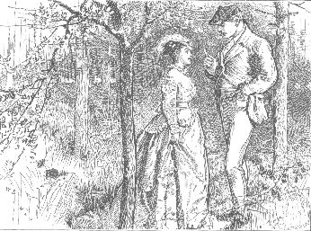

TOUCHING IT.
As soon as the general stupefaction was allayed, the general incredulity asserted itself as a matter of course.
The man who first declared that "seeing" was "believing" laid his finger (whether he knew it himself or not) on one of the fundamental follies of humanity. The easiest of all evidence to receive is the evidence that requires no other judgment to decide on it than the judgment of the eye--and it will be, on that account, the evidence which humanity is most ready to credit, as long as humanity lasts. The eyes of every body looked at Geoffrey; and the judgment of every body decided, on the evidence there visible, that the surgeon must be wrong. Lady Lundie herself (disturbed over her dinner invitations) led the general protest. "Mr. Delamayn in broken health!" she exclaimed, appealing to the better sense of her eminent medical guest. "Really, now, you can't expect us to believe that!"
Stung into action for the second time by the startling assertion of which he had been made the subject, Geoffrey rose, and looked the surgeon, steadily and insolently, straight in the face.
"Do you mean what you say?" he asked.
"Yes."
"You point me out before all these people--"
"One moment, Mr. Delamayn. I admit that I may have been wrong in directing the general attention to you. You have a right to complain of my having answered too publicly the public challenge offered to me by your friends. I apologize for having done that. But I don't retract a single word of what I have said on the subject of your health."
"You stick to it that I'm a broken-down man?"
"I do."
"I wish you were twenty years younger, Sir!"
"Why?"
"I'd ask you to step out on the lawn there and I'd show you whether I'm a broken-down man or not."
Lady Lundie looked at her brother-in-law. Sir Patrick instantly interfered.
"Mr. Delamayn," he said, "you were invited here in the character of a gentleman, and you are a guest in a lady's house."
"No! no!" said the surgeon, good humoredly. "Mr. Delamayn is using a strong argument, Sir Patrick--and that is all. If I were twenty years younger," he went on, addressing himself to Geoffrey, "and if I did step out on the lawn with you, the result wouldn't affect the question between us in the least. I don't say that the violent bodily exercises in which you are famous have damaged your muscular power. I assert that they have damaged your vital power. In what particular way they have affected it I don't consider myself bound to tell you. I simply give you a warning, as a matter of common humanity. You will do well to be content with the success you have already achieved in the field of athletic pursuits, and to alter your mode of life for the future. Accept my excuses, once more, for having said this publicly instead of privately--and don't forget my warning."
He turned to move away to another part of the room. Geoffrey fairly forced him to return to the subject.
"Wait a bit," he said. "You have had your innings. My turn now. I can't give it words as you do; but I can come to the point. And, by the Lord, I'll fix you to it! In ten days or a fortnight from this I'm going into training for the Foot-Race at Fulham. Do you say I shall break down?"
"You will probably get through your training."
"Shall I get through the race?"
"You may possibly get through the race. But if you do--"
"If I do?"
"You will never run another."
"And never row in another match?"
"Never."
"I have been asked to row in the Race, next spring; and I have said I will. Do you tell me, in so many words, that I sha'n't be able to do it?"
"Yes--in so many words."
"Positively?"
"Positively."
"Back your opinion!" cried Geoffrey, tearing his betting-book out of his pocket. "I lay you an even hundred I'm in fit condition to row in the University Match next spring."
"I don't bet, Mr. Delamayn."
With that final reply the surgeon walked away to the other end of the library. Lady Lundie (taking Blanche in custody) withdrew, at the same time, to return to the serious business of her invitations for the dinner. Geoffrey turned defiantly, book in hand, to his college friends about him. The British blood was up; and the British resolution to bet, which successfully defies common decency and common-law from one end of the country to the other, was not to be trifled with.
"Come on!" cried Geoffrey. "Back the doctor, one of you!"
Sir Patrick rose in undisguised disgust, and followed the surgeon. One, Two, and Three, invited to business by their illustrious friend, shook their thick heads at him knowingly, and answered with one accord, in one eloquent word--"Gammon!"
"One of you back him!" persisted Geoffrey, appealing to the two choral gentlemen in the back-ground, with his temper fast rising to fever heat. The two choral gentlemen compared notes, as usual. "We weren't born yesterday, Smith?" "Not if we know it, Jones."
"Smith!" said Geoffrey, with a sudden assumption of politeness ominous of something unpleasant to come.
Smith said "Yes?"--with a smile.
"Jones!"
Jones said "Yes?"--with a reflection of Smith.
"You're a couple of infernal cads--and you haven't got a hundred pound between you!"
"Come! come!" said Arnold, interfering for the first time. "This is shameful, Geoffrey!"
"Why the"--(never mind what!)--"won't they any of them take the bet?"
"If you must be a fool," returned Arnold, a little irritably on his side, "and if nothing else will keep you quiet, I'll take the bet."
"An even hundred on the doctor!" cried Geoffrey. "Done with you!"
His highest aspirations were satisfied; his temper was in perfect order again. He entered the bet in his book; and made his excuses to Smith and Jones in the heartiest way. "No offense, old chaps! Shake hands!" The two choral gentlemen were enchanted with him. "The English aristocracy--eh, Smith?" "Blood and breeding--ah, Jones!"
As soon as he had spoken, Arnold's conscience reproached him: not for betting (who is ashamed of that form of gambling in England?) but for "backing the doctor." With the best intention toward his friend, he was speculating on the failure of his friend's health. He anxiously assured Geoffrey that no man in the room could be more heartily persuaded that the surgeon was wrong than himself. "I don't cry off from the bet," he said. "But, my dear fellow, pray understand that I only take it to please you."
"Bother all that!" answered Geoffrey, with the steady eye to business, which was one of the choicest virtues in his character. "A bet's a bet--and hang your sentiment!" He drew Arnold by the arm out of ear-shot of the others. "I say!" he asked, anxiously. "Do you think I've set the old fogy's back up?"
"Do you mean Sir Patrick?"
Geoffrey nodded, and went on.
"I haven't put that little matter to him yet--about marrying in Scotland, you know. Suppose he cuts up rough with me if I try him now?" His eye wandered cunningly, as he put the question, to the farther end of the room. The surgeon was looking over a port-folio of prints. The ladies were still at work on their notes of invitation. Sir Patrick was alone at the book-shelves immersed in a volume which he had just taken down.
"Make an apology," suggested Arnold. "Sir Patrick may be a little irritable and bitter; but he's a just man and a kind man. Say you were not guilty of any intentional disrespect toward him--and you will say enough."
"All right!"
Sir Patrick, deep in an old Venetian edition of The Decameron, found himself suddenly recalled from medieval Italy to modern England, by no less a person than Geoffrey Delamayn.
"What do you want?" he asked, coldly.
"I want to make an apology," said Geoffrey. "Let by-gones be by-gones--and that sort of thing. I wasn't guilty of any intentional disrespect toward you. Forgive and forget. Not half a bad motto, Sir--eh?"
It was clumsily expressed--but still it was an apology. Not even Geoffrey could appeal to Sir Patrick's courtesy and Sir Patrick's consideration in vain.
"Not a word more, Mr. Delamayn!" said the polite old man. "Accept my excuses for any thing which I may have said too sharply, on my side; and let us by all means forget the rest."
Having met the advance made to him, in those terms, he paused, expecting Geoffrey to leave him free to return to the Decameron. To his unutterable astonishment, Geoffrey suddenly stooped over him, and whispered in his ear, "I want a word in private with you."
Sir Patrick started back, as if Geoffrey had tried to bite him.
"I beg your pardon, Mr. Delamayn--what did you say?"
"Could you give me a word in private?"
Sir Patrick put back the Decameron; and bowed in freezing silence. The confidence of the Honorable Geoffrey Delamayn was the last confidence in the world into which he desired to be drawn. "This is the secret of the apology!" he thought. "What can he possibly want with Me?"
"It's about a friend of mine," pursued Geoffrey; leading the way toward one of the windows. "He's in a scrape, my friend is. And I want to ask your advice. It's strictly private, you know." There he came to a full stop--and looked to see what impression he had produced, so far.
Sir Patrick declined, either by word or gesture, to exhibit the slightest anxiety to hear a word more.
"Would you mind taking a turn in the garden?" asked Geoffrey.
Sir Patrick pointed to his lame foot. "I have had my allowance of walking this morning," he said. "Let my infirmity excuse me."
Geoffrey looked about him for a substitute for the garden, and led the way back again toward one of the convenient curtained recesses opening out of the inner wall of the library. "We shall be private enough here," he said.
Sir Patrick made a final effort to escape the proposed conference--an undisguised effort, this time.
"Pray forgive me, Mr. Delamayn. Are you quite sure that you apply to the right person, in applying to me?"
"You're a Scotch lawyer, ain't you?"
"Certainly."
"And you understand about Scotch marriages--eh?"
Sir Patrick's manner suddenly altered.
"Is that the subject you wish to consult me on?" he asked.
"It's not me. It's my friend."
"Your friend, then?"
"Yes. It's a scrape with a woman. Here in Scotland. My friend don't know whether he's married to her or not."
"I am at your service, Mr. Delamayn."
To Geoffrey's relief--by no means unmixed with surprise--Sir Patrick not only showed no further reluctance to be consulted by him, but actually advanced to meet his wishes, by leading the way to the recess that was nearest to them. The quick brain of the old lawyer had put Geoffrey's application to him for assistance, and Blanche's application to him for assistance, together; and had built its own theory on the basis thus obtained. "Do I see a connection between the present position of Blanche's governess, and the present position of Mr. Delamayn's 'friend?' " thought Sir Patrick. "Stranger extremes than that have met me in my experience. Something may come out of this."
The two strangely-assorted companions seated themselves, one on each side of a little table in the recess. Arnold and the other guests had idled out again on to the lawn. The surgeon with his prints, and the ladies with their invitations, were safely absorbed in a distant part of the library. The conference between the two men, so trifling in appearance, so terrible in its destined influence, not over Anne's future only, but over the future of Arnold and Blanche, was, to all practical purposes, a conference with closed doors.
"Now," said Sir Patrick, "what is the question?"
"The question," said Geoffrey, "is whether my friend is married to her or not?"
"Did he mean to marry her?"
"No."
"He being a single man, and she being a single woman, at the time? And both in Scotland?"
"Yes."
"Very well. Now tell me the circumstances."
Geoffrey hesitated. The art of stating circumstances implies the cultivation of a very rare gift--the gift of arranging ideas. No one was better acquainted with this truth than Sir Patrick. He was purposely puzzling Geoffrey at starting, under the firm conviction that his client had something to conceal from him. The one process that could be depended on for extracting the truth, under those circumstances, was the process of interrogation. If Geoffrey was submitted to it, at the outset, his cunning might take the alarm. Sir Patrick's object was to make the man himself invite interrogation. Geoffrey invited it forthwith, by attempting to state the circumstances, and by involving them in the usual confusion. Sir Patrick waited until he had thoroughly lost the thread of his narrative--and then played for the winning trick.
"Would it be easier to you if I asked a few questions?" he inquired, innocently.
"Much easier."
"I am quite at your service. Suppose we clear the ground to begin with? Are you at liberty to mention names?"
"No."
"Places?"
"No."
"Dates?"
"Do you want me to be particular?"
"Be as particular as you can."
"Will it do, if I say the present year?"
"Yes. Were your friend and the lady--at some time in the present year--traveling together in Scotland?"
"No."
"Living together in Scotland?"
"No."
"What were they doing together in Scotland?"
"Well--they were meeting each other at an inn."
"Oh? They were meeting each other at an inn. Which was first at the rendezvous?"
"The woman was first. Stop a bit! We are getting to it now." He produced from his pocket the written memorandum of Arnold's proceedings at Craig Fernie, which he had taken down from Arnold's own lips. "I've got a bit of note here," he went on. "Perhaps you'd like to have a look at it?"
Sir Patrick took the note--read it rapidly through to himself--then re-read it, sentence by sentence, to Geoffrey; using it as a text to speak from, in making further inquiries.
" 'He asked for her by the name of his wife, at the door,' " read Sir Patrick. "Meaning, I presume, the door of the inn? Had the lady previously given herself out as a married woman to the people of the inn?"
"Yes."
"How long had she been at the inn before the gentleman joined her?"
"Only an hour or so."
"Did she give a name?"
"I can't be quite sure--I should say not."
"Did the gentleman give a name?"
"No. I'm certain he didn't."
Sir Patrick returned to the memorandum.
" 'He said at dinner, before the landlady and the waiter, I take these rooms for my wife. He made her say he was her husband, at the same time.' Was that done jocosely, Mr. Delamayn--either by the lady or the gentleman?"
"No. It was done in downright earnest."
"You mean it was done to look like earnest, and so to deceive the landlady and the waiter?"
"Yes."
Sir Patrick returned to the memorandum.
" 'After that, he stopped all night.' Stopped in the rooms he had taken for himself and his wife?"
"Yes."
"And what happened the next day?"
"He went away. Wait a bit! Said he had business for an excuse."
"That is to say, he kept up the deception with the people of the inn? and left the lady behind him, in the character of his wife?"
"That's it."
"Did he go back to the inn?"
"No."
"How long did the lady stay there, after he had gone?"
"She staid--well, she staid a few days."
"And your friend has not seen her since?"
"No."
"Are your friend and the lady English or Scotch?"
"Both English."
"At the time when they met at the inn, had they either of them arrived in Scotland, from the place in which they were previously living, within a period of less than twenty-one days?"
Geoffrey hesitated. There could be no difficulty in answering for Anne. Lady Lundie and her domestic circle had occupied Windygates for a much longer period than three weeks before the date of the lawn-party. The question, as it affected Arnold, was the only question that required reflection. After searching his memory for details of the conversation which had taken place between them, when he and Arnold had met at the lawn-party, Geoffrey recalled a certain reference on the part of his friend to a performance at the Edinburgh theatre, which at once decided the question of time. Arnold had been necessarily detained in Edinburgh, before his arrival at Windygates, by legal business connected with his inheritance; and he, like Anne, had certainly been in Scotland, before they met at Craig Fernie, for a longer period than a period of three weeks He accordingly informed Sir Patrick that the lady and gentleman had been in Scotland for more than twenty-one days--and then added a question on his own behalf: "Don't let me hurry you, Sir--but, shall you soon have done?"
"I shall have done, after two more questions," answered Sir Patrick. "Am I to understand that the lady claims, on the strength of the circumstances which you have mentioned to me, to be your friend's wife?"
Geoffrey made an affirmative reply. The readiest means of obtaining Sir Patrick's opinion was, in this case, to answer, Yes. In other words, to represent Anne (in the character of "the lady") as claiming to be married to Arnold (in the character of "his friend").
Having made this concession to circumstances, he was, at the same time, quite cunning enough to see that it was of vital importance to the purpose which he had in view, to confine himself strictly to this one perversion of the truth. There could be plainly no depending on the lawyer's opinion, unless that opinion was given on the facts exactly as they had occurred at the inn. To the facts he had, thus far, carefully adhered; and to the facts (with the one inevitable departure from them which had been just forced on him) he determined to adhere to the end.
"Did no letters pass between the lady and gentleman?" pursued Sir Patrick.
"None that I know of," answered Geoffrey, steadily returning to the truth.
"I have done, Mr. Delamayn."
"Well? and what's your opinion?"
"Before I give my opinion I am bound to preface it by a personal statement which you are not to take, if you please, as a statement of the law. You ask me to decide--on the facts with which you have supplied me--whether your friend is, according to the law of Scotland, married or not?"
Geoffrey nodded. "That's it!" he said, eagerly.
"My experience, Mr. Delamayn, is that any single man, in Scotland, may marry any single woman, at any time, and under any circumstances. In short, after thirty years' practice as a lawyer, I don't know what is not a marriage in Scotland."
"In plain English," said Geoffrey, "you mean she's his wife?"
In spite of his cunning; in spite of his self-command, his eyes brightened as he said those words. And the tone in which he spoke--though too carefully guarded to be a tone of triumph--was, to a fine ear, unmistakably a tone of relief.
Neither the look nor the tone was lost on Sir Patrick.
His first suspicion, when he sat down to the conference, had been the obvious suspicion that, in speaking of "his friend," Geoffrey was speaking of himself. But, like all lawyers, he habitually distrusted first impressions, his own included. His object, thus far, had been to solve the problem of Geoffrey's true position and Geoffrey's real motive. He had set the snare accordingly, and had caught his bird.
It was now plain to his mind--first, that this man who was consulting him, was, in all probability, really speaking of the case of another person: secondly, that he had an interest (of what nature it was impossible yet to say) in satisfying his own mind that "his friend" was, by the law of Scotland, indisputably a married man. Having penetrated to that extent the secret which Geoffrey was concealing from him, he abandoned the hope of making any further advance at that present sitting. The next question to clear up in the investigation, was the question of who the anonymous "lady" might be. And the next discovery to make was, whether "the lady" could, or could not, be identified with Anne Silvester. Pending the inevitable delay in reaching that result, the straight course was (in Sir Patrick's present state of uncertainty) the only course to follow in laying down the law. He at once took the question of the marriage in hand--with no concealment whatever, as to the legal bearings of it, from the client who was consulting him.
"Don't rush to conclusions, Mr. Delamayn," he said. "I have only told you what my general experience is thus far. My professional opinion on the special case of your friend has not been given yet."
Geoffrey's face clouded again. Sir Patrick carefully noted the new change in it.
"The law of Scotland," he went on, "so far as it relates to Irregular Marriages, is an outrage on common decency and common-sense. If you think my language in thus describing it too strong--I can refer you to the language of a judicial authority. Lord Deas delivered a recent judgment of marriage in Scotland, from the bench, in these words: 'Consent makes marriage. No form or ceremony, civil or religious; no notice before, or publication after; no cohabitation, no writing, no witnesses even, are essential to the constitution of this, the most important contract which two persons can enter into.'--There is a Scotch judge's own statement of the law that he administers! Observe, at the same time, if you please, that we make full legal provision in Scotland for contracts affecting the sale of houses and lands, horses and dogs. The only contract which we leave without safeguards or precautions of any sort is the contract that unites a man and a woman for life. As for the authority of parents, and the innocence of children, our law recognizes no claim on it either in the one case or in the other. A girl of twelve and a boy of fourteen have nothing to do but to cross the Border, and to be married--without the interposition of the slightest delay or restraint, and without the slightest attempt to inform their parents on the part of the Scotch law. As to the marriages of men and women, even the mere interchange of consent which, as you have just heard, makes them man and wife, is not required to be directly proved: it may be proved by inference. And, more even than that, whatever the law for its consistency may presume, men and women are, in point of fact, held to be married in Scotland where consent has never been interchanged, and where the parties do not even know that they are legally held to be married persons. Are you sufficiently confused about the law of Irregular Marriages in Scotland by this time, Mr. Delamayn? And have I said enough to justify the strong language I used when I undertook to describe it to you?"
"Who's that 'authority' you talked of just now?" inquired Geoffrey. "Couldn't I ask him?"
"You might find him flatly contradicted, if you did ask him by another authority equally learned and equally eminent," answered Sir Patrick. "I am not joking--I am only stating facts. Have you heard of the Queen's Commission?"
"No."
"Then listen to this. In March, 'sixty-five, the Queen appointed a Commission to inquire into the Marriage-Laws of the United Kingdom. The Report of that Commission is published in London; and is accessible to any body who chooses to pay the price of two or three shillings for it. One of the results of the inquiry was, the discovery that high authorities were of entirely contrary opinions on one of the vital questions of Scottish marriage-law. And the Commissioners, in announcing that fact, add that the question of which opinion is right is still disputed, and has never been made the subject of legal decision. Authorities are every where at variance throughout the Report. A haze of doubt and uncertainty hangs in Scotland over the most important contract of civilized life. If no other reason existed for reforming the Scotch marriage-law, there would be reason enough afforded by that one fact. An uncertain marriage-law is a national calamity."
"You can tell me what you think yourself about my friend's case--can't you?" said Geoffrey, still holding obstinately to the end that he had in view.
"Certainly. Now that I have given you due warning of the danger of implicitly relying on any individual opinion, I may give my opinion with a clear conscience. I say that there has not been a positive marriage in this case. There has been evidence in favor of possibly establishing a marriage--nothing more."
The distinction here was far too fine to be appreciated by Geoffrey's mind. He frowned heavily, in bewilderment and disgust.
"Not married!" he exclaimed, "when they said they were man and wife, before witnesses?"
"That is a common popular error," said Sir Patrick. "As I have already told you, witnesses are not legally necessary to make a marriage in Scotland. They are only valuable--as in this case--to help, at some future time, in proving a marriage that is in dispute."
Geoffrey caught at the last words.
"The landlady and the waiter might make it out to be a marriage, then?" he said.
"Yes. And, remember, if you choose to apply to one of my professional colleagues, he might possibly tell you they were married already. A state of the law which allows the interchange of matrimonial consent to be proved by inference leaves a wide door open to conjecture. Your friend refers to a certain lady, in so many words, as his wife. The lady refers to your friend, in so many words, as her husband. In the rooms which they have taken, as man and wife, they remain, as man and wife, till the next morning. Your friend goes away, without undeceiving any body. The lady stays at the inn, for some days after, in the character of his wife. And all these circumstances take place in the presence of competent witnesses. Logically--if not legally--there is apparently an inference of the interchange of matrimonial consent here. I stick to my own opinion, nevertheless. Evidence in proof of a marriage (I say)--nothing more."
While Sir Patrick had been speaking, Geoffrey had been considering with himself. By dint of hard thinking he had found his way to a decisive question on his side.
"Look here!" he said, dropping his heavy hand down on the table. "I want to bring you to book, Sir! Suppose my friend had another lady in his eye?"
"Yes?"
"As things are now--would you advise him to marry her?"
"As things are now--certainly not!"
Geoffrey got briskly on his legs, and closed the interview.
"That will do," he said, "for him and for me."
With those words he walked back, without ceremony, into the main thoroughfare of the room.
"I don't know who your friend is," thought Sir Patrick, looking after him. "But if your interest in the question of his marriage is an honest and a harmless interest, I know no more of human nature than the babe unborn!"
Immediately on leaving Sir Patrick, Geoffrey was encountered by one of the servants in search of him.
"I beg your pardon, Sir," began the man. "The groom from the Honorable Mr. Delamayn's--"
"Yes? The fellow who brought me a note from my brother this morning?"
"He's expected back, Sir--he's afraid he mustn't wait any longer."
"Come here, and I'll give you the answer for him."
He led the way to the writing-table, and referred to Julius's letter again. He ran his eye carelessly over it, until he reached the final lines: "Come to-morrow, and help us to receive Mrs. Glenarm." For a while he paused, with his eye fixed on that sentence; and with the happiness of three people--of Anne, who had loved him; of Arnold, who had served him; of Blanche, guiltless of injuring him--resting on the decision that guided his movements for the next day. After what had passed that morning between Arnold and Blanche, if he remained at Lady Lundie's, he had no alternative but to perform his promise to Anne. If he returned to his brother's house, he had no alternative but to desert Anne, on the infamous pretext that she was Arnold's wife.
He suddenly tossed the letter away from him on the table, and snatched a sheet of note-paper out of the writing-case. "Here goes for Mrs. Glenarm!" he said to himself; and wrote back to his brother, in one line: "Dear Julius, Expect me to-morrow. G. D." The impassible man-servant stood by while he wrote, looking at his magnificent breadth of chest, and thinking what a glorious "staying-power" was there for the last terrible mile of the coming race.
"There you are!" he said, and handed his note to the man.
"All right, Geoffrey?" asked a friendly voice behind him.
He turned--and saw Arnold, anxious for news of the consultation with Sir Patrick.
"Yes," he said. "All right."
Irish Marriages (In the Prologue).--See Report, pages XII., XIII., XXIV.
Irregular Marriages in Scotland.--Statement of the law by Lord Deas. Report, page XVI.--Marriages of children of tender years. Examination of Mr. Muirhead by Lord Chelmsford (Question 689).--Interchange of consent, established by inference. Examination of Mr. Muirhead by the Lord Justice Clerk (Question 654)--Marriage where consent has never been interchanged. Observations of Lord Deas. Report, page XIX.--Contradiction of opinions between authorities. Report, pages XIX., XX.--Legal provision for the sale of horses and dogs. No legal provision for the marriage of men and women. Mr. Seeton's Remarks. Report, page XXX.--Conclusion of the Commissioners. In spite of the arguments advanced before them in favor of not interfering with Irregular Marriages in Scotland, the Commissioners declare their opinion that "Such marriages ought not to continue." (Report, page XXXIV.)
In reference to the arguments (alluded to above) in favor of allowing the present disgraceful state of things to continue, I find them resting mainly on these grounds: That Scotland doesn't like being interfered with by England (!). That Irregular Marriages cost nothing (!!). That they are diminishing in number, and may therefore be trusted, in course of time, to exhaust themselves (!!!). That they act, on certain occasions, in the capacity of a moral trap to catch a profligate man (!!!!). Such is the elevated point of view from which the Institution of Marriage is regarded by some of the most pious and learned men in Scotland. A legal enactment providing for the sale of your wife, when you have done with her, or of your husband; when you "really can't put up with him any longer," appears to be all that is wanting to render this North British estimate of the "Estate of Matrimony" practically complete. It is only fair to add that, of the witnesses giving evidence--oral and written--before the Commissioners, fully one-half regard the Irregular Marriages of Scotland from the Christian and the civilized point of view, and entirely agree with the authoritative conclusion already cited--that such marriages ought to be abolished.
W. C.
DONE!
ARNOLD was a little surprised by the curt manner in which Geoffrey answered him.
"Has Sir Patrick said any thing unpleasant?" he asked.
"Sir Patrick has said just what I wanted him to say."
"No difficulty about the marriage?"
"None."
"No fear of Blanche--"
"She won't ask you to go to Craig Fernie--I'll answer for that!" He said the words with a strong emphasis on them, took his brother's letter from the table, snatched up his hat, and went out.
His friends, idling on the lawn, hailed him. He passed by them quickly without answering, without so much as a glance at them over his shoulder. Arriving at the rose-garden, he stopped and took out his pipe; then suddenly changed his mind, and turned back again by another path. There was no certainty, at that hour of the day, of his being left alone in the rose-garden. He had a fierce and hungry longing to be by himself; he felt as if he could have been the death of any body who came and spoke to him at that moment. With his head down and his brows knit heavily, he followed the path to see what it ended in. It ended in a wicket-gate which led into a kitchen-garden. Here he was well out of the way of interruption: there was nothing to attract visitors in the kitchen-garden. He went on to a walnut-tree planted in the middle of the inclosure, with a wooden bench and a broad strip of turf running round it. After first looking about him, he seated himself and lit his pipe.
"I wish it was done!" he said.
He sat, with his elbows on his knees, smoking and thinking. Before long the restlessness that had got possession of him forced him to his feet again. He rose, and paced round and round the strip of greensward under the walnut-tree, like a wild beast in a cage.
What was the meaning of this disturbance in the inner man? Now that he had committed himself to the betrayal of the friend who had trusted and served him, was he torn by remorse?
He was no more torn by remorse than you are while your eye is passing over this sentence. He was simply in a raging fever of impatience to see himself safely landed at the end which he had in view.
Why should he feel remorse? All remorse springs, more or less directly, from the action of two sentiments, which are neither of them inbred in the natural man. The first of these sentiments is the product of the respect which we learn to feel for ourselves. The second is the product of the respect which we learn to feel for others. In their highest manifestations, these two feelings exalt themselves, until the first he comes the love of God, and the second the love of Man. I have injured you, and I repent of it when it is done. Why should I repent of it if I have gained something by it for my own self and if you can't make me feel it by injuring Me? I repent of it because there has been a sense put into me which tells me that I have sinned against Myself, and sinned against You. No such sense as that exists among the instincts of the natural man. And no such feelings as these troubled Geoffrey Delamayn; for Geoffrey Delamayn was the natural man.
When the idea of his scheme had sprung to life in his mind, the novelty of it had startled him--the enormous daring of it, suddenly self-revealed, had daunted him. The signs of emotion which he had betrayed at the writing-table in the library were the signs of mere mental perturbation, and of nothing more.
That first vivid impression past, the idea had made itself familiar to him. He had become composed enough to see such difficulties as it involved, and such consequences as it implied. These had fretted him with a passing trouble; for these he plainly discerned. As for the cruelty and the treachery of the thing he meditated doing--that consideration never crossed the limits of his mental view. His position toward the man whose life he had preserved was the position of a dog. The "noble animal" who has saved you or me from drowning will fly at your throat or mine, under certain conditions, ten minutes afterward. Add to the dog's unreasoning instinct the calculating cunning of a man; suppose yourself to be in a position to say of some trifling thing, "Curious! at such and such a time I happened to pick up such and such an object; and now it turns out to be of some use to me!"--and there you have an index to the state of Geoffrey's feeling toward his friend when he recalled the past or when he contemplated the future. When Arnold had spoken to him at the critical moment, Arnold had violently irritated him; and that was all.
The same impenetrable insensibility, the same primitively natural condition of the moral being, prevented him from being troubled by the slightest sense of pity for Anne. "She's out of my way!" was his first thought. "She's provided for, without any trouble to Me!" was his second. He was not in the least uneasy about her. Not the slightest doubt crossed his mind that, when once she had realized her own situation, when once she saw herself placed between the two alternatives of facing her own ruin or of claiming Arnold as a last resource, she would claim Arnold. She would do it as a matter of course; because he would have done it in her place.
But he wanted it over. He was wild, as he paced round and round the walnut-tree, to hurry on the crisis and be done with it. Give me my freedom to go to the other woman, and to train for the foot-race--that's what I want. They injured? Confusion to them both! It's I who am injured by them. They are the worst enemies I have! They stand in my way.
How to be rid of them? There was the difficulty. He had made up his mind to be rid of them that day. How was he to begin?
There was no picking a quarrel with Arnold, and so beginning with him. This course of proceeding, in Arnold's position toward Blanche, would lead to a scandal at the outset--a scandal which would stand in the way of his making the right impression on Mrs. Glenarm. The woman--lonely and friendless, with her sex and her position both against her if she tried to make a scandal of it--the woman was the one to begin with. Settle it at once and forever with Anne; and leave Arnold to hear of it and deal with it, sooner or later, no matter which.
How was he to break it to her before the day was out?
By going to the inn and openly addressing her to her face as Mrs. Arnold Brinkworth? No! He had had enough, at Windygates, of meeting her face to face. The easy way was to write to her, and send the letter, by the first messenger he could find, to the inn. She might appear afterward at Windygates; she might follow him to his brother's; she might appeal to his father. It didn't matter; he had got the whip-hand of her now. "You are a married woman." There was the one sufficient answer, which was strong enough to back him in denying any thing!
He made out the letter in his own mind. "Something like this would do," he thought, as he went round and round the walnut-tree: "You may be surprised not to have seen me. You have only yourself to thank for it. I know what took place between you and him at the inn. I have had a lawyer's advice. You are Arnold Brinkworth's wife. I wish you joy, and good-by forever." Address those lines: "To Mrs. Arnold Brinkworth;" instruct the messenger to leave the letter late that night, without waiting for an answer; start the first thing the next morning for his brother's house; and behold, it was done!
But even here there was an obstacle--one last exasperating obstacle--still in the way.
If she was known at the inn by any name at all, it was by the name of Mrs. Silvester. A letter addressed to "Mrs. Arnold Brinkworth" would probably not be taken in at the door; or if it was admitted, and if it was actually offered to her, she might decline to receive it, as a letter not addressed to herself. A man of readier mental resources would have seen that the name on the outside of the letter mattered little or nothing, so long as the contents were read by the person to whom they were addressed. But Geoffrey's was the order of mind which expresses disturbance by attaching importance to trifles. He attached an absurd importance to preserving absolute consistency in his letter, outside and in. If he declared her to be Arnold Brinkworth's wife, he must direct to her as Arnold Brinkworth's wife; or who could tell what the law might say, or what scrape he might not get himself into by a mere scratch of the pen! The more he thought of it, the more persuaded he felt of his own cleverness here, and the hotter and the angrier he grew.
There is a way out of every thing. And there was surely a way out of this, if he could only see it.
He failed to see it. After dealing with all the great difficulties, the small difficulty proved too much for him. It struck him that he might have been thinking too long about it--considering that he was not accustomed to thinking long about any thing. Besides, his head was getting giddy, with going mechanically round and round the tree. He irritably turned his back on the tree and struck into another path: resolved to think of something else, and then to return to his difficulty, and see it with a new eye.
Leaving his thoughts free to wander where they liked, his thoughts naturally busied themselves with the next subject that was uppermost in his mind, the subject of the Foot-Race. In a week's time his arrangements ought to be made. Now, as to the training, first.
He decided on employing two trainers this time. One to travel to Scotland, and begin with him at his brother's house. The other to take him up, with a fresh eye to him, on his return to London. He turned over in his mind the performances of the formidable rival against whom he was to be matched. That other man was the swiftest runner of the two. The betting in Geoffrey's favor was betting which calculated on the unparalleled length of the race, and on Geoffrey's prodigious powers of endurance. How long he should "wait on" the man? Whereabouts it would be safe to "pick the man up?" How near the end to calculate the man's exhaustion to a nicety, and "put on the spurt," and pass him? These were nice points to decide. The deliberations of a pedestrian-privy-council would be required to help him under this heavy responsibility. What men could he trust? He could trust A. and B.--both of them authorities: both of them stanch. Query about C.? As an authority, unexceptionable; as a man, doubtful. The problem relating to C. brought him to a standstill--and declined to be solved, even then. Never mind! he could always take the advice of A. and B. In the mean time devote C. to the infernal regions; and, thus dismissing him, try and think of something else. What else? Mrs. Glenarm? Oh, bother the women! one of them is the same as another. They all waddle when they run; and they all fill their stomachs before dinner with sloppy tea. That's the only difference between women and men--the rest is nothing but a weak imitation of Us. Devote the women to the infernal regions; and, so dismissing them, try and think of something else. Of what? Of something worth thinking of, this time--of filling another pipe.
He took out his tobacco-pouch; and suddenly suspended operations at the moment of opening it.
What was the object he saw, on the other side of a row of dwarf pear-trees, away to the right? A woman--evidently a servant by her dress--stooping down with her back to him, gathering something: herbs they looked like, as well as he could make them out at the distance.
What was that thing hanging by a string at the woman's side? A slate? Yes. What the deuce did she want with a slate at her side? He was in search of something to divert his mind--and here it was found. "Any thing will do for me," he thought. "Suppose I 'chaff' her a little about her slate?"
He called to the woman across the pear-trees. "Hullo!"
The woman raised herself, and advanced toward him slowly--looking at him, as she came on, with the sunken eyes, the sorrow-stricken face, the stony tranquillity of Hester Dethridge.
Geoffrey was staggered. He had not bargained for exchanging the dullest producible vulgarities of human speech (called in the language of slang, "Chaff") with such a woman as this.
"What's that slate for?" he asked, not knowing what else to say, to begin with.
The woman lifted her hand to her lips--touched them--and shook her head.
"Dumb?"
The woman bowed her head.
"Who are you?"
The woman wrote on her slate, and handed it to him over the pear-trees. He read:--"I am the cook."
"Well, cook, were you born dumb?"
The woman shook her head.
"What struck you dumb?"
The woman wrote on her slate:--"A blow."
"Who gave you the blow?"
She shook her head.
"Won't you tell me?"
She shook her head again.
Her eyes had rested on his face while he was questioning her; staring at him, cold, dull, and changeless as the eyes of a corpse. Firm as his nerves were--dense as he was, on all ordinary occasions, to any thing in the shape of an imaginative impression--the eyes of the dumb cook slowly penetrated him with a stealthy inner chill. Something crept at the marrow of his back, and shuddered under the roots of his hair. He felt a sudden impulse to get away from her. It was simple enough; he had only to say good-morning, and go on. He did say good-morning--but he never moved. He put his hand into his pocket, and offered her some money, as a way of making her go. She stretched out her hand across the pear-trees to take it--and stopped abruptly, with her arm suspended in the air. A sinister change passed over the deathlike tranquillity of her face. Her closed lips slowly dropped apart. Her dull eyes slowly dilated; looked away, sideways, from his eyes; stopped again; and stared, rigid and glittering, over his shoulder--stared as if they saw a sight of horror behind him. "What the devil are you looking at?" he asked--and turned round quickly, with a start. There was neither person nor thing to be seen behind him. He turned back again to the woman. The woman had left him, under the influence of some sudden panic. She was hurrying away from him--running, old as she was--flying the sight of him, as if the sight of him was the pestilence.
"Mad!" he thought--and turned his back on the sight of her.
He found himself (hardly knowing how he had got there) under the walnut-tree once more. In a few minutes his hardy nerves had recovered themselves--he could laugh over the remembrance of the strange impression that had been produced on him. "Frightened for the first time in my life," he thought--"and that by an old woman! It's time I went into training again, when things have come to this!"
He looked at his watch. It was close on the luncheon hour up at the house; and he had not decided yet what to do about his letter to Anne. He resolved to decide, then and there.
The woman--the dumb woman, with the stony face and the horrid eyes--reappeared in his thoughts, and got in the way of his decision. Pooh! some crazed old servant, who might once have been cook; who was kept out of charity now. Nothing more important than that. No more of her! no more of her!
He laid himself down on the grass, and gave his mind to the serious question. How to address Anne as "Mrs. Arnold Brinkworth?" and how to make sure of her receiving the letter?
The dumb old woman got in his way again.
He closed his eyes impatiently, and tried to shut her out in a darkness of his own making.
The woman showed herself through the darkness. He saw her, as if he had just asked her a question, writing on her slate. What she wrote he failed to make out. It was all over in an instant. He started up, with a feeling of astonishment at himself--and, at the same moment his brain cleared with the suddenness of a flash of light. He saw his way, without a conscious effort on his own part, through the difficulty that had troubled him. Two envelopes, of course: an inner one, unsealed, and addressed to "Mrs. Arnold Brinkworth;" an outer one, sealed, and addressed to "Mrs. Silvester:" and there was the problem solved! Surely the simplest problem that had ever puzzled a stupid head.
Why had he not seen it before? Impossible to say.
How came he to have seen it now?
The dumb old woman reappeared in his thoughts--as if the answer to the question lay in something connected with her.
He became alarmed about himself, for the first time in his life. Had this persistent impression, produced by nothing but a crazy old woman, any thing to do with the broken health which the surgeon had talked about? Was his head on the turn? Or had he smoked too much on an empty stomach, and gone too long (after traveling all night) without his customary drink of ale?
He left the garden to put that latter theory to the test forthwith. The betting would have gone dead against him if the public had seen him at that moment. He looked haggard and anxious--and with good reason too. His nervous system had suddenly forced itself on his notice, without the slightest previous introduction, and was saying (in an unknown tongue), Here I am!
Returning to the purely ornamental part of the grounds, Geoffrey encountered one of the footmen giving a message to one of the gardeners. He at once asked for the butler--as the only safe authority to consult in the present emergency.
Conducted to the butler's pantry, Geoffrey requested that functionary to produce a jug of his oldest ale, with appropriate solid nourishment in the shape of "a hunk of bread and cheese."
The butler stared. As a form of condescension among the upper classes this was quite new to him.
"Luncheon will be ready directly, Sir."
"What is there for lunch?"
The butler ran over an appetizing list of good dishes and rare wines.
"The devil take your kickshaws!" said Geoffrey. "Give me my old ale, and my hunk of bread and cheese."
"Where will you take them, Sir?"
"Here, to be sure! And the sooner the better."
The butler issued the necessary orders with all needful alacrity. He spread the simple refreshment demanded, before his distinguished guest, in a state of blank bewilderment. Here was a nobleman's son, and a public celebrity into the bargain, filling himself with bread and cheese and ale, in at once the most voracious and the most unpretending manner, at his table! The butler ventured on a little complimentary familiarity. He smiled, and touched the betting-book in his breast-pocket. "I've put six pound on you, Sir, for the Race." "All right, old boy! you shall win your money!" With those noble words the honorable gentleman clapped him on the back, and held out his tumbler for some more ale. The butler felt trebly an Englishman as he filled the foaming glass. Ah! foreign nations may have their revolutions! foreign aristocracies may tumble down! The British aristocracy lives in the hearts of the people, and lives forever!
"Another!" said Geoffrey, presenting his empty glass. "Here's luck!" He tossed off his liquor at a draught, and nodded to the butler, and went out.
Had the experiment succeeded? Had he proved his own theory about himself to be right? Not a doubt of it! An empty stomach, and a determination of tobacco to the head--these were the true causes of that strange state of mind into which he had fallen in the kitchen-garden. The dumb woman with the stony face vanished as if in a mist. He felt nothing now but a comfortable buzzing in his head, a genial warmth all over him, and an unlimited capacity for carrying any responsibility that could rest on mortal shoulders. Geoffrey was himself again.
He went round toward the library, to write his letter to Anne--and so have done with that, to begin with. The company had collected in the library waiting for the luncheon-bell. All were idly talking; and some would be certain, if he showed himself, to fasten on him. He turned back again, without showing himself. The only way of writing in peace and quietness would be to wait until they were all at luncheon, and then return to the library. The same opportunity would serve also for finding a messenger to take the letter, without exciting attention, and for going away afterward, unseen, on a long walk by himself. An absence of two or three hours would cast the necessary dust in Arnold's eyes; for it would be certainly interpreted by him as meaning absence at an interview with Anne.
He strolled idly through the grounds, farther and farther away from the house.
The talk in the library--aimless and empty enough, for the most part--was talk to the purpose, in one corner of the room, in which Sir Patrick and Blanche were sitting together.
"Uncle! I have been watching you for the last minute or two."
"At my age, Blanche? that is paying me a very pretty compliment."
"Do you know what I have seen?"
"You have seen an old gentleman in want of his lunch."
"I have seen an old gentleman with something on his mind. What is it?"
"Suppressed gout, my dear."
"That won't do! I am not to be put off in that way. Uncle! I want to know--"
"Stop there, Blanche! A young lady who says she 'wants to know,' expresses very dangerous sentiments. Eve 'wanted to know'--and see what it led to. Faust 'wanted to know'--and got into bad company, as the necessary result."
"You are feeling anxious about something," persisted Blanche. "And, what is more, Sir Patrick, you behaved in a most unaccountable manner a little while since."
"When?"
"When you went and hid yourself with Mr. Delamayn in that snug corner there. I saw you lead the way in, while I was at work on Lady Lundie's odious dinner-invitations."
"Oh! you call that being at work, do you? I wonder whether there was ever a woman yet who could give the whole of her mind to any earthly thing that she had to do?"
"Never mind the women! What subject in common could you and Mr. Delamayn possibly have to talk about? And why do I see a wrinkle between your eyebrows, now you have done with him?--a wrinkle which certainly wasn't there before you had that private conference together?"
Before answering, Sir Patrick considered whether he should take Blanche into his confidence or not. The attempt to identify Geoffrey's unnamed "lady," which he was determined to make, would lead him to Craig Fernie, and would no doubt end in obliging him to address himself to Anne. Blanche's intimate knowledge of her friend might unquestionably be made useful to him under these circumstances; and Blanche's discretion was to be trusted in any matter in which Miss Silvester's interests were concerned. On the other hand, caution was imperatively necessary, in the present imperfect state of his information--and caution, in Sir Patrick's mind, carried the day. He decided to wait and see what came first of his investigation at the inn.
"Mr. Delamayn consulted me on a dry point of law, in which a friend of his was interested," said Sir Patrick. "You have wasted your curiosity, my dear, on a subject totally unworthy of a lady's notice."
Blanche's penetration was not to be deceived on such easy terms as these. "Why not say at once that you won't tell me?" she rejoined. "You shutting yourself up with Mr. Delamayn to talk law! You looking absent and anxious about it afterward! I am a very unhappy girl!" said Blanche, with a little, bitter sigh. "There is something in me that seems to repel the people I love. Not a word in confidence can I get from Anne. And not a word in confidence can I get from you. And I do so long to sympathize! It's very hard. I think I shall go to Arnold."
Sir Patrick took his niece's hand.
"Stop a minute, Blanche. About Miss Silvester? Have you heard from her to-day?"
"No. I am more unhappy about her than words can say."
"Suppose somebody went to Craig Fernie and tried to find out the cause of Miss Silvester's silence? Would you believe that somebody sympathized with you then?"
Blanche's face flushed brightly with pleasure and surprise. She raised Sir Patrick's hand gratefully to her lips.
"Oh!" she exclaimed. "You don't mean that you would do that?"
"I am certainly the last person who ought to do it--seeing that you went to the inn in flat rebellion against my orders, and that I only forgave you, on your own promise of amendment, the other day. It is a miserably weak proceeding on the part of 'the head of the family' to be turning his back on his own principles, because his niece happens to be anxious and unhappy. Still (if you could lend me your little carriage), I might take a surly drive toward Craig Fernie, all by myself, and I might stumble against Miss Silvester--in case you have any thing to say."
"Any thing to say?" repeated Blanche. She put her arm round her uncle's neck, and whispered in his ear one of the most interminable messages that ever was sent from one human being to another. Sir Patrick listened, with a growing interest in the inquiry on which he was secretly bent. "The woman must have some noble qualities," he thought, "who can inspire such devotion as this."
While Blanche was whispering to her uncle, a second private conference--of the purely domestic sort--was taking place between Lady Lundie and the butler, in the hall outside the library door.
"I am sorry to say, my lady, Hester Dethridge has broken out again."
"What do you mean?"
"She was all right, my lady, when she went into the kitchen-garden, some time since. She's taken strange again, now she has come back. Wants the rest of the day to herself, your ladyship. Says she's overworked, with all the company in the house--and, I must say, does look like a person troubled and worn out in body and mind."
"Don't talk nonsense, Roberts! The woman is obstinate and idle and insolent. She is now in the house, as you know, under a month's notice to leave. If she doesn't choose to do her duty for that month I shall refuse to give her a character. Who is to cook the dinner to-day if I give Hester Dethridge leave to go out?"
"Any way, my lady, I am afraid the kitchen-maid will have to do her best to-day. Hester is very obstinate, when the fit takes her--as your ladyship says."
"If Hester Dethridge leaves the kitchen-maid to cook the dinner, Roberts, Hester Dethridge leaves my service to-day. I want no more words about it. If she persists in setting my orders at defiance, let her bring her account-book into the library, while we are at lunch, and lay it out my desk. I shall be back in the library after luncheon--and if I see the account-book I shall know what it means. In that case, you will receive my directions to settle with her and send her away. Ring the luncheon-bell."
The luncheon-bell rang. The guests all took the direction of the dining-room; Sir Patrick following, from the far end of the library, with Blanche on his arm. Arrived at the dining-room door, Blanche stopped, and asked her uncle to excuse her if she left him to go in by himself.
"I will be back directly," she said. "I have forgotten something up stairs."
Sir Patrick went in. The dining-room door closed; and Blanche returned alone to the library. Now on one pretense, and now on another, she had, for three days past, faithfully fulfilled the engagement she had made at Craig Fernie to wait ten minutes after luncheon-time in the library, on the chance of seeing Anne. On this, the fourth occasion, the faithful girl sat down alone in the great room, and waited with her eyes fixed on the lawn outside.
Five minutes passed, and nothing living appeared but the birds hopping about the grass.
In less than a minute more Blanche's quick ear caught the faint sound of a woman's dress brushing over the lawn. She ran to the nearest window, looked out, and clapped her hands with a cry of delight. There was the well-known figure, rapidly approaching her! Anne was true to their friendship--Anne had kept her engagement at last!
Blanche hurried out, and drew her into the library in triumph. "This makes amends, love for every thing! You answer my letter in the best of all ways--you bring me your own dear self."
She placed Anne in a chair, and, lifting her veil, saw her plainly in the brilliant mid-day light.
The change in the whole woman was nothing less than dreadful to the loving eyes that rested on her. She looked years older than her real age. There was a dull calm in her face, a stagnant, stupefied submission to any thing, pitiable to see. Three days and nights of solitude and grief, three days and nights of unresting and unpartaken suspense, had crushed that sensitive nature, had frozen that warm heart. The animating spirit was gone--the mere shell of the woman lived and moved, a mockery of her former self.
"Oh, Anne! Anne! What can have happened to you? Are you frightened? There's not the least fear of any body disturbing us. They are all at luncheon, and the servants are at dinner. We have the room entirely to ourselves. My darling! you look so faint and strange! Let me get you something."
Anne drew Blanche's head down and kissed her. It was done in a dull, slow way--without a word, without a tear, without a sigh.
"You're tired--I'm sure you're tired. Have you walked here? You sha'n't go back on foot; I'll take care of that!"
Anne roused herself at those words. She spoke for the first time. The tone was lower than was natural to her; sadder than was natural to her--but the charm of her voice, the native gentleness and beauty of it, seemed to have survived the wreck of all besides.
"I don't go back, Blanche. I have left the inn."
"Left the inn? With your husband?"
She answered the first question--not the second.
"I can't go back," she said. "The inn is no place for me. A curse seems to follow me, Blanche, wherever I go. I am the cause of quarreling and wretchedness, without meaning it, God knows. The old man who is head-waiter at the inn has been kind to me, my dear, in his way, and he and the landlady had hard words together about it. A quarrel, a shocking, violent quarrel. He has lost his place in consequence. The woman, his mistress, lays all the blame of it to my door. She is a hard woman; and she has been harder than ever since Bishopriggs went away. I have missed a letter at the inn--I must have thrown it aside, I suppose, and forgotten it. I only know that I remembered about it, and couldn't find it last night. I told the landlady, and she fastened a quarrel on me almost before the words were out of my mouth. Asked me if I charged her with stealing my letter. Said things to me--I can't repeat them. I am not very well, and not able to deal with people of that sort. I thought it best to leave Craig Fernie this morning. I hope and pray I shall never see Craig Fernie again."
She told her little story with a total absence of emotion of any sort, and laid her head back wearily on the chair when it was done.
Blanche's eyes filled with tears at the sight of her.
"I won't tease you with questions, Anne," she said, gently. "Come up stairs and rest in my room. You're not fit to travel, love. I'll take care that nobody comes near us."
The stable-clock at Windygates struck the quarter to two. Anne raised herself in the chair with a start.
"What time was that?" she asked.
Blanche told her.
"I can't stay," she said. "I have come here to find something out if I can. You won't ask me questions? Don't, Blanche, don't! for the sake of old times."
Blanche turned aside, heart-sick. "I will do nothing, dear, to annoy you," she said, and took Anne's hand, and hid the tears that were beginning to fall over her cheeks.
"I want to know something, Blanche. Will you tell me?"
"Yes. What is it?"
"Who are the gentlemen staying in the house?"
Blanche looked round at her again, in sudden astonishment and alarm. A vague fear seized her that Anne's mind had given way under the heavy weight of trouble laid on it. Anne persisted in pressing her strange request.
"Run over their names, Blanche. I have a reason for wishing to know who the gentlemen are who are staying in the house."
Blanche repeated the names of Lady Lundie's guests, leaving to the last the guests who had arrived last.
"Two more came back this morning," she went on. "Arnold Brinkworth and that hateful friend of his, Mr. Delamayn."
Anne's head sank back once more on the chair. She had found her way without exciting suspicion of the truth, to the one discovery which she had come to Windygates to make. He was in Scotland again, and he had only arrived from London that morning. There was barely time for him to have communicated with Craig Fernie before she left the inn--he, too, who hated letter-writing! The circumstances were all in his favor: there was no reason, there was really and truly no reason, so far, to believe that he had deserted her. The heart of the unhappy woman bounded in her bosom, under the first ray of hope that had warmed it for four days past. Under that sudden revulsion of feeling, her weakened frame shook from head to foot. Her face flushed deep for a moment--then turned deadly pale again. Blanche, anxiously watching her, saw the serious necessity for giving some restorative to her instantly.
"I am going to get you some wine--you will faint, Anne, if you don't take something. I shall be back in a moment; and I can manage it without any body being the wiser."
She pushed Anne's chair close to the nearest open window--a window at the upper end of the library--and ran out.
Blanche had barely left the room, by the door that led into the, hall, when Geoffrey entered it by one of the lower windows opening from the lawn.
With his mind absorbed in the letter that he was about to write, he slowly advanced up the room toward the nearest table. Anne, hearing the sound of footsteps, started, and looked round. Her failing strength rallied in an instant, under the sudden relief of seeing him again. She rose and advanced eagerly, with a faint tinge of color in her cheeks. He looked up. The two stood face to face together--alone.
"Geoffrey!"
He looked at her without answering--without advancing a step, on his side. There was an evil light in his eyes; his silence was the brute silence that threatens dumbly. He had made up his mind never to see her again, and she had entrapped him into an interview. He had made up his mind to write, and there she stood forcing him to speak. The sum of her offenses against him was now complete. If there had ever been the faintest hope of her raising even a passing pity in his heart, that hope would have been annihilated now.
She failed to understand the full meaning of his silence. She made her excuses, poor soul, for venturing back to Windygates--her excuses to the man whose purpose at that moment was to throw her helpless on the world.
"Pray forgive me for coming here," she said. "I have done nothing to compromise you, Geoffrey. Nobody but Blanche knows I am at Windygates. And I have contrived to make my inquiries about you without allowing her to suspect our secret." She stopped, and began to tremble. She saw something more in his face than she had read in it at first. "I got your letter," she went on, rallying her sinking courage. "I don't complain of its being so short: you don't like letter-writing, I know. But you promised I should hear from you again. And I have never heard. And oh, Geoffrey, it was so lonely at the inn!"
She stopped again, and supported herself by resting her hand on the table. The faintness was stealing back on her. She tried to go on again. It was useless--she could only look at him now.
"What do you want?" he asked, in the tone of a man who was putting an unimportant question to a total stranger.
A last gleam of her old energy flickered up in her face, like a dying flame.
"I am broken by what I have gone through," she said. "Don't insult me by making me remind you of your promise."
"What promise?"'
"For shame, Geoffrey! for shame! Your promise to marry me."
"You claim my promise after what you have done at the inn?"
She steadied herself against the table with one hand, and put the other hand to her head. Her brain was giddy. The effort to think was too much for her. She said to herself, vacantly, "The inn? What did I do at the inn?"
"I have had a lawyer's advice, mind! I know what I am talking about."
She appeared not to have heard him. She repeated the words, "What did I do at the inn?" and gave it up in despair. Holding by the table, she came close to him and laid her hand on his arm.
"Do you refuse to marry me?" she asked.
He saw the vile opportunity, and said the vile words.
"You're married already to Arnold Brinkworth."
Without a cry to warn him, without an effort to save herself, she dropped senseless at his feet; as her mother had dropped at his father's feet in the by-gone time.
He disentangled himself from the folds of her dress. "Done!" he said, looking down at her as she lay on the floor.
As the word fell from his lips he was startled by a sound in the inner part of the house. One of the library doors had not been completely closed. Light footsteps were audible, advancing rapidly across the hall.
He turned and fled, leaving the library, as he had entered it, by the open window at the lower end of the room.
GONE.
BLANCHE came in, with a glass of wine in her hand, and saw the swooning woman on the floor.
She was alarmed, but not surprised, as she knelt by Anne, and raised her head. Her own previous observation of her friend necessarily prevented her from being at any loss to account for the fainting fit. The inevitable delay in getting the wine was--naturally to her mind--alone to blame for the result which now met her view.
If she had been less ready in thus tracing the effect to the cause, she might have gone to the window to see if any thing had happened, out-of-doors, to frighten Anne--might have seen Geoffrey before he had time to turn the corner of the house--and, making that one discovery, might have altered the whole course of events, not in her coming life only, but in the coming lives of others. So do we shape our own destinies, blindfold. So do we hold our poor little tenure of happiness at the capricious mercy of Chance. It is surely a blessed delusion which persuades us that we are the highest product of the great scheme of creation, and sets us doubting whether other planets are inhabited, because other planets are not surrounded by an atmosphere which we can breathe!
After trying such simple remedies as were within her reach, and trying them without success, Blanche became seriously alarmed. Anne lay, to all outward appearance, dead in her arms. She was on the point of calling for help--come what might of the discovery which would ensue--when the door from the hall opened once more, and Hester Dethridge entered the room.
The cook had accepted the alternative which her mistress's message had placed before her, if she insisted on having her own time at her own sole disposal for the rest of that day. Exactly as Lady Lundie had desired, she intimated her resolution to carry her point by placing her account-book on the desk in the library. It was only when this had been done that Blanche received any answer to her entreaties for help. Slowly and deliberately Hester Dethridge walked up to the spot where the young girl knelt with Anne's head on her bosom, and looked at the two without a trace of human emotion in her stern and stony face.
"Don't you see what's happened?" cried Blanche. "Are you alive or dead? Oh, Hester, I can't bring her to! Look at her! look at her!"
Hester Dethridge looked at her, and shook her head. Looked again, thought for a while and wrote on her slate. Held out the slate over Anne's body, and showed what she had written:
"Who has done it?"
"You stupid creature!" said Blanche. "Nobody has done it."
The eyes of Hester Dethridge steadily read the worn white face, telling its own tale of sorrow mutely on Blanche's breast. The mind of Hester Dethridge steadily looked back at her own knowledge of her own miserable married life. She again returned to writing on her slate--again showed the written words to Blanche.
"Brought to it by a man. Let her be--and God will take her."
"You horrid unfeeling woman! how dare you write such an abominable thing!" With this natural outburst of indignation, Blanche looked back at Anne; and, daunted by the death-like persistency of the swoon, appealed again to the mercy of the immovable woman who was looking down at her. "Oh, Hester! for Heaven's sake help me!"
The cook dropped her slate at her side, and bent her head gravely in sign that she submitted. She motioned to Blanche to loosen Anne's dress, and then--kneeling on one knee--took Anne to support her while it was being done.
The instant Hester Dethridge touched her, the swooning woman gave signs of life.
A faint shudder ran through her from head to foot--her eyelids trembled--half opened for a moment--and closed again. As they closed, a low sigh fluttered feebly from her lips.
Hester Dethridge put her back in Blanche's arms--considered a little with herself--returned to writing on her slate--and held out the written words once more:
"Shivered when I touched her. That means I have been walking over her grave."
Blanche turned from the sight of the slate, and from the sight of the woman, in horror. "You frighten me!" she said. "You will frighten her if she sees you. I don't mean to offend you; but--leave us, please leave us."
Hester Dethridge accepted her dismissal, as she accepted every thing else. She bowed her head in sign that she understood--looked for the last time at Anne--dropped a stiff courtesy to her young mistress--and left the room.
An hour later the butler had paid her, and she had left the house.
Blanche breathed more freely when she found herself alone. She could feel the relief now of seeing Anne revive.
"Can you hear me, darling?" she whispered. "Can you let me leave you for a moment?"
Anne's eyes slowly opened and looked round her--in that torment and terror of reviving life which marks the awful protest of humanity against its recall to existence when mortal mercy has dared to wake it in the arms of Death.
Blanche rested Anne's head against the nearest chair, and ran to the table upon which she had placed the wine on entering the room.
After swallowing the first few drops Anne begun to feel the effect of the stimulant. Blanche persisted in making her empty the glass, and refrained from asking or answering questions until her recovery under the influence of the wine was complete.
"You have overexerted yourself this morning," she said, as soon as it seemed safe to speak. "Nobody has seen you, darling--nothing has happened. Do you feel like yourself again?"
Anne made an attempt to rise and leave the library; Blanche placed her gently in the chair, and went on:
"There is not the least need to stir. We have another quarter of an hour to ourselves before any body is at all likely to disturb us. I have something to say, Anne--a little proposal to make. Will you listen to me?"
Anne took Blanche's hand, and pressed it gratefully to her lips. She made no other reply. Blanche proceeded:
"I won't ask any questions, my dear--I won't attempt to keep you here against your will--I won't even remind you of my letter yesterday. But I can't let you go, Anne, without having my mind made easy about you in some way. You will relieve all my anxiety, if you will do one thing--one easy thing for my sake."
"What is it, Blanche?"
She put that question with her mind far away from the subject before her. Blanche was too eager in pursuit of her object to notice the absent tone, the purely mechanical manner, in which Anne had spoken to her.
"I want you to consult my uncle," she answered. "Sir Patrick is interested in you; Sir Patrick proposed to me this very day to go and see you at the inn. He is the wisest, the kindest, the dearest old man living--and you can trust him as you could trust nobody else. Will you take my uncle into your confidence, and be guided by his advice?"
With her mind still far away from the subject, Anne looked out absently at the lawn, and made no answer.
"Come!" said Blanche. "One word isn't much to say. Is it Yes or No?"
Still looking out on the lawn--still thinking of something else--Anne yielded, and said "Yes."
Blanche was enchanted. "How well I must have managed it!" she thought. "This is what my uncle means, when my uncle talks of 'putting it strongly.' "
She bent down over Anne, and gayly patted her on the shoulder.
"That's the wisest 'Yes,' darling, you ever said in your life. Wait here--and I'll go in to luncheon, or they will be sending to know what has become of me. Sir Patrick has kept my place for me, next to himself. I shall contrive to tell him what I want; and he will contrive (oh, the blessing of having to do with a clever man; these are so few of them!)--he will contrive to leave the table before the rest, without exciting any body's suspicions. Go away with him at once to the summer-house (we have been at the summer-house all the morning; nobody will go back to it now), and I will follow you as soon as I have satisfied Lady Lundie by eating some lunch. Nobody will be any the wiser but our three selves. In five minutes or less you may expect Sir Patrick. Let me go! We haven't a moment to lose!"
Anne held her back. Anne's attention was concentrated on her now.
"What is it?" she asked.
"Are you going on happily with Arnold, Blanche?"
"Arnold is nicer than ever, my dear."
"Is the day fixed for your marriage?"
"The day will be ages hence. Not till we are back in town, at the end of the autumn. Let me go, Anne!"
"Give me a kiss, Blanche."
Blanche kissed her, and tried to release her hand. Anne held it as if she was drowning, as if her life depended on not letting it go.
"Will you always love me, Blanche, as you love me now?"
"How can you ask me!"
"I said Yes just now. You say Yes too."
Blanche said it. Anne's eyes fastened on her face, with one long, yearning look, and then Anne's hand suddenly dropped hers.
She ran out of the room, more agitated, more uneasy, than she liked to confess to herself. Never had she felt so certain of the urgent necessity of appealing to Sir Patrick's advice as she felt at that moment.
The guests were still safe at the luncheon-table when Blanche entered the dining-room.
Lady Lundie expressed the necessary surprise, in the properly graduated tone of reproof, at her step-daughter's want of punctuality. Blanche made her apologies with the most exemplary humility. She glided into her chair by her uncle's side, and took the first thing that was offered to her. Sir Patrick looked at his niece, and found himself in the company of a model young English Miss--and marveled inwardly what it might mean.
The talk, interrupted for the moment (topics, Politics and Sport--and then, when a change was wanted, Sport and Politics), was resumed again all round the table. Under cover of the conversation, and in the intervals of receiving the attentions of the gentlemen, Blanche whispered to Sir Patrick, "Don't start, uncle. Anne is in the library." (Polite Mr. Smith offered some ham. Gratefully declined.) "Pray, pray, pray go to her; she is waiting to see you--she is in dreadful trouble." (Gallant Mr. Jones proposed fruit tart and cream. Accepted with thanks.) "Take her to the summer-house: I'll follow you when I get the chance. And manage it at once, uncle, if you love me, or you will be too late."
Before Sir Patrick could whisper back a word in reply, Lady Lundie, cutting a cake of the richest Scottish composition, at the other end of the table, publicly proclaimed it to be her "own cake," and, as such, offered her brother-in-law a slice. The slice exhibited an eruption of plums and sweetmeats, overlaid by a perspiration of butter. It has been said that Sir Patrick had reached the age of seventy--it is, therefore, needless to add that he politely declined to commit an unprovoked outrage on his own stomach.
"MY cake!" persisted Lady Lundie, elevating the horrible composition on a fork. "Won't that tempt you?"
Sir Patrick saw his way to slipping out of the room under cover of a compliment to his sister-in-law. He summoned his courtly smile, and laid his hand on his heart.
"A fallible mortal," he said, "is met by a temptation which he can not possibly resist. If he is a wise mortal, also, what does he do?"
"He eats some of My cake," said the prosaic Lady Lundie.
"No!" said Sir Patrick, with a look of unutterable devotion directed at his sister-in-law.
"He flies temptation, dear lady--as I do now." He bowed, and escaped, unsuspected, from the room.
Lady Lundie cast down her eyes, with an expression of virtuous indulgence for human frailty, and divided Sir Patrick's compliment modestly between herself and her cake.
Well aware that his own departure from the table would be followed in a few minutes by the rising of the lady of the house, Sir Patrick hurried to the library as fast as his lame foot would let him. Now that he was alone, his manner became anxious, and his face looked grave. He entered the room.
Not a sign of Anne Silvester was to be seen any where. The library was a perfect solitude.
"Gone!" said Sir Patrick. "This looks bad."
After a moment's reflection he went back into the hall to get his hat. It was possible that she might have been afraid of discovery if she staid in the library, and that she might have gone on to the summer-house by herself.
If she was not to be found in the summer-house, the quieting of Blanche's mind and the clearing up of her uncle's suspicions alike depended on discovering the place in which Miss Silvester had taken refuge. In this case time would be of importance, and the capacity of making the most of it would be a precious capacity at starting. Arriving rapidly at these conclusions, Sir Patrick rang the bell in the hall which communicated with the servants' offices, and summoned his own valet--a person of tried discretion and fidelity, nearly as old as himself.
"Get your hat, Duncan," he said, when the valet appeared, "and come out with me."
Master and servant set forth together silently on their way through the grounds. Arrived within sight of the summer-house, Sir Patrick ordered Duncan to wait, and went on by himself.
There was not the least need for the precaution that he had taken. The summer-house was as empty as the library. He stepped out again and looked about him. Not a living creature was visible. Sir Patrick summoned his servant to join him.
"Go back to the stables, Duncan," he said, "and say that Miss Lundie lends me her pony-carriage to-day. Let it be got ready at once and kept in the stable-yard. I want to attract as little notice as possible. You are to go with me, and nobody else. Provide yourself with a railway time-table. Have you got any money?"
"Yes, Sir Patrick."
"Did you happen to see the governess (Miss Silvester) on the day when we came here--the day of the lawn-party?"
"I did, Sir Patrick."
"Should you know her again?"
"I thought her a very distinguished-looking person, Sir Patrick. I should certainly know her again."
"Have you any reason to think she noticed you?"
"She never even looked at me, Sir Patrick."
"Very good. Put a change of linen into your bag, Duncan--I may possibly want you to take a journey by railway. Wait for me in the stable-yard. This is a matter in which every thing is trusted to my discretion, and to yours."
"Thank you, Sir Patrick."
With that acknowledgment of the compliment which had been just paid to him, Duncan gravely went his way to the stables; and Duncan's master returned to the summer-house, to wait there until he was joined by Blanche.
Sir Patrick showed signs of failing patience during the interval of expectation through which he was now condemned to pass. He applied perpetually to the snuff-box in the knob of his cane. He fidgeted incessantly in and out of the summer-house. Anne's disappearance had placed a serious obstacle in the way of further discovery; and there was no attacking that obstacle, until precious time had been wasted in waiting to see Blanche.
At last she appeared in view, from the steps of the summer-house; breathless and eager, hasting to the place of meeting as fast as her feet would take her to it.
Sir Patrick considerately advanced, to spare her the shock of making the inevitable discovery. "Blanche," he said. "Try to prepare yourself, my dear, for a disappointment. I am alone."
"You don't mean that you have let her go?"
"My poor child! I have never seen her at all."
Blanche pushed by him, and ran into the summer-house. Sir Patrick followed her. She came out again to meet him, with a look of blank despair. "Oh, uncle! I did so truly pity her! And see how little pity she has for me!"
Sir Patrick put his arm round his niece, and softly patted the fair young head that dropped on his shoulder.
"Don't let us judge her harshly, my dear: we don't know what serious necessity may not plead her excuse. It is plain that she can trust nobody--and that she only consented to see me to get you out of the room and spare you the pain of parting. Compose yourself, Blanche. I don't despair of discovering where she has gone, if you will help me."
Blanche lifted her head, and dried her tears bravely.
"My father himself wasn't kinder to me than you are," she said. "Only tell me, uncle, what I can do!"
"I want to hear exactly what happened in the library," said Sir Patrick. "Forget nothing, my dear child, no matter how trifling it may be. Trifles are precious to us, and minutes are precious to us, now."
Blanche followed her instructions to the letter, her uncle listening with the closest attention. When she had completed her narrative, Sir Patrick suggested leaving the summer-house. "I have ordered your chaise," he said; "and I can tell you what I propose doing on our way to the stable-yard."
"Let me drive you, uncle!"
"Forgive me, my dear, for saying No to that. Your step-mother's suspicions are very easily excited--and you had better not be seen with me if my inquiries take me to the Craig Fernie inn. I promise, if you will remain here, to tell you every thing when I come back. Join the others in any plan they have for the afternoon--and you will prevent my absence from exciting any thing more than a passing remark. You will do as I tell you? That's a good girl! Now you shall hear how I propose to search for this poor lady, and how your little story has helped me."
He paused, considering with himself whether he should begin by telling Blanche of his consultation with Geoffrey. Once more, he decided that question in the negative. Better to still defer taking her into his confidence until he had performed the errand of investigation on which he was now setting forth.
"What you have told me, Blanche, divides itself, in my mind, into two heads," began Sir Patrick. "There is what happened in the library before your own eyes; and there is what Miss Silvester told you had happened at the inn. As to the event in the library (in the first place), it is too late now to inquire whether that fainting-fit was the result, as you say, of mere exhaustion--or whether it was the result of something that occurred while you were out of the room."
"What could have happened while I was out of the room?"
"I know no more than you do, my dear. It is simply one of the possibilities in the case, and, as such, I notice it. To get on to what practically concerns us; if Miss Silvester is in delicate health it is impossible that she could get, unassisted, to any great distance from Windygates. She may have taken refuge in one of the cottages in our immediate neighborhood. Or she may have met with some passing vehicle from one of the farms on its way to the station, and may have asked the person driving to give her a seat in it. Or she may have walked as far as she can, and may have stopped to rest in some sheltered place, among the lanes to the south of this house."
"I'll inquire at the cottages, uncle, while you are gone."
"My dear child, there must be a dozen cottages, at least, within a circle of one mile from Windygates! Your inquiries would probably occupy you for the whole afternoon. I won't ask what Lady Lundie would think of your being away all that time by yourself. I will only remind you of two things. You would be making a public matter of an investigation which it is essential to pursue as privately as possible; and, even if you happened to hit on the right cottage your inquiries would be completely baffled, and you would discover nothing."
"Why not?"
"I know the Scottish peasant better than you do, Blanche. In his intelligence and his sense of self-respect he is a very different being from the English peasant. He would receive you civilly, because you are a young lady; but he would let you see, at the same time, that he considered you had taken advantage of the difference between your position and his position to commit an intrusion. And if Miss Silvester had appealed, in confidence, to his hospitality, and if he had granted it, no power on earth would induce him to tell any person living that she was under his roof--without her express permission."
"But, uncle, if it's of no use making inquiries of any body, how are we to find her?"
"I don't say that nobody will answer our inquiries, my dear--I only say the peasantry won't answer them, if your friend has trusted herself to their protection. The way to find her is to look on, beyond what Miss Silvester may be doing at the present moment, to what Miss Silvester contemplates doing--let us say, before the day is out. We may assume, I think (after what has happened), that, as soon as she can leave this neighborhood, she assuredly will leave it. Do you agree, so far?"
"Yes! yes! Go on."
"Very well. She is a woman, and she is (to say the least of it) not strong. She can only leave this neighborhood either by hiring a vehicle or by traveling on the railway. I propose going first to the station. At the rate at which your pony gets over the ground, there is a fair chance, in spite of the time we have lost, of my being there as soon as she is--assuming that she leaves by the first train, up or down, that passes."
"There is a train in half an hour, uncle. She can never get there in time for that."
"She may be less exhausted than we think; or she may get a lift; or she may not be alone. How do we know but somebody may have been waiting in the lane--her husband, if there is such a person--to help her? No! I shall assume she is now on her way to the station; and I shall get there as fast as possible--"
"And stop her, if you find her there?"
"What I do, Blanche, must be left to my discretion. If I find her there, I must act for the best. If I don't find her there, I shall leave Duncan (who goes with me) on the watch for the remaining trains, until the last to-night. He knows Miss Silvester by sight, and he is sure that she has never noticed him. Whether she goes north or south, early or late, Duncan will have my orders to follow her. He is thoroughly to be relied on. If she takes the railway, I answer for it we shall know where she goes."
"How clever of you to think of Duncan!"
"Not in the least, my dear. Duncan is my factotum; and the course I am taking is the obvious course which would have occurred to any body. Let us get to the really difficult part of it now. Suppose she hires a carriage?"
"There are none to be had, except at the station."
"There are farmers about here; and farmers have light carts, or chaises, or something of the sort. It is in the last degree unlikely that they would consent to let her have them. Still, women break through difficulties which stop men. And this is a clever woman, Blanche--a woman, you may depend on it, who is bent on preventing you from tracing her. I confess I wish we had somebody we could trust lounging about where those two roads branch off from the road that leads to the railway. I must go in another direction; I can't do it."
"Arnold can do it!"
Sir Patrick looked a little doubtful. "Arnold is an excellent fellow," he said. "But can we trust to his discretion?"
"He is, next to you, the most perfectly discreet person I know," rejoined Blanche, in a very positive manner; "and, what is more, I have told him every thing about Anne, except what has happened to-day. I am afraid I shall tell him that, when I feel lonely and miserable, after you have gone. There is something in Arnold--I don't know what it is--that comforts me. Besides, do you think he would betray a secret that I gave him to keep? You don't know how devoted he is to me!"
"My dear Blanche, I am not the cherished object of his devotion; of course I don't know! You are the only authority on that point. I stand corrected. Let us have Arnold, by all means. Caution him to be careful; and send him out by himself, where the roads meet. We have now only one other place left in which there is a chance of finding a trace of her. I undertake to make the necessary investigation at the Craig Fernie inn."
"The Craig Fernie inn? Uncle! you have forgotten what I told you."
"Wait a little, my dear. Miss Silvester herself has left the inn, I grant you. But (if we should unhappily fail in finding her by any other means) Miss Silvester has left a trace to guide us at Craig Fernie. That trace must be picked up at once, in case of accidents. You don't seem to follow me? I am getting over the ground as fast as the pony gets over it. I have arrived at the second of those two heads into which your story divides itself in my mind. What did Miss Silvester tell you had happened at the inn?"
"She lost a letter at the inn."
"Exactly. She lost a letter at the inn; that is one event. And Bishopriggs, the waiter, has quarreled with Mrs. Inchbare, and has left his situation; that is another event. As to the letter first. It is either really lost, or it has been stolen. In either case, if we can lay our hands on it, there is at least a chance of its helping us to discover something. As to Bishopriggs, next--"
"You're not going to talk about the waiter, surely?"
"I am! Bishopriggs possesses two important merits. He is a link in my chain of reasoning; and he is an old friend of mine."
"A friend of yours?"
"We live in days, my dear, when one workman talks of another workman as 'that gentleman.'--I march with the age, and feel bound to mention my clerk as my friend. A few years since Bishopriggs was employed in the clerks' room at my chambers. He is one of the most intelligent and most unscrupulous old vagabonds in Scotland; perfectly honest as to all average matters involving pounds, shillings, and pence; perfectly unprincipled in the pursuit of his own interests, where the violation of a trust lies on the boundary-line which marks the limit of the law. I made two unpleasant discoveries when I had him in my employment. I found that he had contrived to supply himself with a duplicate of my seal; and I had the strongest reason to suspect him of tampering with some papers belonging to two of my clients. He had done no actual mischief, so far; and I had no time to waste in making out the necessary case against him. He was dismissed from my service, as a man who was not to be trusted to respect any letters or papers that happened to pass through his hands."
"I see, uncle! I see!"
"Plain enough now--isn't it? If that missing letter of Miss Silvester's is a letter of no importance, I am inclined to believe that it is merely lost, and may be found again. If, on the other hand, there is any thing in it that could promise the most remote advantage to any person in possession of it, then, in the execrable slang of the day, I will lay any odds, Blanche, that Bishopriggs has got the letter!"
"And he has left the inn! How unfortunate!"
"Unfortunate as causing delay--nothing worse than that. Unless I am very much mistaken, Bishopriggs will come back to the inn. The old rascal (there is no denying it) is a most amusing person. He left a terrible blank when he left my clerks' room. Old customers at Craig Fernie (especially the English), in missing Bishopriggs, will, you may rely on it, miss one of the attractions of the inn. Mrs. Inchbare is not a woman to let her dignity stand in the way of her business. She and Bishopriggs will come together again, sooner or later, and make it up. When I have put certain questions to her, which may possibly lead to very important results, I shall leave a letter for Bishopriggs in Mrs. Inchbare's hands. The letter will tell him I have something for him to do, and will contain an address at which he can write to me. I shall hear of him, Blanche and, if the letter is in his possession, I shall get it."
"Won't he be afraid--if he has stolen the letter--to tell you he has got it?"
"Very well put, my child. He might hesitate with other people. But I have my own way of dealing with him; and I know how to make him tell Me.--Enough of Bishopriggs till his time comes. There is one other point, in regard to Miss Silvester. I may have to describe her. How was she dressed when she came here? Remember, I am a man--and (if an Englishwoman's dress can be described in an Englishwoman's language) tell me, in English, what she had on."
"She wore a straw hat, with corn-flowers in it, and a white veil. Corn-flowers at one side uncle, which is less common than cornflowers in front. And she had on a light gray shawl. And a Piqué--"
"There you go with your French! Not a word more! A straw hat, with a white veil, and with corn-flowers at one side of the hat. And a light gray shawl. That's as much as the ordinary male mind can take in; and that will do. I have got my instructions, and saved precious time. So far so good. Here we are at the end of our conference--in other words, at the gate of the stable-yard. You understand what you have to do while I am away?"
"I have to send Arnold to the cross-roads. And I have to behave (if I can) as if nothing had happened."
"Good child! Well put again! you have got what I call grasp of mind, Blanche. An invaluable faculty! You will govern the future domestic kingdom. Arnold will be nothing but a constitutional husband. Those are the only husbands who are thoroughly happy. You shall hear every thing, my love, when I come lack. Got your bag, Duncan? Good. And the time-table? Good. You take the reins--I won't drive. I want to think. Driving is incompatible with intellectual exertion. A man puts his mind into his horse, and sinks to the level of that useful animal--as a necessary condition of getting to his destination without being upset. God bless you, Blanche! To the station, Duncan! to the station!"
TRACED.
THE chaise rattled our through the gates. The dogs barked furiously. Sir Patrick looked round, and waved his hand as he turned the corner of the road. Blanche was left alone in the yard.
She lingered a little, absently patting the dogs. They had especial claims on her sympathy at that moment; they, too, evidently thought it hard to be left behind at the house. After a while she roused herself. Sir Patrick had left the responsibility of superintending the crossroads on her shoulders. There was something to be done yet before the arrangements for tracing Anne were complete. Blanche left the yard to do it.
On her way back to the house she met Arnold, dispatched by Lady Lundie in search of her.
The plan of occupation for the afternoon had been settled during Blanche's absence. Some demon had whispered to Lady Lundie to cultivate a taste for feudal antiquities, and to insist on spreading that taste among her guests. She had proposed an excursion to an old baronial castle among the hills--far to the westward (fortunately for Sir Patrick's chance of escaping discovery) of the hills at Craig Fernie. Some of the guests were to ride, and some to accompany their hostess in the open carriage. Looking right and left for proselytes, Lady Lundie had necessarily remarked the disappearance of certain members of her circle. Mr. Delamayn had vanished, nobody knew where. Sir Patrick and Blanche had followed his example. Her ladyship had observed, upon this, with some asperity, that if they were all to treat each other in that unceremonious manner, the sooner Windygates was turned into a Penitentiary, on the silent system, the fitter the house would be for the people who inhabited it. Under these circumstances, Arnold suggested that Blanche would do well to make her excuses as soon as possible at head-quarters, and accept the seat in the carriage which her step-mother wished her to take. "We are in for the feudal antiquities, Blanche; and we must help each other through as well as we can. If you will go in the carriage, I'll go too."
Blanche shook her head.
"There are serious reasons for my keeping up appearances," she said. "I shall go in the carriage. You mustn't go at all."
Arnold naturally looked a little surprised, and asked to be favored with an explanation.
Blanche took his arm and hugged it close. Now that Anne was lost, Arnold was more precious to her than ever. She literally hungered to hear at that moment, from his own lips, how fond he was of her. It mattered nothing that she was already perfectly satisfied on this point. It was so nice (after he had said it five hundred times already) to make him say it once more!
"Suppose I had no explanation to give?" she said. "Would you stay behind by yourself to please me?"
"I would do any thing to please you!"
"Do you really love me as much as that?"
They were still in the yard; and the only witnesses present were the dogs. Arnold answered in the language without words--which is nevertheless the most expressive language in use, between men and women, all over the world.
"This is not doing my duty," said Blanche, penitently. "But, oh Arnold, I am so anxious and so miserable! And it is such a consolation to know that you won't turn your back on me too!"
With that preface she told him what had happened in the library. Even Blanche's estimate of her lover's capacity for sympathizing with her was more than realized by the effect which her narrative produced on Arnold. He was not merely surprised and sorry for her. His face showed plainly that he felt genuine concern and distress. He had never stood higher in Blanche's opinion than he stood at that moment.
"What is to be done?" he asked. "How does Sir Patrick propose to find her?"
Blanche repeated Sir Patrick's instructions relating to the crossroads, and also to the serious necessity of pursuing the investigation in the strictest privacy. Arnold (relieved from all fear of being sent back to Craig Fernie) undertook to do every thing that was asked of him, and promised to keep the secret from every body.
They went back to the house, and met with an icy welcome from Lady Lundie. Her ladyship repeated her remark on the subject of turning Windygates into a Penitentiary for Blanche's benefit. She received Arnold's petition to be excused from going to see the castle with the barest civility. "Oh, take your walk by all means! You may meet your friend, Mr. Delamayn--who appears to have such a passion for walking that he can't even wait till luncheon is over. As for Sir Patrick--Oh! Sir Patrick has borrowed the pony-carriage? and gone out driving by himself?--I'm sure I never meant to offend my brother-in-law when I offered him a slice of my poor little cake. Don't let me offend any body else. Dispose of your afternoon, Blanche, without the slightest reference to me. Nobody seems inclined to visit the ruins--the most interesting relic of feudal times in Perthshire, Mr. Brinkworth. It doesn't matter--oh, dear me, it doesn't matter! I can't force my guests to feel an intelligent curiosity on the subject of Scottish Antiquities. No! no! my dear Blanche!--it won't be the first time, or the last, that I have driven out alone. I don't at all object to being alone. 'My mind to me a kingdom is,' as the poet says." So Lady Lundie's outraged self-importance asserted its violated claims on human respect, until her distinguished medical guest came to the rescue and smoothed his hostess's ruffled plumes. The surgeon (he privately detested ruins) begged to go. Blanche begged to go. Smith and Jones (profoundly interested in feudal antiquities) said they would sit behind, in the "rumble"--rather than miss this unexpected treat. One, Two, and Three caught the infection, and volunteered to be the escort on horseback. Lady Lundie's celebrated "smile" (warranted to remain unaltered on her face for hours together) made its appearance once more. She issued her orders with the most charming amiability. "We'll take the guidebook," said her ladyship, with the eye to mean economy, which is only to be met with in very rich people, "and save a shilling to the man who shows the ruins." With that she went up stairs to array herself for the drive, and looked in the glass; and saw a perfectly virtuous, fascinating, and accomplished woman, facing her irresistibly in a new French bonnet!
At a private signal from Blanche, Arnold slipped out and repaired to his post, where the roads crossed the road that led to the railway.
There was a space of open heath on one side of him, and the stonewall and gates of a farmhouse inclosure on the other. Arnold sat down on the soft heather--and lit a cigar--and tried to see his way through the double mystery of Anne's appearance and Anne's flight.
He had interpreted his friend's absence exactly as his friend had anticipated: he could only assume that Geoffrey had gone to keep a private appointment with Anne. Miss Silvester's appearance at Windygates alone, and Miss Silvester's anxiety to hear the names of the gentlemen who were staying in the house, seemed, under these circumstances, to point to the plain conclusion that the two had, in some way, unfortunately missed each other. But what could be the motive of her flight? Whether she knew of some other place in which she might meet Geoffrey? or whether she had gone back to the inn? or whether she had acted under some sudden impulse of despair?--were questions which Arnold was necessarily quite incompetent to solve. There was no choice but to wait until an opportunity offered of reporting what had happened to Geoffrey himself.
After the lapse of half an hour, the sound of some approaching vehicle--the first sound of the sort that he had heard--attracted Arnold's attention. He started up, and saw the pony-chaise approaching him along the road from the station. Sir Patrick, this time, was compelled to drive himself--Duncan was not with him. On discovering Arnold, he stopped the pony.
"So! so!" said the old gentleman. "You have heard all about it, I see? You understand that this is to be a secret from every body, till further notice? Very good, Has any thing happened since you have been here?"
"Nothing. Have you made any discoveries, Sir Patrick?"
"None. I got to the station before the train. No signs of Miss Silvester any where. I have left Duncan on the watch--with orders not to stir till the last train has passed to-night."
"I don't think she will turn up at the station," said Arnold. "I fancy she has gone back to Craig Fernie."
"Quite possible. I am now on my way to Craig Fernie, to make inquiries about her. I don't know how long I may be detained, or what it may lead to. If you see Blanche before I do tell her I have instructed the station-master to let me know (if Miss Silvester does take the railway) what place she books for. Thanks to that arrangement, we sha'n't have to wait for news till Duncan can telegraph that he has seen her to her journey's end. In the mean time, you understand what you are wanted to do here?"
"Blanche has explained every thing to me."
"Stick to your post, and make good use of your eyes. You were accustomed to that, you know, when you were at sea. It's no great hardship to pass a few hours in this delicious summer air. I see you have contracted the vile modern habit of smoking--that will be occupation enough to amuse you, no doubt! Keep the roads in view; and, if she does come your way, don't attempt to stop her--you can't do that. Speak to her (quite innocently, mind!), by way of getting time enough to notice the face of the man who is driving her, and the name (if there is one) on his cart. Do that, and you will do enough. Pah! how that cigar poisons the air! What will have become of your stomach when you get to my age?"
"I sha'n't complain, Sir Patrick, if I can eat as good a dinner as you do."
"That reminds me! I met somebody I knew at the station. Hester Dethridge has left her place, and gone to London by the train. We may feed at Windygates--we have done with dining now. It has been a final quarrel this time between the mistress and the cook. I have given Hester my address in London, and told her to let me know before she decides on another place. A woman who can't talk, and a woman who can cook, is simply a woman who has arrived at absolute perfection. Such a treasure shall not go out of the family, if I can help it. Did you notice the Béchamel sauce at lunch? Pooh! a young man who smokes cigars doesn't know the difference between Béchamel sauce and melted butter. Good afternoon! good afternoon!"
He slackened the reins, and away he went to Craig Fernie. Counting by years, the pony was twenty, and the pony's driver was seventy. Counting by vivacity and spirit, two of the most youthful characters in Scotland had got together that afternoon in the same chaise.
An hour more wore itself slowly out; and nothing had passed Arnold on the cross-roads but a few stray foot-passengers, a heavy wagon, and a gig with an old woman in it. He rose again from the heather, weary of inaction, and resolved to walk backward and forward, within view of his post, for a change. At the second turn, when his face happened to be set toward the open heath, he noticed another foot-passenger--apparently a man--far away in the empty distance. Was the person coming toward him?
He advanced a little. The stranger was doubtless advancing too, so rapidly did his figure now reveal itself, beyond all doubt, as the figure of a man. A few minutes more and Arnold fancied he recognized it. Yet a little longer, and he was quite sure. There was no mistaking the lithe strength and grace of that man, and the smooth easy swiftness with which he covered his ground. It was the hero of the coming foot-race. It was Geoffrey on his way back to Windygates House.
Arnold hurried forward to meet him. Geoffrey stood still, poising himself on his stick, and let the other come up.
"Have you heard what has happened at the house?" asked Arnold.
He instinctively checked the next question as it rose to his lips. There was a settled defiance in the expression of Geoffrey's face, which Arnold was quite at a loss to understand. He looked like a man who had made up his mind to confront any thing that could happen, and to contradict any body who spoke to him.
"Something seems to have annoyed you?" said Arnold.
"What's up at the house?" returned Geoffrey, with his loudest voice and his hardest look.
"Miss Silvester has been at the house."
"Who saw her?"
"Nobody but Blanche."
"Well?"
"Well, she was miserably weak and ill, so ill that she fainted, poor thing, in the library. Blanche brought her to."
"And what then?"
"We were all at lunch at the time. Blanche left the library, to speak privately to her uncle. When she went back Miss Silvester was gone, and nothing has been seen of her since."
"A row at the house?"
"Nobody knows of it at the house, except Blanche--"
"And you? And how many besides?"
"And Sir Patrick. Nobody else."
"Nobody else? Any thing more?"
Arnold remembered his promise to keep the investigation then on foot a secret from every body. Geoffrey's manner made him--unconsciously to himself--readier than he might otherwise have been to consider Geoffrey as included in the general prohibition.
"Nothing more," he answered.
Geoffrey dug the point of his stick deep into the soft, sandy ground. He looked at the stick, then suddenly pulled it out of the ground and looked at Arnold. "Good-afternoon!" he said, and went on his way again by himself.
Arnold followed, and stopped him. For a moment the two men looked at each other without a word passing on either side. Arnold spoke first.
"You're out of humor, Geoffrey. What has upset you in this way? Have you and Miss Silvester missed each other?"
Geoffrey was silent.
"Have you seen her since she left Windygates?"
No reply.
"Do you know where Miss Silvester is now?"
Still no reply. Still the same mutely-insolent defiance of look and manner. Arnold's dark color began to deepen.
"Why don't you answer me?" he said.
"Because I have had enough of it."
"Enough of what?"
"Enough of being worried about Miss Silvester. Miss Silvester's my business--not yours."
"Gently, Geoffrey! Don't forget that I have been mixed up in that business--without seeking it myself."
"There's no fear of my forgetting. You have cast it in my teeth often enough."
"Cast it in your teeth?"
"Yes! Am I never to hear the last of my obligation to you? The devil take the obligation! I'm sick of the sound of it."
There was a spirit in Arnold--not easily brought to the surface, through the overlying simplicity and good-humor of his ordinary character--which, once roused, was a spirit not readily quelled. Geoffrey had roused it at last.
"When you come to your senses," he said, "I'll remember old times--and receive your apology. Till you do come to your senses, go your way by yourself. I have no more to say to you."
Geoffrey set his teeth, and came one step nearer. Arnold's eyes met his, with a look which steadily and firmly challenged him--though he was the stronger man of the two--to force the quarrel a step further, if he dared. The one human virtue which Geoffrey respected and understood was the virtue of courage. And there it was before him--the undeniable courage of the weaker man. The callous scoundrel was touched on the one tender place in his whole being. He turned, and went on his way in silence.
Left by himself, Arnold's head dropped on his breast. The friend who had saved his life--the one friend he possessed, who was associated with his earliest and happiest remembrances of old days--had grossly insulted him: and had left him deliberately, without the slightest expression of regret. Arnold's affectionate nature--simple, loyal, clinging where it once fastened--was wounded to the quick. Geoffrey's fast-retreating figure, in the open view before him, became blurred and indistinct. He put his hand over his eyes, and hid, with a boyish shame, the hot tears that told of the heartache, and that honored the man who shed them.
He was still struggling with the emotion which had overpowered him, when something happened at the place where the roads met.
The four roads pointed as nearly as might be toward the four points of the compass. Arnold was now on the road to the eastward, having advanced in that direction to meet Geoffrey, between two and three hundred yards from the farm-house inclosure before which he had kept his watch. The road to the westward, curving away behind the farm, led to the nearest market-town. The road to the south was the way to the station. And the road to the north led back to Windygates House.
While Geoffrey was still fifty yards from the turning which would take him back to Windygates--while the tears were still standing thickly in Arnold's eyes--the gate of the farm inclosure opened. A light four-wheel chaise came out with a man driving, and a woman sitting by his side. The woman was Anne Silvester, and the man was the owner of the farm.
Instead of taking the way which led to the station, the chaise pursued the westward road to the market-town. Proceeding in this direction, the backs of the persons in the vehicle were necessarily turned on Geoffrey, advancing behind them from the eastward. He just carelessly noticed the shabby little chaise, and then turned off north on his way to Windygates.
By the time Arnold was composed enough to look round him, the chaise had taken the curve in the road which wound behind the farmhouse. He returned--faithful to the engagement which he had undertaken--to his post before the inclosure. The chaise was then a speck in the distance. In a minute more it was a speck out of sight.
So (to use Sir Patrick's phrase) had the woman broken through difficulties which would have stopped a man. So, in her sore need, had Anne Silvester won the sympathy which had given her a place, by the farmer's side, in the vehicle that took him on his own business to the market-town. And so, by a hair's-breadth, did she escape the treble risk of discovery which threatened her--from Geoffrey, on his way back; from Arnold, at his post; and from the valet, on the watch for her appearance at the station.
The afternoon wore on. The servants at Windygates, airing themselves in the grounds--in the absence of their mistress and her guests--were disturbed, for the moment, by the unexpected return of one of "the gentlefolks." Mr. Geoffrey Delamayn reappeared at the house alone; went straight to the smoking-room; and calling for another supply of the old ale, settled himself in an arm-chair with the newspaper, and began to smoke.
He soon tired of reading, and fell into thinking of what had happened during the latter part of his walk.
The prospect before him had more than realized the most sanguine anticipations that he could have formed of it. He had braced himself--after what had happened in the library--to face the outbreak of a serious scandal, on his return to the house. And here--when he came back--was nothing to face! Here were three people (Sir Patrick, Arnold, and Blanche) who must at least know that Anne was in some serious trouble keeping the secret as carefully as if they felt that his interests were at stake! And, more wonderful still, here was Anne herself--so far from raising a hue and cry after him--actually taking flight without saying a word that could compromise him with any living soul!
What in the name of wonder did it mean? He did his best to find his way to an explanation of some sort; and he actually contrived to account for the silence of Blanche and her uncle, and Arnold. It was pretty clear that they must have all three combined to keep Lady Lundie in ignorance of her runaway governess's return to the house.
But the secret of Anne's silence completely baffled him.
He was simply incapable of conceiving that the horror of seeing herself set up as an obstacle to Blanche's marriage might have been vivid enough to overpower all sense of her own wrongs, and to hurry her away, resolute, in her ignorance of what else to do, never to return again, and never to let living eyes rest on her in the character of Arnold's wife. "It's clean beyond my making out," was the final conclusion at which Geoffrey arrived. "If it's her interest to hold her tongue, it's my interest to hold mine, and there's an end of it for the present!"
He put up his feet on a chair, and rested his magnificent muscles after his walk, and filled another pipe, in thorough contentment with himself. No interference to dread from Anne, no more awkward questions (on the terms they were on now) to come from Arnold. He looked back at the quarrel on the heath with a certain complacency--he did his friend justice; though they had disagreed. "Who would have thought the fellow had so much pluck in him!" he said to himself as he struck the match and lit his second pipe.
An hour more wore on; and Sir Patrick was the next person who returned.
He was thoughtful, but in no sense depressed. Judging by appearances, his errand to Craig Fernie had certainly not ended in disappointment. The old gentleman hummed his favorite little Scotch air--rather absently, perhaps--and took his pinch of snuff from the knob of his ivory cane much as usual. He went to the library bell and summoned a servant.
"Any body been here for me?"--"No, Sir Patrick."--"No letters?"--"No, Sir Patrick."--"Very well. Come up stairs to my room, and help me on with my dressing-gown." The man helped him to his dressing-gown and slippers "Is Miss Lundie at home?"--"No, Sir Patrick. They're all away with my lady on an excursion."--"Very good. Get me a cup of coffee; and wake me half an hour before dinner, in case I take a nap." The servant went out. Sir Patrick stretched himself on the sofa. "Ay! ay! a little aching in the back, and a certain stiffness in the legs. I dare say the pony feels just as I do. Age, I suppose, in both cases? Well! well! well! let's try and be young at heart. 'The rest' (as Pope says) 'is leather and prunella.' " He returned resignedly to his little Scotch air. The servant came in with the coffee. And then the room was quiet, except for the low humming of insects and the gentle rustling of the creepers at the window. For five minutes or so Sir Patrick sipped his coffee, and meditated--by no means in the character of a man who was depressed by any recent disappointment. In five minutes more he was asleep.
A little later, and the party returned from the ruins.
With the one exception of their lady-leader, the whole expedition was depressed--Smith and Jones, in particular, being quite speechless. Lady Lundie alone still met feudal antiquities with a cheerful front. She had cheated the man who showed the ruins of his shilling, and she was thoroughly well satisfied with herself. Her voice was flute-like in its melody, and the celebrated "smile" had never been in better order. "Deeply interesting!" said her ladyship, descending from the carriage with ponderous grace, and addressing herself to Geoffrey, lounging under the portico of the house. "You have had a loss, Mr. Delamayn. The next time you go out for a walk, give your hostess a word of warning, and you won't repent it." Blanche (looking very weary and anxious) questioned the servant, the moment she got in, about Arnold and her uncle. Sir Patrick was invisible up stairs. Mr. Brinkworth had not come back. It wanted only twenty minutes of dinner-time; and full evening-dress was insisted on at Windygates. Blanche, nevertheless, still lingered in the hall in the hope of seeing Arnold before she went up stairs. The hope was realized. As the clock struck the quarter he came in. And he, too, was out of spirits like the rest!
"Have you seen her?" asked Blanche.
"No," said Arnold, in the most perfect good faith. "The way she has escaped by is not the way by the cross-roads--I answer for that."
They separated to dress. When the party assembled again, in the library, before dinner, Blanche found her way, the moment he entered the room, to Sir Patrick's side.
"News, uncle! I'm dying for news."
"Good news, my dear--so far."
"You have found Anne?"
"Not exactly that."
"You have heard of her at Craig Fernie?"
"I have made some important discoveries at Craig Fernie, Blanche. Hush! here's your step-mother. Wait till after dinner, and you may hear more than I can tell you now. There may be news from the station between this and then."
The dinner was a wearisome ordeal to at least two other persons present besides Blanche. Arnold, sitting opposite to Geoffrey, without exchanging a word with him, felt the altered relations between his former friend and himself very painfully. Sir Patrick, missing the skilled hand of Hester Dethridge in every dish that was offered to him, marked the dinner among the wasted opportunities of his life, and resented his sister-in-law's flow of spirits as something simply inhuman under present circumstances. Blanche followed Lady Lundie into the drawing-room in a state of burning impatience for the rising of the gentlemen from their wine. Her step-mother--mapping out a new antiquarian excursion for the next day, and finding Blanche's ears closed to her occasional remarks on baronial Scotland five hundred years since--lamented, with satirical emphasis, the absence of an intelligent companion of her own sex; and stretched her majestic figure on the sofa to wait until an audience worthy of her flowed in from the dining-room. Before very long--so soothing is the influence of an after-dinner view of feudal antiquities, taken through the medium of an approving conscience--Lady Lundie's eyes closed; and from Lady Lundie's nose there poured, at intervals, a sound, deep like her ladyship's learning; regular, like her ladyship's habits--a sound associated with nightcaps and bedrooms, evoked alike by Nature, the leveler, from high and low--the sound (oh, Truth what enormities find publicity in thy name!)--the sound of a Snore.
Free to do as she pleased, Blanche left the echoes of the drawing-room in undisturbed enjoyment of Lady Lundie's audible repose.
She went into the library, and turned over the novels. Went out again, and looked across the hall at the dining-room door. Would the men never have done talking their politics and drinking their wine? She went up to her own room, and changed her ear-rings, and scolded her maid. Descended once more--and made an alarming discovery in a dark corner of the hall.
Two men were standing there, hat in hand whispering to the butler. The butler, leaving them, went into the dining-room--came out again with Sir Patrick--and said to the two men, "Step this way, please." The two men came out into the light. Murdoch, the station-master; and Duncan, the valet! News of Anne!
"Oh, uncle, let me stay!" pleaded Blanche.
Sir Patrick hesitated. It was impossible to say--as matters stood at that moment--what distressing intelligence the two men might not have brought of the missing woman. Duncan's return, accompanied by the station-master, looked serious. Blanche instantly penetrated the secret of her uncle's hesitation. She turned pale, and caught him by the arm. "Don't send me away," she whispered. "I can bear any thing but suspense."
"Out with it!" said Sir Patrick, holding his niece's hand. "Is she found or not?"
"She's gone by the up-train," said the station-master. "And we know where."
Sir Patrick breathed freely; Blanche's color came back. In different ways, the relief to both of them was equally great.
"You had my orders to follow her," said Sir Patrick to Duncan. "Why have you come back?"
"Your man is not to blame, Sir," interposed the station-master. "The lady took the train at Kirkandrew."
Sir Patrick started and looked at the station-master. "Ay? ay? The next station--the market-town. Inexcusably stupid of me. I never thought of that."
"I took the liberty of telegraphing your description of the lady to Kirkandrew, Sir Patrick, in case of accidents."
"I stand corrected, Mr. Murdoch. Your head, in this matter, has been the sharper head of the two. Well?"
"There's the answer, Sir."
Sir Patrick and Blanche read the telegram together.
"Kirkandrew. Up train. 7.40 P.M. Lady as described. No luggage. Bag in her hand. Traveling alone. Ticket--second-class. Place--Edinburgh."
"Edinburgh!" repeated Blanche. "Oh, uncle! we shall lose her in a great place like that!"
"We shall find her, my dear; and you shall see how. Duncan, get me pen, ink, and paper. Mr. Murdoch, you are going back to the station, I suppose?"
"Yes, Sir Patrick."
"I will give you a telegram, to be sent at once to Edinburgh."
He wrote a carefully-worded telegraphic message, and addressed it to The Sheriff of Mid-Lothian.
"The Sheriff is an old friend of mine," he explained to his niece. "And he is now in Edinburgh. Long before the train gets to the terminus he will receive this personal description of Miss Silvester, with my request to have all her movements carefully watched till further notice. The police are entirely at his disposal; and the best men will be selected for the purpose. I have asked for an answer by telegraph. Keep a special messenger ready for it at the station, Mr. Murdoch. Thank you; good-evening. Duncan, get your supper, and make yourself comfortable. Blanche, my dear, go back to the drawing-room, and expect us in to tea immediately. You will know where your friend is before you go to bed to-night."
With those comforting words he returned to the gentlemen. In ten minutes more they all appeared in the drawing-room; and Lady Lundie (firmly persuaded that she had never closed her eyes) was back again in baronial Scotland five hundred years since.
Blanche, watching her opportunity, caught her uncle alone.
"Now for your promise," she said. "You have made some important discoveries at Craig Fernie. What are they?"
Sir Patrick's eye turned toward Geoffrey, dozing in an arm-chair in a corner of the room. He showed a certain disposition to trifle with the curiosity of his niece.
"After the discovery we have already made," he said, "can't you wait, my dear, till we get the telegram from Edinburgh?"
"That is just what it's impossible for me to do! The telegram won't come for hours yet. I want something to go on with in the mean time."
She seated herself on a sofa in the corner opposite Geoffrey, and pointed to the vacant place by her side.
Sir Patrick had promised--Sir Patrick had no choice but to keep his word. After another look at Geoffrey, he took the vacant place by his niece.
BACKWARD.
"WELL?" whispered Blanche, taking her uncle confidentially by the arm.
"Well," said Sir Patrick, with a spark of his satirical humor flashing out at his niece, "I am going to do a very rash thing. I am going to place a serious trust in the hands of a girl of eighteen."
"The girl's hands will keep it, uncle--though she is only eighteen."
"I must run the risk, my dear; your intimate knowledge of Miss Silvester may be of the greatest assistance to me in the next step I take. You shall know all that I can tell you, but I must warn you first. I can only admit you into my confidence by startling you with a great surprise. Do you follow me, so far?"
"Yes! yes!"
"If you fail to control yourself, you place an obstacle in the way of my being of some future use to Miss Silvester. Remember that, and now prepare for the surprise. What did I tell you before dinner?"
"You said you had made discoveries at Craig Fernie. What have you found out?"
"I have found out that there is a certain person who is in full possession of the information which Miss Silvester has concealed from you and from me. The person is within our reach. The person is in this neighborhood. The person is in this room!"
He caught up Blanche's hand, resting on his arm, and pressed it significantly. She looked at him with the cry of surprise suspended on her lips--waited a little with her eyes fixed on Fir Patrick's face--struggled resolutely, and composed herself.
"Point the person out." She said the words with a self-possession which won her uncle's hearty approval. Blanche had done wonders for a girl in her teens.
"Look!" said Sir Patrick; "and tell me what you see."
"I see Lady Lundie, at the other end of the room, with the map of Perthshire and the Baronial Antiquities of Scotland on the table. And I see every body but you and me obliged to listen to her."
"Every body?"
Blanche looked carefully round the room, and noticed Geoffrey in the opposite corner; fast asleep by this time in his arm-chair.
"Uncle! you don't mean--?"
"There is the man."
"Mr. Delamayn--!"
"Mr. Delamayn knows every thing."
Blanche held mechanically by her uncle's arm, and looked at the sleeping man as if her eyes could never see enough of him.
"You saw me in the library in private consultation with Mr. Delamayn," resumed Sir Patrick. "I have to acknowledge, my dear, that you were quite right in thinking this a suspicious circumstance, And I am now to justify myself for having purposely kept you in the dark up to the present time."
With those introductory words, he briefly reverted to the earlier occurrences of the day, and then added, by way of commentary, a statement of the conclusions which events had suggested to his own mind.
The events, it may be remembered, were three in number. First, Geoffrey's private conference with Sir Patrick on the subject of Irregular Marriages in Scotland. Secondly, Anne Silvester's appearance at Windygates. Thirdly, Anne's flight.
The conclusions which had thereupon suggested themselves to Sir Patrick's mind were six in number.
First, that a connection of some sort might possibly exist between Geoffrey's acknowledged difficulty about his friend, and Miss Silvester's presumed difficulty about herself. Secondly, that Geoffrey had really put to Sir Patrick--not his own case--but the case of a friend. Thirdly, that Geoffrey had some interest (of no harmless kind) in establishing the fact of his friend's marriage. Fourthly, that Anne's anxiety (as described by Blanche) to hear the names of the gentlemen who were staying at Windygates, pointed, in all probability, to Geoffrey. Fifthly, that this last inference disturbed the second conclusion, and reopened the doubt whether Geoffrey had not been stating his own case, after all, under pretense of stating the case of a friend. Sixthly, that the one way of obtaining any enlightenment on this point, and on all the other points involved in mystery, was to go to Craig Fernie, and consult Mrs. Inchbare's experience during the period of Anne's residence at the inn. Sir Patrick's apology for keeping all this a secret from his niece followed. He had shrunk from agitating her on the subject until he could be sure of proving his conclusions to be true. The proof had been obtained; and he was now, therefore, ready to open his mind to Blanche without reserve.
"So much, my dear," proceeded Sir Patrick, "for those necessary explanations which are also the necessary nuisances of human intercourse. You now know as much as I did when I arrived at Craig Fernie--and you are, therefore, in a position to appreciate the value of my discoveries at the inn. Do you understand every thing, so far?"
"Perfectly!"
"Very good. I drove up to the inn; and--behold me closeted with Mrs. Inchbare in her own private parlor! (My reputation may or may not suffer, but Mrs. Inchbare's bones are above suspicion!) It was a long business, Blanche. A more sour-tempered, cunning, and distrustful witness I never examined in all my experience at the Bar. She would have upset the temper of any mortal man but a lawyer. We have such wonderful tempers in our profession; and we can be so aggravating when we like! In short, my dear, Mrs. Inchbare was a she-cat, and I was a he-cat--and I clawed the truth out of her at last. The result was well worth arriving at, as you shall see. Mr. Delamayn had described to me certain remarkable circumstances as taking place between a lady and a gentleman at an inn: the object of the parties being to pass themselves off at the time as man and wife. Every one of those circumstances, Blanche, occurred at Craig Fernie, between a lady and a gentleman, on the day when Miss Silvester disappeared from this house And--wait!--being pressed for her name, after the gentleman had left her behind him at the inn, the name the lady gave was, 'Mrs. Silvester.' What do you think of that?"
"Think! I'm bewildered--I can't realize it."
"It's a startling discovery, my dear child--there is no denying that. Shall I wait a little, and let you recover yourself?"
"No! no! Go on! The gentleman, uncle? The gentleman who was with Anne? Who is he? Not Mr. Delamayn?"
"Not Mr. Delamayn," said Sir Patrick. "If I have proved nothing else, I have proved that."
"What need was there to prove it? Mr. Delamayn went to London on the day of the lawn-party. And Arnold--"
"And Arnold went with him as far as the second station from this. Quite true! But how was I to know what Mr. Delamayn might have done after Arnold had left him? I could only make sure that he had not gone back privately to the inn, by getting the proof from Mrs. Inchbare."
"How did you get it?"
"I asked her to describe the gentleman who was with Miss Silvester. Mrs. Inchbare's description (vague as you will presently find it to be) completely exonerates that man," said Sir Patrick, pointing to Geoffrey still asleep in his chair. "He is not the person who passed Miss Silvester off as his wife at Craig Fernie. He spoke the truth when he described the case to me as the case of a friend."
"But who is the friend?" persisted Blanche. "That's what I want to know."
"That's what I want to know, too."
"Tell me exactly, uncle, what Mrs. Inchbare said. I have lived with Anne all my life. I must have seen the man somewhere."
"If you can identify him by Mrs. Inchbare's description," returned Sir Patrick, "you will be a great deal cleverer than I am. Here is the picture of the man, as painted by the landlady: Young; middle-sized; dark hair, eyes, and complexion; nice temper, pleasant way of speaking. Leave out 'young,' and the rest is the exact contrary of Mr. Delamayn. So far, Mrs. Inchbare guides us plainly enough. But how are we to apply her description to the right person? There must be, at the lowest computation, five hundred thousand men in England who are young, middle-sized, dark, nice-tempered, and pleasant spoken. One of the footmen here answers that description in every particular."
"And Arnold answers it," said Blanche--as a still stronger instance of the provoking vagueness of the description.
"And Arnold answers it," repeated Sir Patrick, quite agreeing with her.
They had barely said those words when Arnold himself appeared, approaching Sir Patrick with a pack of cards in his hand.
There--at the very moment when they had both guessed the truth, without feeling the slightest suspicion of it in their own minds--there stood Discovery, presenting itself unconsciously to eyes incapable of seeing it, in the person of the man who had passed Anne Silvester off as his wife at the Craig Fernie inn! The terrible caprice of Chance, the merciless irony of Circumstance, could go no further than this. The three had their feet on the brink of the precipice at that moment. And two of them were smiling at an odd coincidence; and one of them was shuffling a pack of cards!
"We have done with the Antiquities at last!" said Arnold; "and we are going to play at Whist. Sir Patrick, will you choose a card?"
"Too soon after dinner, my good fellow, for me. Play the first rubber, and then give me another chance. By-the-way," he added "Miss Silvester has been traced to Kirkandrew. How is it that you never saw her go by?"
"She can't have gone my way, Sir Patrick, or I must have seen her."
Having justified himself in those terms, he was recalled to the other end of the room by the whist-party, impatient for the cards which he had in his hand.
"What were we talking of when he interrupted us?" said Sir Patrick to Blanche.
"Of the man, uncle, who was with Miss Silvester at the inn."
"It's useless to pursue that inquiry, my dear, with nothing better than Mrs. Inchbare's description to help us."
Blanche looked round at the sleeping Geoffrey.
"And he knows!" she said. "It's maddening, uncle, to look at the brute snoring in his chair!"
Sir Patrick held up a warning hand. Before a word more could be said between them they were silenced again by another interruption,
The whist-party comprised Lady Lundie and the surgeon, playing as partners against Smith and Jones. Arnold sat behind the surgeon, taking a lesson in the game. One, Two, and Three, thus left to their own devices, naturally thought of the billiard-table; and, detecting Geoffrey asleep in his corner, advanced to disturb his slumbers, under the all-sufficing apology of "Pool." Geoffrey roused himself, and rubbed his eyes, and said, drowsily, "All right." As he rose, he looked at the opposite corner in which Sir Patrick and his niece were sitting. Blanche's self-possession, resolutely as she struggled to preserve it, was not strong enough to keep her eyes from turning toward Geoffrey with an expression which betrayed the reluctant interest that she now felt in him. He stopped, noticing something entirely new in the look with which the young lady was regarding him.
"Beg your pardon," said Geoffrey. "Do you wish to speak to me?"
Blanche's face flushed all over. Her uncle came to the rescue.
"Miss Lundie and I hope you have slept well Mr. Delamayn," said Sir Patrick, jocosely. "That's all."
"Oh? That's all?" said Geoffrey still looking at Blanche. "Beg your pardon again. Deuced long walk, and deuced heavy dinner. Natural consequence--a nap."
Sir Patrick eyed him closely. It was plain that he had been honestly puzzled at finding himself an object of special attention on Blanche's part. "See you in the billiard-room?" he said, carelessly, and followed his companions out of the room--as usual, without waiting for an answer.
"Mind what you are about," said Sir Patrick to his niece. "That man is quicker than he looks. We commit a serious mistake if we put him on his guard at starting."
"It sha'n't happen again, uncle," said Blanche. "But think of his being in Anne's confidence, and of my being shut out of it!"
"In his friend's confidence, you mean, my dear; and (if we only avoid awakening his suspicion) there is no knowing how soon he may say or do something which may show us who his friend is."
"But he is going back to his brother's to-morrow--he said so at dinner-time."
"So much the better. He will be out of the way of seeing strange things in a certain young lady's face. His brother's house is within easy reach of this; and I am his legal adviser. My experience tells me that he has not done consulting me yet--and that he will let out something more next time. So much for our chance of seeing the light through Mr. Delamayn--if we can't see it in any other way. And that is not our only chance, remember. I have something to tell you about Bishopriggs and the lost letter."
"Is it found?"
"No. I satisfied myself about that--I had it searched for, under my own eye. The letter is stolen, Blanche; and Bishopriggs has got it. I have left a line for him, in Mrs. Inchbare's care. The old rascal is missed already by the visitors at the inn, just as I told you he would be. His mistress is feeling the penalty of having been fool enough to vent her ill temper on her head-waiter. She lays the whole blame of the quarrel on Miss Silvester, of course. Bishopriggs neglected every body at the inn to wait on Miss Silvester. Bishopriggs was insolent on being remonstrated with, and Miss Silvester encouraged him--and so on. The result will be--now Miss Silvester has gone--that Bishopriggs will return to Craig Fernie before the autumn is over. We are sailing with wind and tide, my dear. Come, and learn to play whist."
He rose to join the card-players. Blanche detained him.
"You haven't told me one thing yet," she said. "Whoever the man may be, is Anne married to him?"
"Whoever the man may be," returned Sir Patrick, "he had better not attempt to marry any body else."
So the niece unconsciously put the question, and so the uncle unconsciously gave the answer on which depended the whole happiness of Blanche's life to come, The "man!" How lightly they both talked of the "man!" Would nothing happen to rouse the faintest suspicion--in their minds or in Arnold's mind--that Arnold was the "man" himself?
"You mean that she is married?" said Blanche.
"I don't go as far as that."
"You mean that she is not married?"
"I don't go so far as that."
"Oh! the law!"
"Provoking, isn't it, my dear? I can tell you, professionally, that (in my opinion) she has grounds to go on if she claims to be the man's wife. That is what I meant by my answer; and, until we know more, that is all I can say."
"When shall we know more? When shall we get the telegram?"
"Not for some hours yet. Come, and learn to play whist."
"I think I would rather talk to Arnold, uncle, if you don't mind."
"By all means! But don't talk to him about what I have been telling you to-night. He and Mr. Delamayn are old associates, remember; and he might blunder into telling his friend what his friend had better not know. Sad (isn't it?) for me to be instilling these lessons of duplicity into the youthful mind. A wise person once said, 'The older a man gets the worse he gets.' That wise person, my dear, had me in his eye, and was perfectly right."
He mitigated the pain of that confession with a pinch of snuff, and went to the whist table to wait until the end of the rubber gave him a place at the game.
FORWARD.
BLANCHE found her lover as attentive as usual to her slightest wish, but not in his customary good spirits. He pleaded fatigue, after his long watch at the cross-roads, as an excuse for his depression. As long as there was any hope of a reconciliation with Geoffrey, he was unwilling to tell Blanche what had happened that afternoon. The hope grew fainter and fainter as the evening advanced. Arnold purposely suggested a visit to the billiard-room, and joined the game, with Blanche, to give Geoffrey an opportunity of saying the few gracious words which would have made them friends again. Geoffrey never spoke the words; he obstinately ignored Arnold's presence in the room.
At the card-table the whist went on interminably. Lady Lundie, Sir Patrick, and the surgeon, were all inveterate players, evenly matched. Smith and Jones (joining the game alternately) were aids to whist, exactly as they were aids to conversation. The same safe and modest mediocrity of style distinguished the proceedings of these two gentlemen in all the affairs of life.
The time wore on to midnight. They went to bed late and they rose late at Windygates House. Under that hospitable roof, no intrusive hints, in the shape of flat candlesticks exhibiting themselves with ostentatious virtue on side-tables, hurried the guest to his room; no vile bell rang him ruthlessly out of bed the next morning, and insisted on his breakfasting at a given hour. Life has surely hardships enough that are inevitable without gratuitously adding the hardship of absolute government, administered by a clock?
It was a quarter past twelve when Lady Lundie rose blandly from the whist-table, and said that she supposed somebody must set the example of going to bed. Sir Patrick and Smith, the surgeon and Jones, agreed on a last rubber. Blanche vanished while her stepmother's eye was on her; and appeared again in the drawing-room, when Lady Lundie was safe in the hands of her maid. Nobody followed the example of the mistress of the house but Arnold. He left the billiard-room with the certainty that it was all over now between Geoffrey and himself. Not even the attraction of Blanche proved strong enough to detain him that night. He went his way to bed.
It was past one o'clock. The final rubber was at an end, the accounts were settled at the card-table; the surgeon had strolled into the billiard-room, and Smith and Jones had followed him, when Duncan came in, at last, with the telegram in his hand.
Blanche turned from the broad, calm autumn moonlight which had drawn her to the window, and looked over her uncle's shoulder while he opened the telegram.
She read the first line--and that was enough. The whole scaffolding of hope built round that morsel of paper fell to the ground in an instant. The train from Kirkandrew had reached Edinburgh at the usual time. Every passenger in it had passed under the eyes of the police, and nothing had been seen of any person who answered the description given of Anne!
Sir Patrick pointed to the two last sentences in the telegram: "Inquiries telegraphed to Falkirk. If with any result, you shall know."
"We must hope for the best, Blanche. They evidently suspect her of having got out at the junction of the two railways for the purpose of giving the telegraph the slip. There is no help for it. Go to bed, child--go to bed."
Blanche kissed her uncle in silence and went away. The bright young face was sad with the first hopeless sorrow which the old man had yet seen in it. His niece's parting look dwelt painfully on his mind when he was up in his room, with the faithful Duncan getting him ready for his bed.
"This is a bad business, Duncan. I don't like to say so to Miss Lundie; but I greatly fear the governess has baffled us."
"It seems likely, Sir Patrick. The poor young lady looks quite heart-broken about it."
"You noticed that too, did you? She has lived all her life, you see, with Miss Silvester; and there is a very strong attachment between them. I am uneasy about my niece, Duncan. I am afraid this disappointment will have a serious effect on her."
"She's young, Sir Patrick."
"Yes, my friend, she's young; but the young (when they are good for any thing) have warm hearts. Winter hasn't stolen on them, Duncan! And they feel keenly."
"I think there's reason to hope, Sir, that Miss Lundie may get over it more easily than you suppose."
"What reason, pray?"
"A person in my position can hardly venture to speak freely, Sir, on a delicate matter of this kind."
Sir Patrick's temper flashed out, half-seriously, half-whimsically, as usual.
"Is that a snap at Me, you old dog? If I am not your friend, as well as your master, who is? Am I in the habit of keeping any of my harmless fellow-creatures at a distance? I despise the cant of modern Liberalism; but it's not the less true that I have, all my life, protested against the inhuman separation of classes in England. We are, in that respect, brag as we may of our national virtue, the most unchristian people in the civilized world."
"I beg your pardon, Sir Patrick--"
"God help me! I'm talking polities at this time of night! It's your fault, Duncan. What do you mean by casting my station in my teeth, because I can't put my night-cap on comfortably till you have brushed my hair? I have a good mind to get up and brush yours. There! there! I'm uneasy about my niece--nervous irritability, my good fellow, that's all. Let's hear what you have to say about Miss Lundie. And go on with my hair. And don't be a humbug."
"I was about to remind you, Sir Patrick, that Miss Lundie has another interest in her life to turn to. If this matter of Miss Silvester ends badly--and I own it begins to look as if it would--I should hurry my niece's marriage, Sir, and see if that wouldn't console her."
Sir Patrick started under the gentle discipline of the hair-brush in Duncan's hand.
"That's very sensibly put," said the old gentleman. "Duncan! you are, what I call, a clear-minded man. Well worth thinking of, old Truepenny! If the worst comes to the worst, well worth thinking of!"
It was not the first time that Duncan's steady good sense had struck light, under the form of a new thought, in his master's mind. But never yet had he wrought such mischief as the mischief which he had innocently done now. He had sent Sir Patrick to bed with the fatal idea of hastening the marriage of Arnold and Blanche.
The situation of affairs at Windygates--now that Anne had apparently obliterated all trace of herself--was becoming serious. The one chance on which the discovery of Arnold's position depended, was the chance that accident might reveal the truth in the lapse of time. In this posture of circumstances, Sir Patrick now resolved--if nothing happened to relieve Blanche's anxiety in the course of the week--to advance the celebration of the marriage from the end of the autumn (as originally contemplated) to the first fortnight of the ensuing month. As dates then stood, the change led (so far as free scope for the development of accident was concerned) to this serious result. It abridged a lapse of three months into an interval of three weeks.
The next morning came; and Blanche marked it as a memorable morning, by committing an act of imprudence, which struck away one more of the chances of discovery that had existed, before the arrival of the Edinburgh telegram on the previous day.
She had passed a sleepless night; fevered in mind and body; thinking, hour after hour, of nothing but Anne. At sunrise she could endure it no longer. Her power to control herself was completely exhausted; her own impulses led her as they pleased. She got up, determined not to let Geoffrey leave the house without risking an effort to make him reveal what he knew about Anne. It was nothing less than downright treason to Sir Patrick to act on her own responsibility in this way. She knew it was wrong; she was heartily ashamed of herself for doing it. But the demon that possesses women with a recklessness all their own, at the critical moments of their lives, had got her--and she did it.
Geoffrey had arranged overnight, to breakfast early, by himself, and to walk the ten miles to his brother's house; sending a servant to fetch his luggage later in the day.
He had got on his hat; he was standing in the hall, searching his pocket for his second self, the pipe--when Blanche suddenly appeared from the morning-room, and placed herself between him and the house door.
"Up early--eh?" said Geoffrey. "I'm off to my brother's."
She made no reply. He looked at her closer. The girl's eyes were trying to read his face, with an utter carelessness of concealment, which forbade (even to his mind) all unworthy interpretation of her motive for stopping him on his way out.
"Any commands for me?" he inquired
This time she answered him. "I have something to ask you," she said.
He smiled graciously, and opened his tobacco-pouch. He was fresh and strong after his night's sleep--healthy and handsome and good-humored. The house-maids had had a peep at him that morning, and had wished--like Desdemona, with a difference--that "Heaven had made all three of them such a man."
"Well," he said, "what is it?"
She put her question, without a single word of preface--purposely to surprise him.
"Mr. Delamayn," she said, "do you know where Anne Silvester is this morning?"
He was filling his pipe as she spoke, and he dropped some of the tobacco on the floor. Instead of answering before he picked up the tobacco he answered after--in surly self-possession, and in one word--"No."
"Do you know nothing about her?"
He devoted himself doggedly to the filling of his pipe. "Nothing."
"On your word of honor, as a gentleman?"
"On my word of honor, as a gentleman."
He put back his tobacco-pouch in his pocket. His handsome face was as hard as stone. His clear blue eyes defied all the girls in England put together to see into his mind. "Have you done, Miss Lundie?" he asked, suddenly changing to a bantering politeness of tone and manner.
Blanche saw that it was hopeless--saw that she had compromised her own interests by her own headlong act. Sir Patrick's warning words came back reproachfully to her now when it was too late. "We commit a serious mistake if we put him on his guard at starting."
There was but one course to take now. "Yes," she said. "I have done."
"My turn now," rejoined Geoffrey. "You want to know where Miss Silvester is. Why do you ask Me?"
Blanche did all that could be done toward repairing the error that she had committed. She kept Geoffrey as far away as Geoffrey had kept her from the truth.
"I happen to know," she replied "that Miss Silvester left the place at which she had been staying about the time when you went out walking yesterday. And I thought you might have seen her."
"Oh? That's the reason--is it?" said Geoffrey, with a smile.
The smile stung Blanche's sensitive temper to the quick. She made a final effort to control herself, before her indignation got the better of her.
"I have no more to say, Mr. Delamayn." With that reply she turned her back on him, and closed the door of the morning-room between them.
Geoffrey descended the house steps and lit his pipe. He was not at the slightest loss, on this occasion, to account for what had happened. He assumed at once that Arnold had taken a mean revenge on him after his conduct of the day before, and had told the whole secret of his errand at Craig Fernie to Blanche. The thing would get next, no doubt, to Sir Patrick's ears; and Sir Patrick would thereupon be probably the first person who revealed to Arnold the position in which he had placed himself with Anne. All right! Sir Patrick would be an excellent witness to appeal to, when the scandal broke out, and when the time came for repudiating Anne's claim on him as the barefaced imposture of a woman who was married already to another man. He puffed away unconcernedly at his pipe, and started, at his swinging, steady pace, for his brother's house.
Blanche remained alone in the morning-room. The prospect of getting at the truth, by means of what Geoffrey might say on the next occasion when he consulted Sir Patrick, was a prospect that she herself had closed from that moment. She sat down in despair by the window. It commanded a view of the little side-terrace which had been Anne's favorite walk at Windygates. With weary eyes and aching heart the poor child looked at the familiar place; and asked herself, with the bitter repentance that comes too late, if she had destroyed the last chance of finding Anne!
She sat passively at the window, while the hours of the morning wore on, until the postman came. Before the servant could take the letter bag she was in the hall to receive it. Was it possible to hope that the bag had brought tidings of Anne? She sorted the letters; and lighted suddenly on a letter to herself. It bore the Kirkandrew postmark, and It was addressed to her in Anne's handwriting.
She tore the letter open, and read these lines:
"I have left you forever, Blanche. God bless and reward you! God make you a happy woman in all your life to come! Cruel as you will think me, love, I have never been so truly your sister as I am now. I can only tell you this--I can never tell you more. Forgive me, and forget me, our lives are parted lives from this day."
Going down to breakfast about his usual hour, Sir Patrick missed Blanche, whom he was accustomed to see waiting for him at the table at that time. The room was empty; the other members of the household having all finished their morning meal. Sir Patrick disliked breakfasting alone. He sent Duncan with a message, to be given to Blanche's maid.
The maid appeared in due time Miss Lundie was unable to leave her room. She sent a letter to her uncle, with her love--and begged he would read it.
Sir Patrick opened the letter and saw what Anne had written to Blanche.
He waited a little, reflecting, with evident pain and anxiety, on what he had read--then opened his own letters, and hurriedly looked at the signatures. There was nothing for him from his friend, the sheriff, at Edinburgh, and no communication from the railway, in the shape of a telegram. He had decided, overnight, on waiting till the end of the week before he interfered in the matter of Blanche's marriage. The events of the morning determined him on not waiting another day. Duncan returned to the breakfast-room to pour out his master's coffee. Sir Patrick sent him away again with a second message.
"Do you know where Lady Lundie is, Duncan?"
"Yes, Sir Patrick."
"My compliments to her ladyship. If she is not otherwise engaged, I shall be glad to speak to her privately in an hour's time."
DROPPED.
SIR PATRICK made a bad breakfast. Blanche's absence fretted him, and Anne Silvester's letter puzzled him.
He read it, short as it was, a second time, and a third. If it meant any thing, it meant that the motive at the bottom of Anne's flight was to accomplish the sacrifice of herself to the happiness of Blanche. She had parted for life from his niece for his niece's sake! What did this mean? And how was it to be reconciled with Anne's position--as described to him by Mrs. Inchbare during his visit to Craig Fernie?
All Sir Patrick's ingenuity, and all Sir Patrick's experience, failed to find so much as the shadow of an answer to that question.
While he was still pondering over the letter, Arnold and the surgeon entered the breakfast-room together.
"Have you heard about Blanche?" asked Arnold, excitedly. "She is in no danger, Sir Patrick--the worst of it is over now."
The surgeon interposed before Sir Patrick could appeal to him.
"Mr. Brinkworth's interest in the young lady a little exaggerates the state of the case," he said. "I have seen her, at Lady Lundie's request; and I can assure you that there is not the slightest reason for any present alarm. Miss Lundie has had a nervous attack, which has yielded to the simplest domestic remedies. The only anxiety you need feel is connected with the management of her in the future. She is suffering from some mental distress, which it is not for me, but for her friends, to alleviate and remove. If you can turn her thoughts from the painful subject--whatever it may be--on which they are dwelling now, you will do all that needs to be done." He took up a newspaper from the table, and strolled out into the garden, leaving Sir Patrick and Arnold together.
"You heard that?" said Sir Patrick.
"Is he right, do you think?" asked Arnold.
"Right? Do you suppose a man gets his reputation by making mistakes? You're one of the new generation, Master Arnold. You can all of you stare at a famous man; but you haven't an atom of respect for his fame. If Shakspeare came to life again, and talked of playwriting, the first pretentious nobody who sat opposite at dinner would differ with him as composedly as he might differ with you and me. Veneration is dead among us; the present age has buried it, without a stone to mark the place. So much for that! Let's get back to Blanche. I suppose you can guess what the painful subject is that's dwelling on her mind? Miss Silvester has baffled me, and baffled the Edinburgh police. Blanche discovered that we had failed last night and Blanche received that letter this morning."
He pushed Anne's letter across the breakfast-table.
Arnold read it, and handed it back without a word. Viewed by the new light in which he saw Geoffrey's character after the quarrel on the heath, the letter conveyed but one conclusion to his mind. Geoffrey had deserted her.
"Well?" said Sir Patrick. "Do you understand what it means?"
"I understand Blanche's wretchedness when she read it."
He said no more than that. It was plain that no information which he could afford--even if he had considered himself at liberty to give it--would be of the slightest use in assisting Sir Patrick to trace Miss Silvester, under present circumstances, There was--unhappily--no temptation to induce him to break the honorable silence which he had maintained thus far. And--more unfortunately still--assuming the temptation to present itself, Arnold's capacity to resist it had never been so strong a capacity as it was now.
To the two powerful motives which had hitherto tied his tongue--respect for Anne's reputation, and reluctance to reveal to Blanche the deception which he had been compelled to practice on her at the inn--to these two motives there was now added a third. The meanness of betraying the confidence which Geoffrey had reposed in him would be doubled meanness if he proved false to his trust after Geoffrey had personally insulted him. The paltry revenge which that false friend had unhesitatingly suspected him of taking was a revenge of which Arnold's nature was simply incapable. Never had his lips been more effectually sealed than at this moment--when his whole future depended on Sir Patrick's discovering the part that he had played in past events at Craig Fernie.
"Yes! yes!" resumed Sir Patrick, impatiently. "Blanche's distress is intelligible enough. But here is my niece apparently answerable for this unhappy woman's disappearance. Can you explain what my niece has got to do with it?"
"I! Blanche herself is completely mystified. How should I know?"
Answering in those terms, he spoke with perfect sincerity. Anne's vague distrust of the position in which they had innocently placed themselves at the inn had produced no corresponding effect on Arnold at the time. He had not regarded it; he had not even understood it. As a necessary result, not the faintest suspicion of the motive under which Anne was acting existed in his mind now.
Sir Patrick put the letter into his pocket-book, and abandoned all further attempt at interpreting the meaning of it in despair.
"Enough, and more than enough, of groping in the dark," he said. "One point is clear to me after what has happened up stairs this morning. We must accept the position in which Miss Silvester has placed us. I shall give up all further effort to trace her from this moment."
"Surely that will be a dreadful disappointment to Blanche, Sir Patrick?"
"I don't deny it. We must face that result."
"If you are sure there is nothing else to be done, I suppose we must."
"I am not sure of any thing of the sort, Master Arnold! There are two chances still left of throwing light on this matter, which are both of them independent of any thing that Miss Silvester can do to keep it in the dark."
"Then why not try them, Sir? It seems hard to drop Miss Silvester when she is in trouble."
"We can't help her against her own will," rejoined Sir Patrick. "And we can't run the risk, after that nervous attack this morning, of subjecting Blanche to any further suspense. I have thought of my niece's interests throughout this business; and if I now change my mind, and decline to agitate her by more experiments, ending (quite possibly) in more failures, it is because I am thinking of her interests still. I have no other motive. However numerous my weaknesses may be, ambition to distinguish myself as a detective policeman is not one of them. The case, from the police point of view, is by no means a lost case. I drop it, nevertheless, for Blanche's sake. Instead of encouraging her thoughts to dwell on this melancholy business, we must apply the remedy suggested by our medical friend."
"How is that to be done?" asked Arnold.
The sly twist of humor began to show itself in Sir Patrick's face.
"Has she nothing to think of in the future, which is a pleasanter subject of reflection than the loss of her friend?" he asked. "You are interested, my young gentleman, in the remedy that is to cure Blanche. You are one of the drugs in the moral prescription. Can you guess what it is?"
Arnold started to his feet, and brightened into a new being.
"Perhaps you object to be hurried?" said Sir Patrick.
"Object! If Blanche will only consent, I'll take her to church as soon as she comes down stairs!"
"Thank you!" said Sir Patrick, dryly. "Mr. Arnold Brinkworth, may you always be as ready to take Time by the forelock as you are now! Sit down again; and don't talk nonsense. It is just possible--if Blanche consents (as you say), and if we can hurry the lawyers--that you may be married in three weeks' or a month's time."
"What have the lawyers got to do with it?"
"My good fellow, this is not a marriage in a novel! This is the most unromantic affair of the sort that ever happened. Here are a young gentleman and a young lady, both rich people; both well matched in birth and character; one of age, and the other marrying with the full consent and approval of her guardian. What is the consequence of this purely prosaic state of things? Lawyers and settlements, of course!"
"Come into the library, Sir Patrick; and I'll soon settle the settlements! A bit of paper, and a dip of ink. 'I hereby give every blessed farthing I have got in the world to my dear Blanche.' Sign that; stick a wafer on at the side; clap your finger on the wafer; 'I deliver this as my act and deed;' and there it is--done!"
"Is it, really? You are a born legislator. You create and codify your own system all in a breath. Moses-Justinian-Mahomet, give me your arm! There is one atom of sense in what you have just said. 'Come into the library'--is a suggestion worth attending to. Do you happen, among your other superfluities, to have such a thing as a lawyer about you?"
"I have got two. One in London, and one in Edinburgh."
"We will take the nearest of the two, because we are in a hurry. Who is the Edinburgh lawyer? Pringle of Pitt Street? Couldn't be a better man. Come and write to him. You have given me your abstract of a marriage settlement with the brevity of an ancient Roman. I scorn to be outdone by an amateur lawyer. Here is my abstract: You are just and generous to Blanche; Blanche is just and generous to you; and you both combine to be just and generous together to your children. There is a model settlement! and there are your instructions to Pringle of Pitt Street! Can you do it by yourself? No; of course you can't. Now don't be slovenly-minded! See the points in their order as they come. You are going to be married; you state to whom, you add that I am the lady's guardian; you give the name and address of my lawyer in Edinburgh; you write your instructions plainly in the fewest words, and leave details to your legal adviser; you refer the lawyers to each other; you request that the draft settlements be prepared as speedily as possible, and you give your address at this house. There are the heads. Can't you do it now? Oh, the rising generation! Oh, the progress we are making in these enlightened modern times! There! there! you can marry Blanche, and make her happy, and increase the population--and all without knowing how to write the English language. One can only say with the learned Bevorskius, looking out of his window at the illimitable loves of the sparrows, 'How merciful is Heaven to its creatures!' Take up the pen. I'll dictate! I'll dictate!"
Sir Patrick read the letter over, approved of it, and saw it safe in the box for the post. This done, he peremptorily forbade Arnold to speak to his niece on the subject of the marriage without his express permission. "There's somebody else's consent to be got," he said, "besides Blanche's consent and mine."
"Lady Lundie?"
"Lady Lundie. Strictly speaking, I am the only authority. But my sister-in-law is Blanche's step-mother, and she is appointed guardian in the event of my death. She has a right to be consulted--in courtesy, if not in law. Would you like to do it?"
Arnold's face fell. He looked at Sir Patrick in silent dismay.
"What! you can't even speak to such a perfectly pliable person as Lady Lundie? You may have been a very useful fellow at sea. A more helpless young man I never met with on shore. Get out with you into the garden among the other sparrows! Somebody must confront her ladyship. And if you won't--I must."
He pushed Arnold out of the library, and applied meditatively to the knob of his cane. His gayety disappeared, now that he was alone. His experience of Lady Lundie's character told him that, in attempting to win her approval to any scheme for hurrying Blanche's marriage, he was undertaking no easy task. "I suppose," mused Sir Patrick, thinking of his late brother--"I suppose poor Tom had some way of managing her. How did he do it, I wonder? If she had been the wife of a bricklayer, she is the sort of woman who would have been kept in perfect order by a vigorous and regular application of her husband's fist. But Tom wasn't a bricklayer. I wonder how Tom did it?" After a little hard thinking on this point Sir Patrick gave up the problem as beyond human solution. "It must be done," he concluded. "And my own mother-wit must help me to do it."
In that resigned frame of mind he knocked at the door of Lady Lundie's boudoir.
OUTWITTED.
SIR PATRICK found his sister-in-law immersed in domestic business. Her ladyship's correspondence and visiting list, her ladyship's household bills and ledgers; her ladyship's Diary and Memorandum-book (bound in scarlet morocco); her ladyship's desk, envelope-case, match-box, and taper candlestick (all in ebony and silver); her ladyship herself, presiding over her responsibilities, and wielding her materials, equal to any calls of emergency, beautifully dressed in correct morning costume, blessed with perfect health both of the secretions and the principles; absolutely void of vice, and formidably full of virtue, presented, to every properly-constituted mind, the most imposing spectacle known to humanity--the British Matron on her throne, asking the world in general, When will you produce the like of Me?
"I am afraid I disturb you," said Sir Patrick. "I am a perfectly idle person. Shall I look in a little later?"
Lady Lundie put her hand to her head, and smiled faintly.
"A little pressure here, Sir Patrick. Pray sit down. Duty finds me earnest; Duty finds me cheerful; Duty finds me accessible. From a poor, weak woman, Duty must expect no more. Now what is it?" (Her ladyship consulted her scarlet memorandum-book.) "I have got it here, under its proper head, distinguished by initial letters. P.--the poor. No. H.M.--heathen missions. No. V.T.A.--Visitors to arrive. No. P. I. P.--Here it is: private interview with Patrick. Will you forgive me the little harmless familiarity of omitting your title? Thank you! You are always so good. I am quite at your service when you like to begin. If it's any thing painful, pray don't hesitate. I am quite prepared."
With that intimation her ladyship threw herself back in her chair, with her elbows on the arms, and her fingers joined at the tips, as if she was receiving a deputation. "Yes?" she said, interrogatively. Sir Patrick paid a private tribute of pity to his late brother's memory, and entered on his business.
"We won't call it a painful matter," he began. "Let us say it's a matter of domestic anxiety. Blanche--"
Lady Lundie emitted a faint scream, and put her hand over her eyes.
"Must you?" cried her ladyship, in a tone of touching remonstrance. "Oh, Sir Patrick, must you?"
"Yes. I must."
Lady Lundie's magnificent eyes looked up at that hidden court of human appeal which is lodged in the ceiling. The hidden court looked down at Lady Lundie, and saw--Duty advertising itself in the largest capital letters.
"Go on, Sir Patrick. The motto of woman is Self-sacrifice. You sha'n't see how you distress me. Go on."
Sir Patrick went on impenetrably--without betraying the slightest expression of sympathy or surprise.
"I was about to refer to the nervous attack from which Blanche has suffered this morning," he said. "May I ask whether you have been informed of the cause to which the attack is attributable?"
"There!" exclaimed Lady Lundie with a sudden bound in her chair, and a sudden development of vocal power to correspond. "The one thing I shrank from speaking of! the cruel, cruel, cruel behavior I was prepared to pass over! And Sir Patrick hints on it! Innocently--don't let me do an injustice--innocently hints on it!"
"Hints on what, my dear Madam?"
"Blanche's conduct to me this morning. Blanche's heartless secrecy. Blanche's undutiful silence. I repeat the words: Heartless secrecy. Undutiful silence."
"Allow me for one moment, Lady Lundie--"
"Allow me, Sir Patrick! Heaven knows how unwilling I am to speak of it. Heaven knows that not a word of reference to it escaped my lips. But you leave me no choice now. As mistress of the household, as a Christian woman, as the widow of your dear brother, as a mother to this misguided girl, I must state the facts. I know you mean well; I know you wish to spare me. Quite useless! I must state the facts."
Sir Patrick bowed, and submitted. (If he had only been a bricklayer! and if Lady Lundie had not been, what her ladyship unquestionably was, the strongest person of the two!)
"Permit me to draw a veil, for your sake," said Lady Lundie, "over the horrors--I can not, with the best wish to spare you, conscientiously call them by any other name--the horrors that took place up stairs. The moment I heard that Blanche was ill I was at my post. Duty will always find me ready, Sir Patrick, to my dying day. Shocking as the whole thing was, I presided calmly over the screams and sobs of my step-daughter. I closed my ears to the profane violence of her language. I set the necessary example, as an English gentlewoman at the head of her household. It was only when I distinctly heard the name of a person, never to be mentioned again in my family circle, issue (if I may use the expression) from Blanche's lips that I began to be really alarmed. I said to my maid: 'Hopkins, this is not Hysteria. This is a possession of the devil. Fetch the chloroform.' "
Chloroform, applied in the capacity of an exorcism, was entirely new to Sir Patrick. He preserved his gravity with considerable difficulty. Lady Lundie went on:
"Hopkins is an excellent person--but Hopkins has a tongue. She met our distinguished medical guest in the corridor, and told him. He was so good as to come to the door. I was shocked to trouble him to act in his professional capacity while he was a visitor, an honored visitor, in my house. Besides, I considered it more a case for a clergyman than for a medical man. However, there was no help for it after Hopkins's tongue. I requested our eminent friend to favor us with--I think the exact scientific term is--a Prognosis. He took the purely material view which was only to be expected from a person in his profession. He prognosed--am I right? Did he prognose? or did he diagnose? A habit of speaking correctly is so important, Sir Patrick! and I should be so grieved to mislead you!"
"Never mind, Lady Lundie! I have heard the medical report. Don't trouble yourself to repeat it."
"Don't trouble myself to repeat it?" echoed Lady Lundie--with her dignity up in arms at the bare prospect of finding her remarks abridged. "Ah, Sir Patrick! that little constitutional impatience of yours!--Oh, dear me! how often you must have given way to it, and how often you must have regretted it, in your time!"
"My dear lady! if you wish to repeat the report, why not say so, in plain words? Don't let me hurry you. Let us have the prognosis, by all means."
Lady Lundie shook her head compassionately, and smiled with angelic sadness. "Our little besetting sins!" she said. "What slaves we are to our little besetting sins! Take a turn in the room--do!"
Any ordinary man would have lost his temper. But the law (as Sir Patrick had told his niece) has a special temper of its own. Without exhibiting the smallest irritation, Sir Patrick dextrously applied his sister-in-law's blister to his sister-in-law herself.
"What an eye you have!" he said. "I was impatient. I am impatient. I am dying to know what Blanche said to you when she got better?"
The British Matron froze up into a matron of stone on the spot.
"Nothing!" answered her ladyship, with a vicious snap of her teeth, as if she had tried to bite the word before it escaped her.
"Nothing!" exclaimed Sir Patrick.
"Nothing," repeated Lady Lundie, with her most formidable emphasis of look and tone. "I applied all the remedies with my own hands; I cut her laces with my own scissors, I completely wetted her head through with cold water; I remained with her until she was quite exhausted; I took her in my arms, and folded her to my bosom; I sent every body out of the room; I said, 'Dear child, confide in me.' And how were my advances--my motherly advances--met? I have already told you. By heartless secrecy. By undutiful silence."
Sir Patrick pressed the blister a little closer to the skin. "She was probably afraid to speak," he said.
"Afraid? Oh!" cried Lady Lundie, distrusting the evidence of her own senses. "You can't have said that? I have evidently misapprehended you. You didn't really say, afraid?"
"I said she was probably afraid--"
"Stop! I can't be told to my face that I have failed to do my duty by Blanche. No, Sir Patrick! I can bear a great deal; but I can't bear that. After having been more than a mother to your dear brother's child; after having been an elder sister to Blanche; after having toiled--I say toiled, Sir Patrick!--to cultivate her intelligence (with the sweet lines of the poet ever present to my memory: 'Delightful task to rear the tender mind, and teach the young idea how to shoot!'); after having done all I have done--a place in the carriage only yesterday, and a visit to the most interesting relic of feudal times in Perthshire--after having sacrificed all I have sacrificed, to be told that I have behaved in such a manner to Blanche as to frighten her when I ask her to confide in me, is a little too cruel. I have a sensitive--an unduly sensitive nature, dear Sir Patrick. Forgive me for wincing when I am wounded. Forgive me for feeling it when the wound is dealt me by a person whom I revere."
Her ladyship put her handkerchief to her eyes. Any other man would have taken off the blister. Sir Patrick pressed it harder than ever.
"You quite mistake me," he replied. "I meant that Blanche was afraid to tell you the true cause of her illness. The true cause is anxiety about Miss Silvester."
Lady Lundie emitted another scream--a loud scream this time--and closed her eyes in horror.
"I can run out of the house," cried her ladyship, wildly. "I can fly to the uttermost corners of the earth; but I can not hear that person's name mentioned! No, Sir Patrick! not in my presence! not in my room! not while I am mistress at Windygates House!"
"I am sorry to say any thing that is disagreeable to you, Lady Lundie. But the nature of my errand here obliges me to touch--as lightly as possible--on something which has happened in your house without your knowledge."
Lady Lundie suddenly opened her eyes, and became the picture of attention. A casual observer might have supposed her ladyship to be not wholly inaccessible to the vulgar emotion of curiosity.
"A visitor came to Windygates yesterday, while we were all at lunch," proceeded Sir Patrick. "She--"
Lady Lundie seized the scarlet memorandum-book, and stopped her brother-in-law, before he could get any further. Her ladyship's next words escaped her lips spasmodically, like words let at intervals out of a trap.
"I undertake--as a woman accustomed to self-restraint, Sir Patrick--I undertake to control myself, on one condition. I won't have the name mentioned. I won't have the sex mentioned. Say, 'The Person,' if you please. 'The Person,' " continued Lady Lundie, opening her memorandum-book and taking up her pen, "committed an audacious invasion of my premises yesterday?"
Sir Patrick bowed. Her ladyship made a note--a fiercely-penned note that scratched the paper viciously--and then proceeded to examine her brother-in-law, in the capacity of witness.
"What part of my house did 'The Person' invade? Be very careful, Sir Patrick! I propose to place myself under the protection of a justice of the peace; and this is a memorandum of my statement. The library--did I understand you to say? Just so--the library."
"Add," said Sir Patrick, with another pressure on the blister, "that The Person had an interview with Blanche in the library."
Lady Lundie's pen suddenly stuck in the paper, and scattered a little shower of ink-drops all round it. "The library," repeated her ladyship, in a voice suggestive of approaching suffocation. "I undertake to control myself, Sir Patrick! Any thing missing from the library?"
"Nothing missing, Lady Lundie, but The Person herself. She--"
"No, Sir Patrick! I won't have it! In the name of my own sex, I won't have it!"
"Pray pardon me--I forgot that 'she' was a prohibited pronoun on the present occasion. The Person has written a farewell letter to Blanche, and has gone nobody knows where. The distress produced by these events is alone answerable for what has happened to Blanche this morning. If you bear that in mind--and if you remember what your own opinion is of Miss Silvester--you will understand why Blanche hesitated to admit you into her confidence."
There he waited for a reply. Lady Lundie was too deeply absorbed in completing her memorandum to be conscious of his presence in the room.
" 'Carriage to be at the door at two-thirty,' " said Lady Lundie, repeating the final words of the memorandum while she wrote them. " 'Inquire for the nearest justice of the peace, and place the privacy of Windygates under the protection of the law.'--I beg your pardon!" exclaimed her ladyship, becoming conscious again of Sir Patrick's presence. "Have I missed any thing particularly painful? Pray mention it if I have!"
"You have missed nothing of the slightest importance," returned Sir Patrick. "I have placed you in possession of facts which you had a right to know; and we have now only to return to our medical friend's report on Blanche's health. You were about to favor me, I think, with the Prognosis?"
"Diagnosis!" said her ladyship, spitefully. "I had forgotten at the time--I remember now. Prognosis is entirely wrong."
"I sit corrected, Lady Lundie. Diagnosis."
"You have informed me, Sir Patrick, that you were already acquainted with the Diagnosis. It is quite needless for me to repeat it now."
"I was anxious to correct my own impression, my dear lady, by comparing it with yours."
"You are very good. You are a learned man. I am only a poor ignorant woman. Your impression can not possibly require correcting by mine."
"My impression, Lady Lundie, was that our so friend recommended moral, rather than medical, treatment for Blanche. If we can turn her thoughts from the painful subject on which they are now dwelling, we shall do all that is needful. Those were his own words, as I remember them. Do you confirm me?"
"Can I presume to dispute with you, Sir Patrick? You are a master of refined irony, I know. I am afraid it's all thrown away on poor me."
(The law kept its wonderful temper! The law met the most exasperating of living women with a counter-power of defensive aggravation all its own!)
"I take that as confirming me, Lady Lundie. Thank you. Now, as to the method of carrying out our friend's advice. The method seems plain. All we can do to divert Blanche's mind is to turn Blanche's attention to some other subject of reflection less painful than the subject which occupies her now. Do you agree, so far?"
"Why place the whole responsibility on my shoulders?" inquired Lady Lundie.
"Out of profound deference for your opinion," answered Sir Patrick. "Strictly speaking, no doubt, any serious responsibility rests with me. I am Blanche's guardian--"
"Thank God!" cried Lady Lundie, with a perfect explosion of pious fervor.
"I hear an outburst of devout thankfulness," remarked Sir Patrick. "Am I to take it as expressing--let me say--some little doubt, on your part, as to the prospect of managing Blanche successfully, under present circumstances?"
Lady Lundie's temper began to give way again--exactly as her brother-in-law had anticipated.
"You are to take it," she said, "as expressing my conviction that I saddled myself with the charge of an incorrigibly heartless, obstinate and perverse girl, when I undertook the care of Blanche."
"Did you say 'incorrigibly?' "
"I said 'incorrigibly.' "
"If the case is as hopeless as that, my dear Madam--as Blanche's guardian, I ought to find means to relieve you of the charge of Blanche."
"Nobody shall relieve me of a duty that I have once undertaken!" retorted Lady Lundie. "Not if I die at my post!"
"Suppose it was consistent with your duty," pleaded Sir Patrick, "to be relieved at your post? Suppose it was in harmony with that 'self-sacrifice' which is 'the motto of women?' "
"I don't understand you, Sir Patrick. Be so good as to explain yourself."
Sir Patrick assumed a new character--the character of a hesitating man. He cast a look of respectful inquiry at his sister-in-law, sighed, and shook his head.
"No!" he said. "It would be asking too much. Even with your high standard of duty, it would be asking too much."
"Nothing which you can ask me in the name of duty is too much."
"No! no! Let me remind you. Human nature has its limits."
"A Christian gentlewoman's sense of duty knows no limits."
"Oh, surely yes!"
"Sir Patrick! after what I have just said your perseverance in doubting me amounts to something like an insult!"
"Don't say that! Let me put a case. Let's suppose the future interests of another person depend on your saying, Yes--when all your own most cherished ideas and opinions urge you to say, No. Do you really mean to tell me that you could trample your own convictions under foot, if it could be shown that the purely abstract consideration of duty was involved in the sacrifice?"
"Yes!" cried Lady Lundie, mounting the pedestal of her virtue on the spot. "Yes--without a moment's hesitation!"
"I sit corrected, Lady Lundie. You embolden me to proceed. Allow me to ask (after what I just heard)--whether it is not your duty to act on advice given for Blanche's benefit, by one the highest medical authorities in England?" Her ladyship admitted that it was her duty; pending a more favorable opportunity for contradicting her brother-in-law.
"Very good," pursued Sir Patrick. "Assuming that Blanche is like most other human beings, and has some prospect of happiness to contemplate, if she could only be made to see it--are we not bound to make her see it, by our moral obligation to act on the medical advice?" He cast a courteously-persuasive look at her ladyship, and paused in the most innocent manner for a reply.
If Lady Lundie had not been bent--thanks to the irritation fomented by her brother-in-law--on disputing the ground with him, inch by inch, she must have seen signs, by this time, of the snare that was being set for her. As it was, she saw nothing but the opportunity of disparaging Blanche and contradicting Sir Patrick.
"If my step-daughter had any such prospect as you describe," she answered, "I should of course say, Yes. But Blanche's is an ill-regulated mind. An ill-regulated mind has no prospect of happiness."
"Pardon me," said Sir Patrick. "Blanche has a prospect of happiness. In other words, Blanche has a prospect of being married. And what is more, Arnold Brinkworth is ready to marry her as soon as the settlements can be prepared."
Lady Lundie started in her chair--turned crimson with rage--and opened her lips to speak. Sir Patrick rose to his feet, and went on before she could utter a word.
"I beg to relieve you, Lady Lundie--by means which you have just acknowledged it to be your duty to accept--of all further charge of an incorrigible girl. As Blanche's guardian, I have the honor of proposing that her marriage be advanced to a day to be hereafter named in the first fortnight of the ensuing month."
In those words he closed the trap which he had set for his sister-in-law, and waited to see what came of it.
A thoroughly spiteful woman, thoroughly roused, is capable of subordinating every other consideration to the one imperative necessity of gratifying her spite. There was but one way now of turning the tables on Sir Patrick--and Lady Lundie took it. She hated him, at that moment, so intensely, that not even the assertion of her own obstinate will promised her more than a tame satisfaction, by comparison with the priceless enjoyment of beating her brother-in-law with his own weapons.
"My dear Sir Patrick!" she said, with a little silvery laugh, "you have wasted much precious time and many eloquent words in trying to entrap me into giving my consent, when you might have had it for the asking. I think the idea of hastening Blanche's marriage an excellent one. I am charmed to transfer the charge of such a person as my step-daughter to the unfortunate young man who is willing to take her off my hands. The less he sees of Blanche's character the more satisfied I shall feel of his performing his engagement to marry her. Pray hurry the lawyers, Sir Patrick, and let it be a week sooner rather than a week later, if you wish to please Me."
Her ladyship rose in her grandest proportions, and made a courtesy which was nothing less than a triumph of polite satire in dumb show. Sir Patrick answered by a profound bow and a smile which said, eloquently, "I believe every word of that charming answer. Admirable woman--adieu!"
So the one person in the family circle, whose opposition might have forced Sir Patrick to submit to a timely delay, was silenced by adroit management of the vices of her own character. So, in despite of herself, Lady Lundie was won over to the project for hurrying the marriage of Arnold and Blanche.
STIFLED.
IT is the nature of Truth to struggle to the light. In more than one direction, the truth strove to pierce the overlying darkness, and to reveal itself to view, during the interval between the date of Sir Patrick's victory and the date of the wedding-day.
Signs of perturbation under the surface, suggestive of some hidden influence at work, were not wanting, as the time passed on. The one thing missing was the prophetic faculty that could read those signs aright at Windygates House.
On the very day when Sir Patrick's dextrous treatment of his sister-in-law had smoothed the way to the hastening of the marriage, an obstacle was raised to the new arrangement by no less a person than Blanche herself. She had sufficiently recovered, toward noon, to be able to receive Arnold in her own little sitting-room. It proved to be a very brief interview. A quarter of an hour later, Arnold appeared before Sir Patrick--while the old gentleman was sunning himself in the garden--with a face of blank despair. Blanche had indignantly declined even to think of such a thing as her marriage, at a time when she was heart-broken by the discovery that Anne had left her forever.
"You gave me leave to mention it, Sir Patrick--didn't you?" said Arnold.
Sir Patrick shifted round a little, so as to get the sun on his back, and admitted that he had given leave.
"If I had only known, I would rather have cut my tongue out than have said a word about it. What do you think she did? She burst out crying, and ordered me to leave the room."
It was a lovely morning--a cool breeze tempered the heat of the sun; the birds were singing; the garden wore its brightest look. Sir Patrick was supremely comfortable. The little wearisome vexations of this mortal life had retired to a respectful distance from him. He positively declined to invite them to come any nearer.
"Here is a world," said the old gentleman, getting the sun a little more broadly on his back, "which a merciful Creator has filled with lovely sights, harmonious sounds, delicious scents; and here are creatures with faculties expressly made for enjoyment of those sights, sounds, and scents--to say nothing of Love, Dinner, and Sleep, all thrown into the bargain. And these same creatures hate, starve, toss sleepless on their pillows, see nothing pleasant, hear nothing pleasant, smell nothing pleasant--cry bitter tears, say hard words, contract painful illnesses; wither, sink, age, die! What does it mean, Arnold? And how much longer is it all to go on?"
The fine connecting link between the blindness of Blanche to the advantage of being married, and the blindness of humanity to the advantage of being in existence, though sufficiently perceptible no doubt to venerable Philosophy ripening in the sun, was absolutely invisible to Arnold. He deliberately dropped the vast question opened by Sir Patrick; and, reverting to Blanche, asked what was to be done.
"What do you do with a fire, when you can't extinguish it?" said Sir Patrick. "You let it blaze till it goes out. What do you do with a woman when you can't pacify her? Let her blaze till she goes out."
Arnold failed to see the wisdom embodied in that excellent advice. "I thought you would have helped me to put things right with Blanche," he said.
"I am helping you. Let Blanche alone. Don't speak of the marriage again, the next time you see her. If she mentions it, beg her pardon, and tell her you won't press the question any more. I shall see her in an hour or two, and I shall take exactly the same tone myself. You have put the idea into her mind--leave it there to ripen. Give her distress about Miss Silvester nothing to feed on. Don't stimulate it by contradiction; don't rouse it to defend itself by disparagement of her lost friend. Leave Time to edge her gently nearer and nearer to the husband who is waiting for her--and take my word for it, Time will have her ready when the settlements are ready."
Toward the luncheon hour Sir Patrick saw Blanche, and put in practice the principle which he had laid down. She was perfectly tranquil before her uncle left her. A little later, Arnold was forgiven. A little later still, the old gentleman's sharp observation noted that his niece was unusually thoughtful, and that she looked at Arnold, from time to time, with an interest of a new kind--an interest which shyly hid itself from Arnold's view. Sir Patrick went up to dress for dinner, with a comfortable inner conviction that the difficulties which had beset him were settled at last. Sir Patrick had never been more mistaken in his life.
The business of the toilet was far advanced. Duncan had just placed the glass in a good light; and Duncan's master was at that turning point in his daily life which consisted in attaining, or not attaining, absolute perfection in the tying of his white cravat--when some outer barbarian, ignorant of the first principles of dressing a gentleman's throat, presumed to knock at the bedroom door. Neither master nor servant moved or breathed until the integrity of the cravat was placed beyond the reach of accident. Then Sir Patrick cast the look of final criticism in the glass, and breathed again when he saw that it was done.
"A little labored in style, Duncan. But not bad, considering the interruption?"
"By no means, Sir Patrick."
"See who it is."
Duncan went to the door; and returned, to his master, with an excuse for the interruption, in the shape of a telegram!
Sir Patrick started at the sight of that unwelcome message. "Sign the receipt, Duncan," he said--and opened the envelope. Yes! Exactly as he had anticipated! News of Miss Silvester, on the very day when he had decided to abandon all further attempt at discovering her. The telegram ran thus:
"Message received from Falkirk this morning. Lady, as described, left the train at Falkirk last night. Went on, by the first train this morning, to Glasgow. Wait further instructions."
"Is the messenger to take any thing back, Sir Patrick?"
"No. I must consider what I am to do. If I find it necessary I will send to the station. Here is news of Miss Silvester, Duncan," continued Sir Patrick, when the messenger had gone. "She has been traced to Glasgow."
"Glasgow is a large place, Sir Patrick."
"Yes. Even if they have telegraphed on and had her watched (which doesn't appear), she may escape us again at Glasgow. I am the last man in the world, I hope, to shrink from accepting my fair share of any responsibility. But I own I would have given something to have kept this telegram out of the house. It raises the most awkward question I have had to decide on for many a long day past. Help me on with my coat. I must think of it! I must think of it!"
Sir Patrick went down to dinner in no agreeable frame of mind. The unexpected recovery of the lost trace of Miss Silvester--there is no disguising it--seriously annoyed him.
The dinner-party that day, assembling punctually at the stroke of the bell, had to wait a quarter of an hour before the hostess came down stairs.
Lady Lundie's apology, when she entered the library, informed her guests that she had been detained by some neighbors who had called at an unusually late hour. Mr. and Mrs. Julius Delamayn, finding themselves near Windygates, had favored her with a visit, on their way home, and had left cards of invitation for a garden-party at their house.
Lady Lundie was charmed with her new acquaintances. They had included every body who was staying at Windygates in their invitation. They had been as pleasant and easy as old friends. Mrs. Delamayn had brought the kindest message from one of her guests--Mrs. Glenarm--to say that she remembered meeting Lady Lundie in London, in the time of the late Sir Thomas, and was anxious to improve the acquaintance. Mr. Julius Delamayn had given a most amusing account of his brother. Geoffrey had sent to London for a trainer; and the whole household was on the tip-toe of expectation to witness the magnificent spectacle of an athlete preparing himself for a foot-race. The ladies, with Mrs. Glenarm at their head, were hard at work, studying the profound and complicated question of human running--the muscles employed in it, the preparation required for it, the heroes eminent in it. The men had been all occupied that morning in assisting Geoffrey to measure a mile, for his exercising-ground, in a remote part of the park--where there was an empty cottage, which was to be fitted with all the necessary appliances for the reception of Geoffrey and his trainer. "You will see the last of my brother," Julius had said, "at the garden-party. After that he retires into athletic privacy, and has but one interest in life--the interest of watching the disappearance of his own superfluous flesh." Throughout the dinner Lady Lundie was in oppressively good spirits, singing the praises of her new friends. Sir Patrick, on the other hand, had never been so silent within the memory of mortal man. He talked with an effort; and he listened with a greater effort still. To answer or not to answer the telegram in his pocket? To persist or not to persist in his resolution to leave Miss Silvester to go her own way? Those were the questions which insisted on coming round to him as regularly as the dishes themselves came round in the orderly progression of the dinner.
Blanche---who had not felt equal to taking her place at the table--appeared in the drawing-room afterward.
Sir Patrick came in to tea, with the gentlemen, still uncertain as to the right course to take in the matter of the telegram. One look at Blanche's sad face and Blanche's altered manner decided him. What would be the result if he roused new hopes by resuming the effort to trace Miss Silvester, and if he lost the trace a second time? He had only to look at his niece and to see. Could any consideration justify him in turning her mind back on the memory of the friend who had left her at the moment when it was just beginning to look forward for relief to the prospect of her marriage? Nothing could justify him; and nothing should induce him to do it.
Reasoning--soundly enough, from his own point of view--on that basis, Sir Patrick determined on sending no further instructions to his friend at Edinburgh. That night he warned Duncan to preserve the strictest silence as to the arrival of the telegram. He burned it, in case of accidents, with his own hand, in his own room.
Rising the next day and looking out of his window, Sir Patrick saw the two young people taking their morning walk at a moment when they happened to cross the open grassy space which separated the two shrubberies at Windygates. Arnold's arm was round Blanche's waist, and they were talking confidentially with their heads close together. "She is coming round already!" thought the old gentleman, as the two disappeared again in the second shrubbery from view. "Thank Heaven! things are running smoothly at last!"
Among the ornaments of Sir Patrick's bed room there was a view (taken from above) of one of the Highland waterfalls. If he had looked at the picture when he turned away from his window, he might have remarked that a river which is running with its utmost smoothness at one moment may be a river which plunges into its most violent agitation at another; and he might have remembered, with certain misgivings, that the progress of a stream of water has been long since likened, with the universal consent of humanity, to the progress of the stream of life.
CHAPTER THE TWENTY-NINTH.
ANNE AMONG THE LAWYERS.
ON the day when Sir Patrick received the second of the two telegrams sent to him from Edinburgh, four respectable inhabitants of the City of Glasgow were startled by the appearance of an object of interest on the monotonous horizon of their daily lives.
The persons receiving this wholesome shock were--Mr. and Mrs. Karnegie of the Sheep's Head Hotel; and Mr. Camp, and Mr. Crum, attached as "Writers" to the honorable profession of the Law.
It was still early in the day when a lady arrived, in a cab from the railway, at the Sheep's Head Hotel. Her luggage consisted of a black box, and of a well-worn leather bag which she carried in her hand. The name on the box (recently written on a new luggage label, as the color of the ink and paper showed) was a very good name in its way, common to a very great number of ladies, both in Scotland and England. It was "Mrs. Graham."
Encountering the landlord at the entrance to the hotel, "Mrs. Graham" asked to be accommodated with a bedroom, and was transferred in due course to the chamber-maid on duty at the time. Returning to the little room behind the bar, in which the accounts were kept, Mr. Karnegie surprised his wife by moving more briskly, and looking much brighter than usual. Being questioned, Mr. Karnegie (who had cast the eye of a landlord on the black box in the passage) announced that one "Mrs. Graham" had just arrived, and was then and there to be booked as inhabiting Room Number Seventeen. Being informed (with considerable asperity of tone and manner) that this answer failed to account for the interest which appeared to have been inspired in him by a total stranger, Mr. Karnegie came to the point, and confessed that "Mrs. Graham" was one of the sweetest-looking women he had seen for many a long day, and that he feared she was very seriously out of health.
Upon that reply the eyes of Mrs. Karnegie developed in size, and the color of Mrs. Karnegie deepened in tint. She got up from her chair and said that it might be just as well if she personally superintended the installation of "Mrs. Graham" in her room, and personally satisfied herself that "Mrs. Graham" was a fit inmate to be received at the Sheep's Head Hotel. Mr. Karnegie thereupon did what he always did--he agreed with his wife.
Mrs. Karnegie was absent for some little time. On her return her eyes had a certain tigerish cast in them when they rested on Mr. Karnegie. She ordered tea and some light refreshment to be taken to Number Seventeen. This done--without any visible provocation to account for the remark--she turned upon her husband, and said, "Mr. Karnegie you are a fool." Mr. Karnegie asked, "Why, my dear?" Mrs. Karnegie snapped her fingers, and said, "That for her good looks! You don't know a good-looking woman when you see her." Mr. Karnegie agreed with his wife.
Nothing more was said until the waiter appeared at the bar with his tray. Mrs. Karnegie, having first waived the tray off, without instituting her customary investigation, sat down suddenly with a thump, and said to her husband (who had not uttered a word in the interval), "Don't talk to Me about her being out of health! That for her health! It's trouble on her mind." Mr. Karnegie said, "Is it now?" Mrs. Karnegie replied, "When I have said, It is, I consider myself insulted if another person says, Is it?" Mr. Karnegie agreed with his wife.
There. was another interval. Mrs. Karnegie added up a bill, with a face of disgust. Mr. Karnegie looked at her with a face of wonder. Mrs. Karnegie suddenly asked him why he wasted his looks on her, when he would have "Mrs. Graham" to look at before long. Mr. Karnegie, upon that, attempted to compromise the matter by looking, in the interim, at his own boots. Mrs. Karnegie wished to know whether after twenty years of married life, she was considered to be not worth answering by her own husband. Treated with bare civility (she expected no more), she might have gone on to explain that "Mrs. Graham" was going out. She might also have been prevailed on to mention that "Mrs. Graham" had asked her a very remarkable question of a business nature, at the interview between them up stairs. As it was, Mrs. Karnegie's lips were sealed, and let Mr. Karnegie deny if he dared, that he richly deserved it. Mr. Karnegie agreed with his wife.
In half an hour more, "Mrs. Graham" came down stairs; and a cab was sent for. Mr. Karnegie, in fear of the consequences if he did otherwise, kept in a corner. Mrs. Karnegie followed him into the corner, and asked him how he dared act in that way? Did he presume to think, after twenty years of married life, that his wife was jealous? "Go, you brute, and hand Mrs. Graham into the cab!"
Mr. Karnegie obeyed. He asked, at the cab window, to what part of Glasgow he should tell the driver to go. The reply informed him that the driver was to take "Mrs. Graham" to the office of Mr. Camp, the lawyer. Assuming "Mrs. Graham" to be a stranger in Glasgow, and remembering that Mr. Camp was Mr. Karnegie's lawyer, the inference appeared to be, that "Mrs. Graham's" remarkable question, addressed to the landlady, had related to legal business, and to the discovery of a trust-worthy person capable of transacting it for her.
Returning to the bar, Mr. Karnegie found his eldest daughter in charge of the books, the bills, and the waiters. Mrs. Karnegie had retired to her own room, justly indignant with her husband for his infamous conduct in handing "Mrs. Graham" into the cab before her own eyes. "It's the old story, Pa," remarked Miss Karnegie, with the most perfect composure. "Ma told you to do it, of course; and then Ma says you've insulted her before all the servants. I wonder how you bear it?" Mr. Karnegie looked at his boots, and answered, "I wonder, too, my dear." Miss Karnegie said, "You're not going to Ma, are you?" Mr. Karnegie looked up from his boots, and answered, "I must, my dear."
Mr. Camp sat in his private room, absorbed over his papers. Multitudinous as those documents were, they appeared to be not sufficiently numerous to satisfy Mr. Camp. He rang his bell, and ordered more.
The clerk appearing with a new pile of papers, appeared also with a message. A lady, recommended by Mrs. Karnegie, of the Sheep's Head, wished to consult Mr. Camp professionally. Mr. Camp looked at his watch, counting out precious time before him, in a little stand on the table, and said, "Show the lady in, in ten minutes."
In ten minutes the lady appeared. She took the client's chair and lifted her veil. The same effect which had been produced on Mr. Karnegie was once more produced on Mr. Camp. For the first time, for many a long year past, he felt personally interested in a total stranger. It might have been something in her eyes, or it might have been something in her manner. Whatever it was, it took softly hold of him, and made him, to his own exceeding surprise, unmistakably anxious to hear what she had to say!
The lady announced--in a low sweet voice touched with a quiet sadness--that her business related to a question of marriage (as marriage is understood by Scottish law), and that her own peace of mind, and the happiness of a person very dear to her, were concerned alike in the opinion which Mr. Camp might give when he had been placed in possession of the facts.
She then proceeded to state the facts, without mentioning names: relating in every particular precisely the same succession of events which Geoffrey Delamayn had already related to Sir Patrick Lundie--with this one difference, that she acknowledged herself to be the woman who was personally concerned in knowing whether, by Scottish law, she was now held to be a married woman or not.
Mr. Camp's opinion given upon this, after certain questions had been asked and answered, differed from Sir Patrick's opinion, as given at Windygates. He too quoted the language used by the eminent judge--Lord Deas--but he drew an inference of his own from it. "In Scotland, consent makes marriage," he said; "and consent may be proved by inference. I see a plain inference of matrimonial consent in the circumstances which you have related to me and I say you are a married woman."
The effect produced on the lady, when sentence was pronounced on her in those terms, was so distressing that Mr. Camp sent a message up stairs to his wife; and Mrs. Camp appeared in her husband's private room, in business hours, for the first time in her life. When Mrs. Camp's services had in some degree restored the lady to herself, Mr. Camp followed with a word of professional comfort. He, like Sir Patrick, acknowledged the scandalous divergence of opinions produced by the confusion and uncertainty of the marriage-law of Scotland. He, like Sir Patrick, declared it to be quite possible that another lawyer might arrive at another conclusion. "Go," he said, giving her his card, with a line of writing on it, "to my colleague, Mr. Crum; and say I sent you."
The lady gratefully thanked Mr. Camp and his wife, and went next to the office of Mr. Crum.
Mr. Crum was the older lawyer of the two, and the harder lawyer of the two; but he, too, felt the influence which the charm that there was in this woman exercised, more or less, over every man who came in contact with her. He listened with a patience which was rare with him: he put his questions with a gentleness which was rarer still; and when he was in possession of the circumstances---behold, his opinion flatly contradicted the opinion of Mr. Camp!
"No marriage, ma'am," he said, positively. "Evidence in favor of perhaps establishing a marriage, if you propose to claim the man. But that, as I understand it, is exactly what you don't wish to do."
The relief to the lady, on hearing this, almost overpowered her. For some minutes she was unable to speak. Mr. Crum did, what he had never done yet in all his experience as a lawyer. He patted a client on the shoulder, and, more extraordinary still, he gave a client permission to waste his time. "Wait, and compose yourself," said Mr. Crum--administering the law of humanity. The lady composed herself. "I must ask you some questions, ma'am," said Mr. Crum--administering the law of the land. The lady bowed, and waited for him to begin.
"I know, thus far, that you decline to claim the gentleman," said Mr. Cram. "I want to know now whether the gentleman is likely to claim you."
The answer to this was given in the most positive terms. The gentleman was not even aware of the position in which he stood. And, more yet, he was engaged to be married to the dearest friend whom the lady had in the world.
Mr. Crum opened his eyes--considered--and put another question as delicately as he could. "Would it be painful to you to tell me how the gentleman came to occupy the awkward position in which he stands now?"
The lady acknowledged that it would be indescribably painful to her to answer that question.
Mr. Crum offered a suggestion under the form of an inquiry:
"Would it be painful to you to reveal the circumstances--in the interests of the gentleman's future prospects--to some discreet person (a legal person would be best) who is not, what I am, a stranger to you both?"
The lady declared herself willing to make any sacrifice, on those conditions--no matter how painful it might be--for her friend's sake.
Mr. Crum considered a little longer, and then delivered his word of advice:
"At the present stage of the affair," he said, "I need only tell you what is the first step that you ought to take under the circumstances. Inform the gentleman at once--either by word of mouth or by writing--of the position in which he stands: and authorize him to place the case in the hands of a person known to you both, who is competent to decide on what you are to do next. Do I understand that you know of such a person so qualified?"
The lady answered that she knew of such a person.
Mr. Crum asked if a day had been fixed for the gentleman's marriage.
The lady answered that she had made this inquiry herself on the last occasion when she had seen the gentleman's betrothed wife. The marriage was to take place, on a day to be hereafter chosen, at the end of the autumn.
"That," said Mr. Crum, "is a fortunate circumstance. You have time before you. Time is, here, of very great importance. Be careful not to waste it."
The lady said she would return to her hotel and write by that night's post, to warn the gentleman of the position in which he stood, and to authorize him to refer the matter to a competent and trust-worthy friend known to them both.
On rising to leave the room she was seized with giddiness, and with some sudden pang of pain, which turned her deadly pale and forced her to drop back into her chair. Mr. Crum had no wife; but he possessed a housekeeper--and he offered to send for her. The lady made a sign in the negative. She drank a little water, and conquered the pain. "I am sorry to have alarmed you," she said. "It's nothing--I am better now." Mr. Crum gave her his arm, and put her into the cab. She looked so pale and faint that he proposed sending his housekeeper with her. No: it was only five minutes' drive to the hotel. The lady thanked him--and went her way back by herself.
"The letter!" she said, when she was alone. "If I can only live long enough to write the letter!"
ANNE IN THE NEWSPAPERS.
MRS. KARNEGIE was a woman of feeble intelligence and violent temper; prompt to take offense, and not, for the most part, easy to appease. But Mrs. Karnegie being--as we all are in our various degrees--a compound of many opposite qualities, possessed a character with more than one side to it, and had her human merits as well as her human faults. Seeds of sound good feeling were scattered away in the remoter corners of her nature, and only waited for the fertilizing occasion that was to help them to spring up. The occasion exerted that benign influence when the cab brought Mr. Crum's client back to the hotel. The face of the weary, heart-sick woman, as she slowly crossed the hall, roused all that was heartiest and best in Mrs. Karnegie's nature, and said to her, as if in words, "Jealous of this broken creature? Oh, wife and mother is there no appeal to your common womanhood here?"
"I am afraid you have overtired yourself, ma'am. Let me send you something up stairs?"
"Send me pen, ink, and paper," was the answer. "I must write a letter. I must do it at once."
It was useless to remonstrate with her. She was ready to accept any thing proposed, provided the writing materials were supplied first. Mrs. Karnegie sent them up, and then compounded a certain mixture of eggs and hot wine, for which The Sheep's Head was famous, with her own hands. In five minutes or so it was ready--and Miss Karnegie was dispatched by her mother (who had other business on hand at the time) to take it up stairs.
After the lapse of a few moments a cry of alarm was heard from the upper landing. Mrs. Karnegie recognized her daughter's voice, and hastened to the bedroom floor.
"Oh, mamma! Look at her! look at her!"
The letter was on the table with the first lines written. The woman was on the sofa with her handkerchief twisted between her set teeth, and her tortured face terrible to look at. Mrs. Karnegie raised her a little, examined her closely--then suddenly changed color, and sent her daughter out of the room with directions to dispatch a messenger instantly for medical help.
Left alone with the sufferer, Mrs. Karnegie carried her to her bed. As she was laid down her left hand fell helpless over the side of the bed. Mrs. Karnegie suddenly checked the word of sympathy as it rose to her lips--suddenly lifted the hand, and looked, with a momentary sternness of scrutiny, at the third finger. There was a ring on it. Mrs. Karnegie's face softened on the instant: the word of pity that had been suspended the moment before passed her lips freely now. "Poor soul!" said the respectable landlady, taking appearances for granted. "Where's your husband, dear? Try and tell me."
The doctor made his appearance, and went up to the patient.
Time passed, and Mr. Karnegie and his daughter, carrying on the business of the hotel, received a message from up stairs which was ominous of something out of the common. The message gave the name and address of an experienced nurse--with the doctor's compliments, and would Mr. Karnegie have the kindness to send for her immediately.
The nurse was found and sent up stairs.
Time went on, and the business of the hotel went on, and it was getting to be late in the evening, when Mrs. Karnegie appeared at last in the parlor behind the bar. The landlady's face was grave, the landlady's manner was subdued. "Very, very ill," was the only reply she made to her daughter's inquiries. When she and her husband were together, a little later, she told the news from up stairs in greater detail. "A child born dead," said Mrs. Karnegie, in gentler tones than were customary with her. "And the mother dying, poor thing, so far as I can see."
A little later the doctor came down. Dead? No.--Likely to live? Impossible to say. The doctor returned twice in the course of the night. Both times he had but one answer. "Wait till to-morrow."
The next day came. She rallied a little. Toward the afternoon she began to speak. She expressed no surprise at seeing strangers by her bedside: her mind wandered. She passed again into insensibility. Then back to delirium once more. The doctor said, "This may last for weeks. Or it may end suddenly in death. It's time you did something toward finding her friends."
(Her friends! She had left the one friend she had forever!)
Mr. Camp was summoned to give his advice. The first thing he asked for was the unfinished letter.
It was blotted, it was illegible in more places than one. With pains and care they made out the address at the beginning, and here and there some fragments of the lines that followed. It began: "Dear Mr. Brinkworth." Then the writing got, little by little, worse and worse. To the eyes of the strangers who looked at it, it ran thus: "I should ill requite * * * Blanche's interests * * * For God's sake! * * * don't think of me * * *" There was a little more, but not so much as one word, in those last lines, was legible.
The names mentioned in the letter were reported by the doctor and the nurse to be also the names on her lips when she spoke in her wanderings. "Mr. Brinkworth" and "Blanche"--her mind ran incessantly on those two persons. The one intelligible thing that she mentioned in connection with them was the letter. She was perpetually trying, trying, trying to take that unfinished letter to the post; and she could never get there. Sometimes the post was across the sea. Sometimes it was at the top of an inaccessible mountain. Sometimes it was built in by prodigious walls all round it. Sometimes a man stopped her cruelly at the moment when she was close at the post, and forced her back thousands of miles away from it. She once or twice mentioned this visionary man by his name. They made it out to be "Geoffrey."
Finding no clew to her identity either in the letter that she had tried to write or in the wild words that escaped her from time to time, it was decided to search her luggage, and to look at the clothes which she had worn when she arrived at the hotel.
Her black box sufficiently proclaimed itself as recently purchased. On opening it the address of a Glasgow trunk-maker was discovered inside. The linen was also new, and unmarked. The receipted shop-bill was found with it. The tradesmen, sent for in each case and questioned, referred to their books. It was proved that the box and the linen had both been purchased on the day when she appeared at the hotel.
Her black bag was opened next. A sum of between eighty and ninety pounds in Bank of England notes; a few simple articles belonging to the toilet; materials for needle-work; and a photographic portrait of a young lady, inscribed, "To Anne, from Blanche," were found in the bag--but no letters, and nothing whatever that could afford the slightest clew by which the owner could be traced. The pocket in her dress was searched next. It contained a purse, an empty card-case, and a new handkerchief unmarked.
Mr. Camp shook his head.
"A woman's luggage without any letters in it," he said, "suggests to my mind a woman who has a motive of her own for keeping her movements a secret. I suspect she has destroyed her letters, and emptied her card-case, with that view." Mrs. Karnegie's report, after examining the linen which the so-called "Mrs. Graham" had worn when she arrived at the inn, proved the soundness of the lawyer's opinion. In every case the marks had been cut out. Mrs. Karnegie began to doubt whether the ring which she had seen on the third finger of the lady's left hand had been placed there with the sanction of the law.
There was but one chance left of discovering--or rather of attempting to discover--her friends. Mr. Camp drew out an advertisement to be inserted in the Glasgow newspapers. If those newspapers happened to be seen by any member of her family, she would, in all probability, be claimed. In the contrary event there would be nothing for it but to wait for her recovery or her death--with the money belonging to her sealed up, and deposited in the landlord's strongbox.
The advertisement appeared. They waited for three days afterward, and nothing came of it. No change of importance occurred, during the same period, in the condition of the suffering woman. Mr. Camp looked in, toward evening, and said, "We have done our best. There is no help for it but to wait."
Far away in Perthshire that third evening was marked as a joyful occasion at Windygates House. Blanche had consented at last to listen to Arnold's entreaties, and had sanctioned the writing of a letter to London to order her wedding-dress.
CHAPTER THE THIRTY-FIRST
SEEDS OF THE FUTURE (FIRST SOWING).
"NOT SO large as Windygates. But--shall we say snug, Jones?"
"And comfortable, Smith. I quite agree with you."
Such was the judgment pronounced by the two choral gentlemen on Julius Delamayn's house in Scotland. It was, as usual with Smith and Jones, a sound judgment--as far as it went. Swanhaven Lodge was not half the size of Windygates; but it had been inhabited for two centuries when the foundations of Windygates were first laid--and it possessed the advantages, without inheriting the drawbacks, of its age. There is in an old house a friendly adaptation to the human character, as there is in an old hat a friendly adaptation to the human head. The visitor who left Swanhaven quitted it with something like a sense of leaving home. Among the few houses not our own which take a strong hold on our sympathies this was one. The ornamental grounds were far inferior in size and splendor to the grounds at Windygates. But the park was beautiful--less carefully laid out, but also less monotonous than an English park. The lake on the northern boundary of the estate, famous for its breed of swans, was one of the curiosities of the neighborhood; and the house had a history, associating it with more than one celebrated Scottish name, which had been written and illustrated by Julius Delamayn. Visitors to Swanhaven Lodge were invariably presented with a copy of the volume (privately printed). One in twenty read it. The rest were "charmed," and looked at the pictures.
The day was the last day of August, and the occasion was the garden-party given by Mr. and Mrs. Delamayn.
Smith and Jones--following, with the other guests at Windygates, in Lady Lundie's train--exchanged their opinions on the merits of the house, standing on a terrace at the back, near a flight of steps which led down into the garden. They formed the van-guard of the visitors, appearing by twos and threes from the reception rooms, and all bent on going to see the swans before the amusements of the day began. Julius Delamayn came out with the first detachment, recruited Smith and Jones, and other wandering bachelors, by the way, and set forth for the lake. An interval of a minute or two passed--and the terrace remained empty. Then two ladies--at the head of a second detachment of visitors--appeared under the old stone porch which sheltered the entrance on that side of the house. One of the ladies was a modest, pleasant little person, very simply dressed. The other was of the tall and formidable type of "fine women," clad in dazzling array. The first was Mrs. Julius Delamayn. The second was Lady Lundie.
"Exquisite!" cried her ladyship, surveying the old mullioned windows of the house, with their framing of creepers, and the grand stone buttresses projecting at intervals from the wall, each with its bright little circle of flowers blooming round the base. "I am really grieved that Sir Patrick should have missed this."
"I think you said, Lady Lundie, that Sir Patrick had been called to Edinburgh by family business?"
"Business, Mrs. Delamayn, which is any thing but agreeable to me, as one member of the family. It has altered all my arrangements for the autumn. My step-daughter is to be married next week."
"Is it so near as that? May I ask who the gentleman is?"
"Mr. Arnold Brinkworth."
"Surely I have some association with that name?"
"You have probably heard of him, Mrs. Delamayn, as the heir to Miss Brinkworth's Scotch property?"
"Exactly! Have you brought Mr. Brinkworth here to-day?"
"I bring his apologies, as well as Sir Patrick's. They went to Edinburgh together the day before yesterday. The lawyers engage to have the settlements ready in three or four days more, if a personal consultation can be managed. Some formal question, I believe, connected with title-deeds. Sir Patrick thought the safest way and the speediest way would be to take Mr. Brinkworth with him to Edinburgh--to get the business over to-day--and to wait until we join them, on our way south, to-morrow."
"You leave Windygates, in this lovely weather?"
"Most unwillingly! The truth is, Mrs. Delamayn, I am at my step-daughter's mercy. Her uncle has the authority, as her guardian--and the use he makes of it is to give her her own way in every thing. It was only on Friday last that she consented to let the day be fixed--and even then she made it a positive condition that the marriage was not to take place in Scotland. Pure willfulness! But what can I do? Sir Patrick submits; and Mr. Brinkworth submits. If I am to be present at the marriage I must follow their example. I feel it my duty to be present--and, as a matter of course, I sacrifice myself. We start for London to-morrow."
"Is Miss Lundie to be married in London at this time of year?"
"No. We only pass through, on our way to Sir Patrick's place in Kent--the place that came to him with the title; the place associated with the last days of my beloved husband. Another trial for me! The marriage is to be solemnized on the scene of my bereavement. My old wound is to be reopened on Monday next--simply because my step-daughter has taken a dislike to Windygates."
"This day week, then, is the day of the marriage?"
"Yes. This day week. There have been reasons for hurrying it which I need not trouble you with. No words can say how I wish it was over.--But, my dear Mrs. Delamayn, how thoughtless of me to assail you with my family worries! You are so sympathetic. That is my only excuse. Don't let me keep you from your guests. I could linger in this sweet place forever! Where is Mrs. Glenarm?"
"I really don't know. I missed her when we came out on the terrace. She will very likely join us at the lake. Do you care about seeing the lake, Lady Lundie?"
"I adore the beauties of Nature, Mrs. Delamayn--especially lakes!"
"We have something to show you besides; we have a breed of swans on the lake, peculiar to the place. My husband has gone on with some of our friends; and I believe we are expected to follow, as soon as the rest of the party--in charge of my sister--have seen the house."
"And what a house, Mrs. Delamayn! Historical associations in every corner of it! It is such a relief to my mind to take refuge in the past. When I am far away from this sweet place I shall people Swanhaven with its departed inmates, and share the joys and sorrows of centuries since."
As Lady Lundie announced, in these terms, her intention of adding to the population of the past, the last of the guests who had been roaming over the old house appeared under the porch. Among the members forming this final addition to the garden-party were Blanche, and a friend of her own age whom she had met at Swanhaven. The two girls lagged behind the rest, talking confidentially, arm in arm--the subject (it is surely needless to add) being the coming marriage.
"But, dearest Blanche, why are you not to be married at Windygates?"
"I detest Windygates, Janet. I have the most miserable associations with the place. Don't ask me what they are! The effort of my life is not to think of them now. I long to see the last of Windygates. As for being married there, I have made it a condition that I am not to be married in Scotland at all."
"What has poor Scotland done to forfeit your good opinion, my dear?"
"Poor Scotland, Janet, is a place where people don't know whether they are married or not. I have heard all about it from my uncle. And I know somebody who has been a victim--an innocent victim--to a Scotch marriage."
"Absurd, Blanche! You are thinking of runaway matches, and making Scotland responsible for the difficulties of people who daren't own the truth!"
"I am not at all absurd. I am thinking of the dearest friend I have. If you only knew--"
"My dear! I am Scotch, remember! You can be married just as well--I really must insist on that--in Scotland as in England."
"I hate Scotland!"
"Blanche!"
"I never was so unhappy in my life as I have been in Scotland. I never want to see it again. I am determined to be married in England--from the dear old house where I used to live when I was a little girl. My uncle is quite willing. He understands me and feels for me."
"Is that as much as to say that I don't understand you and feel for you? Perhaps I had better relieve you of my company, Blanche?"
"If you are going to speak to me in that way, perhaps you had!"
"Am I to hear my native country run down and not to say a word in defense of it?"
"Oh! you Scotch people make such a fuss about your native country!"
"We Scotch people! you are of Scotch extraction yourself, and you ought to be ashamed to talk in that way. I wish you good-morning!"
"I wish you a better temper!"
A minute since the two young ladies had been like twin roses on one stalk. Now they parted with red cheeks and hostile sentiments and cutting words. How ardent is the warmth of youth! how unspeakably delicate the fragility of female friendship!
The flock of visitors followed Mrs. Delamayn to the shores of the lake. For a few minutes after the terrace was left a solitude. Then there appeared under the porch a single gentleman, lounging out with a flower in his mouth and his hands in his pockets. This was the strongest man at Swanhaven--otherwise, Geoffrey Delamayn.
After a moment a lady appeared behind him, walking softly, so as not to be heard. She was superbly dressed after the newest and the most costly Parisian design. The brooch on her bosom was a single diamond of resplendent water and great size. The fan in her hand was a master-piece of the finest Indian workmanship. She looked what she was, a person possessed of plenty of superfluous money, but not additionally blest with plenty of superfluous intelligence to correspond. This was the childless young widow of the great ironmaster--otherwise, Mrs. Glenarm.
The rich woman tapped the strong man coquettishly on the shoulder with her fan. "Ah! you bad boy!" she said, with a slightly-labored archness of look and manner. "Have I found you at last?"
Geoffrey sauntered on to the terrace--keeping the lady behind him with a thoroughly savage superiority to all civilized submission to the sex--and looked at his watch.
"I said I'd come here when I'd got half an hour to myself," he mumbled, turning the flower carelessly between his teeth. "I've got half an hour, and here I am."
"Did you come for the sake of seeing the visitors, or did you come for the sake of seeing Me?"
Geoffrey smiled graciously, and gave the flower another turn in his teeth. "You. Of course."
The iron-master's widow took his arm, and looked up at him--as only a young woman would have dared to look up--with the searching summer light streaming in its full brilliancy on her face.
Reduced to the plain expression of what it is really worth, the average English idea of beauty in women may be summed up in three words--youth, health, plumpness. The more spiritual charm of intelligence and vivacity, the subtler attraction of delicacy of line and fitness of detail, are little looked for and seldom appreciated by the mass of men in this island. It is impossible otherwise to account for the extraordinary blindness of perception which (to give one instance only) makes nine Englishmen out of ten who visit France come back declaring that they have not seen a single pretty Frenchwoman, in or out of Paris, in the whole country. Our popular type of beauty proclaims itself, in its fullest material development, at every shop in which an illustrated periodical is sold. The same fleshy-faced girl, with the same inane smile, and with no other expression whatever, appears under every form of illustration, week after week, and month after month, all the year round. Those who wish to know what Mrs. Glenarm was like, have only to go out and stop at any bookseller's or news-vendor's shop, and there they will see her in the first illustration, with a young woman in it, which they discover in the window. The one noticeable peculiarity in Mrs. Glenarm's purely commonplace and purely material beauty, which would have struck an observant and a cultivated man, was the curious girlishness of her look and manner. No stranger speaking to this woman--who had been a wife at twenty, and who was now a widow at twenty-four--would ever have thought of addressing her otherwise than as "Miss."
"Is that the use you make of a flower when I give it to you?" she said to Geoffrey. "Mumbling it in your teeth, you wretch, as if you were a horse!"
"If you come to that," returned Geoffrey, "I'm more a horse than a man. I'm going to run in a race, and the public are betting on me. Haw! haw! Five to four."
"Five to four! I believe he thinks of nothing but betting. You great heavy creature, I can't move you. Don't you see I want to go like the rest of them to the lake? No! you're not to let go of my arm! You're to take me."
"Can't do it. Must be back with Perry in half an hour."
(Perry was the trainer from London. He had arrived sooner than he had been expected, and had entered on his functions three days since.)
"Don't talk to me about Perry! A little vulgar wretch. Put him off. You won't? Do you mean to say you are such a brute that you would rather be with Perry than be with me?"
"The betting's at five to four, my dear. And the race comes off in a month from this."
"Oh! go away to your beloved Perry! I hate you. I hope you'll lose the race. Stop in your cottage. Pray don't come back to the house. And--mind this!--don't presume to say 'my dear' to me again."
"It ain't presuming half far enough, is it? Wait a bit. Give me till the race is run--and then I'll presume to marry you."
"You! You will be as old as Methuselah, if you wait till I am your wife. I dare say Perry has got a sister. Suppose you ask him? She would be just the right person for you."
Geoffrey gave the flower another turn in his teeth, and looked as if he thought the idea worth considering.
"All right," he said. "Any thing to be agreeable to you. I'll ask Perry."
He turned away, as if he was going to do it at once. Mrs. Glenarm put out a little hand, ravishingly clothed in a blush-colored glove, and laid it on the athlete's mighty arm. She pinched those iron muscles (the pride and glory of England) gently. "What a man you are!" she said. "I never met with any body like you before!"
The whole secret of the power that Geoffrey had acquired over her was in those words.
They had been together at Swanhaven for little more than ten days; and in that time he had made the conquest of Mrs. Glenarm. On the day before the garden-party--in one of the leisure intervals allowed him by Perry--he had caught her alone, had taken her by the arm, and had asked her, in so many words, if she would marry him. Instances on record of women who have been wooed and won in ten days are--to speak it with all possible respect--not wanting. But an instance of a woman willing to have it known still remains to be discovered. The iron-master's widow exacted a promise of secrecy before the committed herself When Geoffrey had pledged his word to hold his tongue in public until she gave him leave to speak, Mrs. Glenarm, without further hesitation, said Yes--having, be it observed, said No, in the course of the last two years, to at least half a dozen men who were Geoffrey's superiors in every conceivable respect, except personal comeliness and personal strength.
There is a reason for every thing; and there was a reason for this.
However persistently the epicene theorists of modern times may deny it, it is nevertheless a truth plainly visible in the whole past history of the sexes that the natural condition of a woman is to find her master in a man. Look in the face of any woman who is in no direct way dependent on a man: and, as certainly as you see the sun in a cloudless sky, you see a woman who is not happy. The want of a master is their great unknown want; the possession of a master is--unconsciously to themselves--the only possible completion of their lives. In ninety-nine cases out of a hundred this one primitive instinct is at the bottom of the otherwise inexplicable sacrifice, when we see a woman, of her own free will, throw herself away on a man who is unworthy of her. This one primitive instinct was at the bottom of the otherwise inexplicable facility of self-surrender exhibited by Mrs. Glenarm.
Up to the time of her meeting with Geoffrey, the young widow had gathered but one experience in her intercourse with the world--the experience of a chartered tyrant. In the brief six months of her married life with the man whose grand-daughter she might have been--and ought to have been--she had only to lift her finger to be obeyed. The doting old husband was the willing slave of the petulant young wife's slightest caprice. At a later period, when society offered its triple welcome to her birth, her beauty, and her wealth--go where she might, she found herself the object of the same prostrate admiration among the suitors who vied with each other in the rivalry for her hand. For the first time in her life she encountered a man with a will of his own when she met Geoffrey Delamayn at Swanhaven Lodge.
Geoffrey's occupation of the moment especially favored the conflict between the woman's assertion of her influence and the man's assertion of his will.
During the days that had intervened between his return to his brother's house and the arrival of the trainer, Geoffrey had submitted himself to all needful preliminaries of the physical discipline which was to prepare him for the race. He knew, by previous experience, what exercise he ought to take, what hours he ought to keep, what temptations at the table he was bound to resist. Over and over again Mrs. Glenarm tried to lure him into committing infractions of his own discipline--and over and over again the influence with men which had never failed her before failed her now. Nothing she could say, nothing she could do, would move this man. Perry arrived; and Geoffrey's defiance of every attempted exercise of the charming feminine tyranny, to which every one else had bowed, grew more outrageous and more immovable than ever. Mrs. Glenarm became as jealous of Perry as if Perry had been a woman. She flew into passions; she burst into tears; she flirted with other men; she threatened to leave the house. All quite useless! Geoffrey never once missed an appointment with Perry; never once touched any thing to eat or drink that she could offer him, if Perry had forbidden it. No other human pursuit is so hostile to the influence of the sex as the pursuit of athletic sports. No men are so entirely beyond the reach of women as the men whose lives are passed in the cultivation of their own physical strength. Geoffrey resisted Mrs. Glenarm without the slightest effort. He casually extorted her admiration, and undesignedly forced her respect. She clung to him, as a hero; she recoiled from him, as a brute; she struggled with him, submitted to him, despised him, adored him, in a breath. And the clew to it all, confused and contradictory as it seemed, lay in one simple fact--Mrs. Glenarm had found her master.
"Take me to the lake, Geoffrey!" she said, with a little pleading pressure of the blush-colored hand.
Geoffrey looked at his watch. "Perry expects me in twenty minutes," he said.
"Perry again!"
"Yes."
Mrs. Glenarm raised her fan, in a sudden outburst of fury, and broke it with one smart blow on Geoffrey's face.
"There!" she cried, with a stamp of her foot. "My poor fan broken! You monster, all through you!"
Geoffrey coolly took the broken fan and put it in his pocket. "I'll write to London," he said, "and get you another. Come along! Kiss, and make it up."
He looked over each shoulder, to make sure that they were alone then lifted her off the ground (she was no light weight), held her up in the air like a baby, and gave her a rough loud-sounding kiss on each cheek. "With kind compliments from yours truly!" he said--and burst out laughing, and put her down again.
"How dare you do that?" cried Mrs. Glenarm. "I shall claim Mrs. Delamayn's protection if I am to be insulted in this way! I will never forgive you, Sir!" As she said those indignant words she shot a look at him which flatly contradicted them. The next moment she was leaning on his arm, and was looking at him wonderingly, for the thousandth time, as an entire novelty in her experience of male human kind. "How rough you are, Geoffrey!" she said, softly. He smiled in recognition of that artless homage to the manly virtue of his character. She saw the smile, and instantly made another effort to dispute the hateful supremacy of Perry. "Put him off!" whispered the daughter of Eve, determined to lure Adam into taking a bite of the apple. "Come, Geoffrey, dear, never mind Perry, this once. Take me to the lake!"
Geoffrey looked at his watch. "Perry expects me in a quarter of an hour," he said.
Mrs. Glenarm's indignation assumed a new form. She burst out crying. Geoffrey surveyed her for a moment with a broad stare of surprise--and then took her by both arms, and shook her!
"Look here!" he said, impatiently. "Can you coach me through my training?"
"I would if I could!"
"That's nothing to do with it! Can you turn me out, fit, on the day of the race? Yes? or No?"
"No."
"Then dry your eyes and let Perry do it."
Mrs. Glenarm dried her eyes, and made another effort.
"I'm not fit to be seen," she said. "I'm so agitated, I don't know what to do. Come indoors, Geoffrey--and have a cup of tea."
Geoffrey shook his head. "Perry forbids tea," he said, "in the middle of the day."
"You brute!" cried Mrs. Glenarm.
"Do you want me to lose the race?" retorted Geoffrey.
"Yes!"
With that answer she left him at last, and ran back into the house.
Geoffrey took a turn on the terrace--considered a little--stopped--and looked at the porch under which the irate widow had disappeared from his view. "Ten thousand a year," he said, thinking of the matrimonial prospect which he was placing in peril. "And devilish well earned," he added, going into the house, under protest, to appease Mrs. Glenarm.
The offended lady was on a sofa, in the solitary drawing-room. Geoffrey sat down by her. She declined to look at him. "Don't be a fool!" said Geoffrey, in his most persuasive manner. Mrs. Glenarm put her handkerchief to her eyes. Geoffrey took it away again without ceremony. Mrs. Glenarm rose to leave the room. Geoffrey stopped her by main force. Mrs. Glenarm threatened to summon the servants. Geoffrey said, "All right! I don't care if the whole house knows I'm fond of you!" Mrs. Glenarm looked at the door, and whispered "Hush! for Heaven's sake!" Geoffrey put her arm in his, and said, "Come along with me: I've got something to say to you." Mrs. Glenarm drew back, and shook her head. Geoffrey put his arm round her waist, and walked her out of the room, and out of the house--taking the direction, not of the terrace, but of a fir plantation on the opposite side of the grounds. Arrived among the trees, he stopped and held up a warning forefinger before the offended lady's face. "You're just the sort of woman I like," he said; "and there ain't a man living who's half as sweet on you as I am. You leave off bullying me about Perry, and I'll tell you what I'll do--I'll let you see me take a Sprint."

He drew back a step, and fixed his big blue eyes on her, with a look which said, "You are a highly-favored woman, if ever there was one yet!" Curiosity instantly took the leading place among the emotions of Mrs. Glenarm. "What's a Sprint, Geoffrey?" she asked.
"A short run, to try me at the top of my speed. There ain't another living soul in all England that I'd let see it but you. Now am I a brute?"
Mrs. Glenarm was conquered again, for the hundredth time at least. She said, softly, "Oh, Geoffrey, if you could only be always like this!" Her eyes lifted themselves admiringly to his. She took his arm again of her own accord, and pressed it with a loving clasp. Geoffrey prophetically felt the ten thousand a year in his pocket. "Do you really love me?" whispered Mrs. Glenarm. "Don't I!" answered the hero. The peace was made, and the two walked on again.
They passed through the plantation, and came out on some open ground, rising and falling prettily, in little hillocks and hollows. The last of the hillocks sloped down into a smooth level plain, with a fringe of sheltering trees on its farther side--with a snug little stone cottage among the trees--and with a smart little man, walking up and down before the cottage, holding his hands behind him. The level plain was the hero's exercising ground; the cottage was the hero's retreat; and the smart little man was the hero's trainer.
If Mrs. Glenarm hated Perry, Perry (judging by appearances) was in no danger of loving Mrs. Glenarm. As Geoffrey approached with his companion, the trainer came to a stand-still, and stared silently at the lady. The lady, on her side, declined to observe that any such person as the trainer was then in existence, and present in bodily form on the scene.
"How about time?" said Geoffrey.
Perry consulted an elaborate watch, constructed to mark time to the fifth of a second, and answered Geoffrey, with his eye all the while on Mrs. Glenarm.
"You've got five minutes to spare."
"Show me where you run, I'm dying to see it!" said the eager widow, taking possession of Geoffrey's arm with both hands.
Geoffrey led her back to a place (marked by a sapling with a little flag attached to it) at some short distance from the cottage. She glided along by his side, with subtle undulations of movement which appeared to complete the exasperation of Perry. He waited until she was out of hearing--and then he invoked (let us say) the blasts of heaven on the fashionably-dressed head of Mrs. Glenarm.
"You take your place there," said Geoffrey, posting her by the sapling. "When I pass you--" He stopped, and surveyed her with a good-humored masculine pity. "How the devil am I to make you understand it?" he went on. "Look here! when I pass you, it will be at what you would call (if I was a horse) full gallop. Hold your tongue--I haven't done yet. You're to look on after me as I leave you, to where the edge of the cottage wall cuts the trees. When you have lost sight of me behind the wall, you'll have seen me run my three hundred yards from this flag. You're in luck's way! Perry tries me at the long Sprint to-day. You understand you're to stop here? Very well then--let me go and get my toggery on."
"Sha'n't I see you again, Geoffrey?"
"Haven't I just told you that you'll see me run?"
"Yes--but after that?"
"After that, I'm sponged and rubbed down--and rest in the cottage."
"You'll come to us this evening?"
He nodded, and left her. The face of Perry looked unutterable things when he and Geoffrey met at the door of the cottage.
"I've got a question to ask you, Mr. Delamayn," said the trainer. "Do you want me? or don't you?"
"Of course I want you."
"What did I say when I first come here?" proceeded Perry, sternly. "I said, 'I won't have nobody a looking on at a man I'm training. These here ladies and gentlemen may all have made up their minds to see you. I've made up my mind not to have no lookers-on. I won't have you timed at your work by nobody but me. I won't have every blessed yard of ground you cover put in the noospapers. I won't have a living soul in the secret of what you can do, and what you can't, except our two selves.'--Did I say that, Mr. Delamayn? or didn't I?"
"All right!"
"Did I say it? or didn't I?"
"Of course you did!"
"Then don't you bring no more women here. It's clean against rules. And I won't have it."
Any other living creature adopting this tone of remonstrance would probably have had reason to repent it. But Geoffrey himself was afraid to show his temper in the presence of Perry. In view of the coming race, the first and foremost of British trainers was not to be trifled with, even by the first and foremost of British athletes.
"She won't come again," said Geoffrey. "She's going away from Swanhaven in two days' time."
"I've put every shilling I'm worth in the world on you," pursued Perry, relapsing into tenderness. "And I tell you I felt it! It cut me to the heart when I see you coming along with a woman at your heels. It's a fraud on his backers, I says to myself--that's what it is, a fraud on his backers!"
"Shut up!" said Geoffrey. "And come and help me to win your money." He kicked open the door of the cottage--and athlete and trainer disappeared from view.
After waiting a few minutes by the little flag, Mrs. Glenarm saw the two men approaching her from the cottage. Dressed in a close-fitting costume, light and elastic, adapting itself to every movement, and made to answer every purpose required by the exercise in which he was about to engage, Geoffrey's physical advantages showed themselves in their best and bravest aspect. His head sat proud and easy on his firm, white throat, bared to the air. The rising of his mighty chest, as he drew in deep draughts of the fragrant summer breeze; the play of his lithe and supple loins; the easy, elastic stride of his straight and shapely legs, presented a triumph of physical manhood in its highest type. Mrs. Glenarm's eyes devoured him in silent admiration. He looked like a young god of mythology--like a statue animated with color and life. "Oh, Geoffrey!" she exclaimed, softly, as he went by. He neither answered, nor looked: he had other business on hand than listening to soft nonsense. He was gathering himself up for the effort; his lips were set; his fists were lightly clenched. Perry posted himself at his place, grim and silent, with the watch in his hand. Geoffrey walked on beyond the flag, so as to give himself start enough to reach his full speed as he passed it. "Now then!" said Perry. In an instant more, he flew by (to Mrs. Glenarm's excited imagination) like an arrow from a bow. His action was perfect. His speed, at its utmost rate of exertion, preserved its rare underlying elements of strength and steadiness. Less and less and less he grew to the eyes that followed his course; still lightly flying over the ground, still firmly keeping the straight line. A moment more, and the runner vanished behind the wall of the cottage, and the stop-watch of the trainer returned to its place in his pocket.
In her eagerness to know the result, Mrs. Glenarm forget her jealousy of Perry.
"How long has he been?" she asked.
"There's a good many besides you would be glad to know that," said Perry.
"Mr. Delamayn will tell me, you rude man!"
"That depends, ma'am, on whether I tell him."
With this reply, Perry hurried back to the cottage.
Not a word passed while the trainer was attending to his man, and while the man was recovering his breath. When Geoffrey had been carefully rubbed down, and clothed again in his ordinary garments, Perry pulled a comfortable easy-chair out of a corner. Geoffrey fell into the chair, rather than sat down in it. Perry started, and looked at him attentively.
"Well?" said Geoffrey. "How about the time? Long? short? or middling?"
"Very good time," said Perry.
"How long?"
"When did you say the lady was going, Mr. Delamayn?"
"In two days."
"Very well, Sir. I'll tell you 'how long' when the lady's gone."
Geoffrey made no attempt to insist on an immediate reply. He smiled faintly. After an interval of less than ten minutes he stretched out his legs and closed his eyes.
"Going to sleep?" said Perry.
Geoffrey opened his eyes with an effort. "No," he said. The word had hardly passed his lips before his eyes closed again.
"Hullo!" said Perry, watching him. "I don't like that."
He went closer to the chair. There was no doubt about it. The man was asleep.
Perry emitted a long whistle under his breath. He stooped and laid two of his fingers softly on Geoffrey's pulse. The beat was slow, heavy, and labored. It was unmistakably the pulse of an exhausted man.
The trainer changed color, and took a turn in the room. He opened a cupboard, and produced from it his diary of the preceding year. The entries relating to the last occasion on which he had prepared Geoffrey for a foot-race included the fullest details. He turned to the report of the first trial, at three hundred yards, full speed. The time was, by one or two seconds, not so good as the time on this occasion. But the result, afterward, was utterly different. There it was, in Perry's own words: "Pulse good. Man in high spirits. Ready, if I would have let him, to run it over again."
Perry looked round at the same man, a year afterward--utterly worn out, and fast asleep in the chair.
He fetched pen, ink, and paper out of the cupboard, and wrote two letters--both marked "Private." The first was to a medical man, a great authority among trainers. The second was to Perry's own agent in London, whom he knew he could trust. The letter pledged the agent to the strictest secrecy, and directed him to back Geoffrey's opponent in the Foot-Race for a sum equal to the sum which Perry had betted on Geoffrey himself. "If you have got any money of your own on him," the letter concluded, "do as I do. 'Hedge'--and hold your tongue."
"Another of 'em gone stale!" said the trainer, looking round again at the sleeping man. "He'll lose the race."
SEEDS OF THE FUTURE (SECOND SOWING).
AND what did the visitors say of the Swans?
They said, "Oh, what a number of them!"--which was all that was to be said by persons ignorant of the natural history of aquatic birds.
And what did the visitors say of the lake?
Some of them said, "How solemn!" Some of them said, "How romantic!" Some of them said nothing--but privately thought it a dismal scene.
Here again the popular sentiment struck the right note at starting. The lake was hidden in the centre of a fir wood. Except in the middle, where the sunlight reached them, the waters lay black under the sombre shadow of the trees. The one break in the plantation was at the farther end of the lake. The one sign of movement and life to be seen was the ghostly gliding of the swans on the dead-still surface of the water. It was solemn--as they said; it was romantic--as they said. It was dismal--as they thought. Pages of description could express no more. Let pages of description be absent, therefore, in this place.
Having satiated itself with the swans, having exhausted the lake, the general curiosity reverted to the break in the trees at the farther end--remarked a startlingly artificial object, intruding itself on the scene, in the shape of a large red curtain, which hung between two of the tallest firs, and closed the prospect beyond from view--requested an explanation of the curtain from Julius Delamayn--and received for answer that the mystery should be revealed on the arrival of his wife with the tardy remainder of the guests who had loitered about the house.
On the appearance of Mrs. Delamayn and the stragglers, the united party coasted the shore of the lake, and stood assembled in front of the curtain. Pointing to the silken cords hanging at either side of it, Julius Delamayn picked out two little girls (children of his wife's sister), and sent them to the cords, with instructions to pull, and see what happened. The nieces of Julius pulled with the eager hands of children in the presence of a mystery--the curtains parted in the middle, and a cry of universal astonishment and delight saluted the scene revealed to view.
At the end of a broad avenue of firs a cool green glade spread its grassy carpet in the midst of the surrounding plantation. The ground at the farther end of the glade rose; and here, on the lower slopes, a bright little spring of water bubbled out between gray old granite rocks.
Along the right-hand edge of the turf ran a row of tables, arrayed in spotless white, and covered with refreshments waiting for the guests. On the opposite side was a band of music, which burst into harmony at the moment when the curtains were drawn. Looking back through the avenue, the eye caught a distant glimpse of the lake, where the sunlight played on the water, and the plumage of the gliding swans flashed softly in brilliant white. Such was the charming surprise which Julius Delamayn had arranged for his friends. It was only at moments like these--or when he and his wife were playing Sonatas in the modest little music-room at Swanhaven--that Lord Holchester's eldest son was really happy. He secretly groaned over the duties which his position as a landed gentleman imposed upon him; and he suffered under some of the highest privileges of his rank and station as under social martyrdom in its cruelest form.
"We'll dine first," said Julius, "and dance afterward. There is the programme!"
He led the way to the tables, with the two ladies nearest to him--utterly careless whether they were or were not among the ladies of the highest rank then present. To Lady Lundie's astonishment he took the first seat he came to, without appearing to care what place he occupied at his own feast. The guests, following his example, sat where they pleased, reckless of precedents and dignities. Mrs. Delamayn, feeling a special interest in a young lady who was shortly to be a bride, took Blanche's arm. Lady Lundie attached herself resolutely to her hostess on the other side. The three sat together. Mrs. Delamayn did her best to encourage Blanche to talk, and Blanche did her best to meet the advances made to her. The experiment succeeded but poorly on either side. Mrs. Delamayn gave it up in despair, and turned to Lady Lundie, with a strong suspicion that some unpleasant subject of reflection was preying privately on the bride's mind. The conclusion was soundly drawn. Blanche's little outbreak of temper with her friend on the terrace, and Blanche's present deficiency of gayety and spirit, were attributable to the same cause. She hid it from her uncle, she hid it from Arnold--but she was as anxious as ever, and as wretched as ever, about Anne; and she was still on the watch (no matter what Sir Patrick might say or do) to seize the first opportunity of renewing the search for her lost friend.
Meanwhile the eating, the drinking, and the talking went merrily on. The band played its liveliest melodies; the servants kept the glasses constantly filled: round all the tables gayety and freedom reigned supreme. The one conversation in progress, in which the talkers were not in social harmony with each other, was the conversation at Blanche's side, between her step-mother and Mrs. Delamayn.
Among Lady Lundie's other accomplishments the power of making disagreeable discoveries ranked high. At the dinner in the glade she had not failed to notice--what every body else had passed over--the absence at the festival of the hostess's brother-in-law; and more remarkable still, the disappearance of a lady who was actually one of the guests staying in the house: in plainer words, the disappearance of Mrs. Glenarm.
"Am I mistaken?" said her ladyship, lifting her eye-glass, and looking round the tables. "Surely there is a member of our party missing? I don't see Mr. Geoffrey Delamayn."
"Geoffrey promised to be here. But he is not particularly attentive, as you may have noticed, to keeping engagements of this sort. Every thing is sacrificed to his training. We only see him at rare intervals now."
With that reply Mrs. Delamayn attempted to change the subject. Lady Lundie lifted her eye-glass, and looked round the tables for the second time.
"Pardon me," persisted her ladyship--"but is it possible that I have discovered another absentee? I don't see Mrs. Glenarm. Yet surely she must be here! Mrs. Glenarm is not training for a foot-race. Do you see her? I don't."
"I missed her when we went out on the terrace, and I have not seen her since."
"Isn't it very odd, dear Mrs. Delamayn?"
"Our guests at Swanhaven, Lady Lundie, have perfect liberty to do as they please."
In those words Mrs. Delamayn (as she fondly imagined) dismissed the subject. But Lady Lundie's robust curiosity proved unassailable by even the broadest hint. Carried away, in all probability, by the infection of merriment about her, her ladyship displayed unexpected reserves of vivacity. The mind declines to realize it; but it is not the less true that this majestic woman actually simpered!
"Shall we put two and two together?" said Lady Lundie, with a ponderous playfulness wonderful to see. "Here, on the one hand, is Mr. Geoffrey Delamayn--a young single man. And here, on the other, is Mrs. Glenarm--a young widow. Rank on the side of the young single man; riches on the side of the young widow. And both mysteriously absent at the same time, from the same pleasant party. Ha, Mrs. Delamayn! should I guess wrong, if I guessed that you will have a marriage in the family, too, before long?"
Mrs. Delamayn looked a little annoyed. She had entered, with all her heart, into the conspiracy for making a match between Geoffrey and Mrs. Glenarm. But she was not prepared to own that the lady's facility had (in spite of all attempts to conceal it from discovery) made the conspiracy obviously successful in ten days' time.
"I am not in the secrets of the lady and gentleman whom you mention," she replied, dryly.
A heavy body is slow to acquire movement--and slow to abandon movement, when once acquired. The playfulness of Lady Lundie, being essentially heavy, followed the same rule. She still persisted in being as lively as ever.
"Oh, what a diplomatic answer!" exclaimed her ladyship. "I think I can interpret it, though, for all that. A little bird tells me that I shall see a Mrs. Geoffrey Delamayn in London, next season. And I, for one, shall not be surprised to find myself congratulating Mrs. Glenarm."
"If you persist in letting your imagination run away with you, Lady Lundie, I can't possibly help it. I can only request permission to keep the bridle on mine."
This time, even Lady Lundie understood that it would be wise to say no more. She smiled and nodded, in high private approval of her own extraordinary cleverness. If she had been asked at that moment who was the most brilliant Englishwoman living, she would have looked inward on herself--and would have seen, as in a glass brightly, Lady Lundie, of Windygates.
From the moment when the talk at her side entered on the subject of Geoffrey Delamayn and Mrs. Glenarm--and throughout the brief period during which it remained occupied with that topic--Blanche became conscious of a strong smell of some spirituous liquor wafted down on her, as she fancied, from behind and from above. Finding the odor grow stronger and stronger, she looked round to see whether any special manufacture of grog was proceeding inexplicably at the back of her chair. The moment she moved her head, her attention was claimed by a pair of tremulous gouty old hands, offering her a grouse pie, profusely sprinkled with truffles.
"Eh, my bonny Miss!" whispered a persuasive voice at her ear, "ye're joost stairving in a land o' plenty. Tak' my advice, and ye'll tak' the best thing at tebble--groose-poy, and trufflers."
Blanche looked up.
There he was--the man of the canny eye, the fatherly manner, and the mighty nose--Bishopriggs--preserved in spirits and ministering at the festival at Swanhaven Lodge!
Blanche had only seen him for a moment on the memorable night of the storm, when she had surprised Anne at the inn. But instants passed in the society of Bishopriggs were as good as hours spent in the company of inferior men. Blanche instantly recognized him; instantly called to mind Sir Patrick's conviction that he was in possession of Anne's lost letter; instantly rushed to the conclusion that, in discovering Bishopriggs, she had discovered a chance of tracing Anne. Her first impulse was to claim acquaintance with him on the spot. But the eyes of her neighbors were on her, warning her to wait. She took a little of the pie, and looked hard at Bishopriggs. That discreet man, showing no sign of recognition on his side, bowed respectfully, and went on round the table.
"I wonder whether he has got the letter about him?" thought Blanche.
He had not only got the letter about him--but, more than that, he was actually then on the look-out for the means of turning the letter to profitable pecuniary account.
The domestic establishment of Swanhaven Lodge included no formidable array of servants. When Mrs. Delamayn gave a large party, she depended for such additional assistance as was needed partly on the contributions of her friends, partly on the resources of the principal inn at Kirkandrew. Mr. Bishopriggs, serving at the time (in the absence of any better employment) as a supernumerary at the inn, made one among the waiters who could be spared to assist at the garden-party. The name of the gentleman by whom he was to be employed for the day had struck him, when he first heard it, as having a familiar sound. He had made his inquiries; and had then betaken himself for additional information, to the letter which he had picked up from the parlor floor at Craig Fernie.
The sheet of note-paper, lost by Anne, contained, it may be remembered, two letters--one signed by herself; the other signed by Geoffrey--and both suggestive, to a stranger's eye, of relations between the writers which they were interested in concealing from the public view.
Thinking it just possible--if he kept his eyes and ears well open at Swanhaven--that he might improve his prospect of making a marketable commodity of the stolen correspondence, Mr. Bishopriggs had put the letter in his pocket when he left Kirkandrew. He had recognized Blanche, as a friend of the lady at the inn--and as a person who might perhaps be turned to account, in that capacity. And he had, moreover, heard every word of the conversation between Lady Lundie and Mrs. Delamayn on the subject of Geoffrey and Mrs. Glenarm. There were hours to be passed before the guests would retire, and before the waiters would be dismissed. The conviction was strong in the mind of Mr. Bishopriggs that he might find good reason yet for congratulating himself on the chance which had associated him with the festivities at Swanhaven Lodge.
It was still early in the afternoon when the gayety at the dinner-table began, in certain quarters, to show signs of wearing out.
The younger members of the party--especially the ladies--grew restless with the appearance of the dessert. One after another they looked longingly at the smooth level of elastic turf in the middle of the glade. One after another they beat time absently with their fingers to the waltz which the musicians happened to be playing at the moment. Noticing these symptoms, Mrs. Delamayn set the example of rising; and her husband sent a message to the band. In ten minutes more the first quadrille was in progress on the grass; the spectators were picturesquely grouped round, looking on; and the servants and waiters, no longer wanted, had retired out of sight, to a picnic of their own.
The last person to leave the deserted tables was the venerable Bishopriggs. He alone, of the men in attendance, had contrived to combine a sufficient appearance of waiting on the company with a clandestine attention to his own personal need of refreshment. Instead of hurrying away to the servants' dinner with the rest, he made the round of the tables, apparently clearing away the crumbs--actually, emptying the wine-glasses. Immersed in this occupation, he was startled by a lady's voice behind him, and, turning as quickly as he could, found himself face to face with Miss Lundie.
"I want some cold water," said Blanche. "Be so good as to get me some from the spring."
She pointed to the bubbling rivulet at the farther end of the glade.
Bishopriggs looked unaffectedly shocked.
"Lord's sake, miss," he exclaimed "d'ye relly mean to offend yer stomach wi' cauld water--when there's wine to be had for the asking!"
Blanche gave him a look. Slowness of perception was not on the list of the failings of Bishopriggs. He took up a tumbler, winked with his one available eye, and led the way to the rivulet. There was nothing remarkable in the spectacle of a young lady who wanted a glass of spring-water, or of a waiter who was getting it for her. Nobody was surprised; and (with the band playing) nobody could by any chance overhear what might be said at the spring-side.
"Do you remember me at the inn on the night of the storm?" asked Blanche.
Mr. Bishopriggs had his reasons (carefully inclosed in his pocketbook) for not being too ready to commit himself with Blanche at starting.
"I'm no' saying I canna remember ye, miss. Whar's the man would mak' sic an answer as that to a bonny young leddy like you?"
By way of assisting his memory Blanche took out her purse. Bishopriggs became absorbed in the scenery. He looked at the running water with the eye of a man who thoroughly distrusted it, viewed as a beverage.
"There ye go," he said, addressing himself to the rivulet, "bubblin' to yer ain annihilation in the loch yonder! It's little I know that's gude aboot ye, in yer unconvairted state. Ye're a type o' human life, they say. I tak' up my testimony against that. Ye're a type o' naething at all till ye're heated wi' fire, and sweetened wi' sugar, and strengthened wi' whusky; and then ye're a type o' toddy--and human life (I grant it) has got something to say to ye in that capacity!"
"I have heard more about you, since I was at the inn," proceeded Blanche, "than you may suppose." (She opened her purse: Mr. Bishopriggs became the picture of attention.) "You were very, very kind to a lady who was staying at Craig Fernie," she went on, earnestly. "I know that you have lost your place at the inn, because you gave all your attention to that lady. She is my dearest friend, Mr. Bishopriggs. I want to thank you. I do thank you. Please accept what I have got here?"
All the girl's heart was in her eyes and in her voice as she emptied her purse into the gouty (and greedy) old hand of Bishopriggs.
A young lady with a well-filled purse (no matter how rich the young lady may be) is a combination not often witnessed in any country on the civilized earth. Either the money is always spent, or the money has been forgotten on the toilet-table at home. Blanche's purse contained a sovereign and some six or seven shillings in silver. As pocket-money for an heiress it was contemptible. But as a gratuity to Bishopriggs it was magnificent. The old rascal put the money into his pocket with one hand, and dashed away the tears of sensibility, which he had not shed, with the other.
"Cast yer bread on the waters," cried Mr. Bishopriggs, with his one eye raised devotionally to the sky, "and ye sall find it again after monny days! Heeh! hech! didna I say when I first set eyes on that puir leddy, 'I feel like a fether to ye?' It's seemply mairvelous to see hoo a man's ain gude deeds find him oot in this lower warld o' ours. If ever I heard the voice o' naitural affection speaking in my ain breast," pursued Mr. Bishopriggs, with his eye fixed in uneasy expectation on Blanche, "it joost spak' trumpet-tongued when that winsome creature first lookit at me. Will it be she now that told ye of the wee bit sairvice I rendered to her in the time when I was in bondage at the hottle?"
"Yes--she told me herself."
"Might I mak' sae bauld as to ask whar' she may be at the present time?"
"I don't know, Mr. Bishopriggs. I am more miserable about it than I can say. She has gone away--and I don't know where."
"Ow! ow! that's bad. And the bit husband-creature danglin' at her petticoat's tail one day, and awa' wi' the sunrise next mornin'--have they baith taken leg-bail together?"
"I know nothing of him; I never saw him. You saw him. Tell me--what was he like?"
"Eh! he was joost a puir weak creature. Didn't know a glass o' good sherry-wine when he'd got it. Free wi' the siller--that's a' ye can say for him--free wi' the siller!"
Finding it impossible to extract from Mr. Bishopriggs any clearer description of the man who had been with Anne at the inn than this, Blanche approached the main object of the interview. Too anxious to waste time in circumlocution, she turned the conversation at once to the delicate and doubtful subject of the lost letter.
"There is something else that I want to say to you," she resumed. "My friend had a loss while she was staying at the inn."
The clouds of doubt rolled off the mind of Mr. Bishopriggs. The lady's friend knew of the lost letter. And, better still, the lady's friend looked as if she wanted it!
"Ay! ay!" he said, with all due appearance of carelessness. "Like eneugh. From the mistress downward, they're a' kittle cattle at the inn since I've left 'em. What may it ha' been that she lost?"
"She lost a letter."
The look of uneasy expectation reappeared in the eye of Mr. Bishopriggs. It was a question--and a serious question, from his point of view--whether any suspicion of theft was attached to the disappearance of the letter.
"When ye say 'lost,' " he asked, "d'ye mean stolen?"
Blanche was quite quick enough to see the necessity of quieting his mind on this point.
"Oh no!" she answered. "Not stolen. Only lost. Did you hear about it?"
"Wherefore suld I ha' heard aboot it?" He looked hard at Blanche--and detected a momentary hesitation in her face. "Tell me this, my young leddy," he went on, advancing warily near to the point. "When ye're speering for news o' your friend's lost letter--what sets ye on comin' to me?"
Those words were decisive. It is hardly too much to say that Blanche's future depended on Blanche's answer to that question.
If she could have produced the money; and if she had said, boldly, "You have got the letter, Mr. Bishopriggs: I pledge my word that no questions shall be asked, and I offer you ten pounds for it"--in all probability the bargain would have been struck; and the whole course of coming events would, in that case, have been altered. But she had no money left; and there were no friends, in the circle at Swanhaven, to whom she could apply, without being misinterpreted, for a loan of ten pounds, to be privately intrusted to her on the spot. Under stress of sheer necessity Blanche abandoned all hope of making any present appeal of a pecuniary nature to the confidence of Bishopriggs.
The one other way of attaining her object that she could see was to arm herself with the influence of Sir Patrick's name. A man, placed in her position, would have thought it mere madness to venture on such a risk as this. But Blanche--with one act of rashness already on her conscience--rushed, woman-like, straight to the commission of another. The same headlong eagerness to reach her end, which had hurried her into questioning Geoffrey before he left Windygates, now drove her, just as recklessly, into taking the management of Bishopriggs out of Sir Patrick's skilled and practiced hands. The starving sisterly love in her hungered for a trace of Anne. Her heart whispered, Risk it! And Blanche risked it on the spot.
"Sir Patrick set me on coming to you," she said.
The opening hand of Mr. Bishopriggs--ready to deliver the letter, and receive the reward--closed again instantly as she spoke those words.
"Sir Paitrick?" he repeated "Ow! ow! ye've een tauld Sir Paitrick aboot it, have ye? There's a chiel wi' a lang head on his shouthers, if ever there was ane yet! What might Sir Paitrick ha' said?"
Blanche noticed a change in his tone. Blanche was rigidly careful (when it was too late) to answer him in guarded terms.
"Sir Patrick thought you might have found the letter," she said, "and might not have remembered about it again until after you had left the inn."
Bishopriggs looked back into his own personal experience of his old master--and drew the correct conclusion that Sir Patrick's view of his connection with the disappearance of the letter was not the purely unsuspicious view reported by Blanche. "The dour auld deevil," he thought to himself, "knows me better than that!"
"Well?" asked Blanche, impatiently. "Is Sir Patrick right?"
"Richt?" rejoined Bishopriggs, briskly. "He's as far awa' from the truth as John o' Groat's House is from Jericho."
"You know nothing of the letter?"
"Deil a bit I know o' the letter. The first I ha' heard o' it is what I hear noo."
Blanche's heart sank within her. Had she defeated her own object, and cut the ground from under Sir Patrick's feet, for the second time? Surely not! There was unquestionably a chance, on this occasion, that the man might be prevailed upon to place the trust in her uncle which he was too cautious to confide to a stranger like herself. The one wise thing to do now was to pave the way for the exertion of Sir Patrick's superior influence, and Sir Patrick's superior skill. She resumed the conversation with that object in view.
"I am sorry to hear that Sir Patrick has guessed wrong," she resumed. "My friend was anxious to recover the letter when I last saw her; and I hoped to hear news of it from you. However, right or wrong, Sir Patrick has some reasons for wishing to see you--and I take the opportunity of telling you so. He has left a letter to wait for you at the Craig Fernie inn."
"I'm thinking the letter will ha' lang eneugh to wait, if it waits till I gae back for it to the hottle," remarked Bishopriggs.
"In that case," said Blanche, promptly, "you had better give me an address at which Sir Patrick can write to you. You wouldn't, I suppose, wish me to say that I had seen you here, and that you refused to communicate with him?"
"Never think it!" cried Bishopriggs, fervently. "If there's ain thing mair than anither that I'm carefu' to presairve intact, it's joost the respectful attention that I owe to Sir Paitrick. I'll make sae bauld, miss, au to chairge ye wi' that bit caird. I'm no' settled in ony place yet (mair's the pity at my time o' life!), but Sir Paitrick may hear o' me, when Sir Paitrick has need o' me, there." He handed a dirty little card to Blanche containing the name and address of a butcher in Edinburgh. "Sawmuel Bishopriggs," he went on, glibly. "Care o' Davie Dow, flesher; Cowgate; Embro. My Patmos in the weelderness, miss, for the time being."
Blanche received the address with a sense of unspeakable relief. If she had once more ventured on taking Sir Patrick's place, and once more failed in justifying her rashness by the results, she had at least gained some atoning advantage, this time, by opening a means of communication between her uncle and Bishopriggs. "You will hear from Sir Patrick," she said, and nodded kindly, and returned to her place among the guests.
"I'll hear from Sir Paitrick, wull I?" repeated Bishopriggs when he was left by himself. "Sir Paitrick will wark naething less than a meeracle if he finds Sawmuel Bishopriggs at the Cowgate, Embro!"
He laughed softly over his own cleverness; and withdrew to a lonely place in the plantation, in which he could consult the stolen correspondence without fear of being observed by any living creature. Once more the truth had tried to struggle into light, before the day of the marriage, and once more Blanche had innocently helped the darkness to keep it from view.
SEEDS OF THE FUTURE (THIRD SOWING).
AFTER a new and attentive reading of Anne's letter to Geoffrey, and of Geoffrey's letter to Anne, Bishopriggs laid down comfortably under a tree, and set himself the task of seeing his position plainly as it was at that moment.
The profitable disposal of the correspondence to Blanche was no longer among the possibilities involved in the case. As for treating with Sir Patrick, Bishopriggs determined to keep equally dear of the Cowgate, Edinburgh, and of Mrs. Inchbare's inn, so long as there was the faintest chance of his pushing his own interests in any other quarter. No person living would be capable of so certainly extracting the correspondence from him, on such ruinously cheap terms as his old master. "I'll no' put myself under Sir Paitrick's thumb," thought Bishopriggs, "till I've gane my ain rounds among the lave o' them first."
Rendered into intelligible English, this resolution pledged him to hold no communication with Sir Patrick--until he had first tested his success in negotiating with other persons, who might be equally interested in getting possession of the correspondence, and more liberal in giving hush-money to the thief who had stolen it.
Who were the "other persons" at his disposal, under these circumstances?
He had only to recall the conversation which he had overheard between Lady Lundie and Mrs. Delamayn to arrive at the discovery of one person, to begin with, who was directly interested in getting possession of his own letter. Mr. Geoffrey Delamayn was in a fair way of being married to a lady named Mrs. Glenarm. And here was this same Mr. Geoffrey Delamayn in matrimonial correspondence, little more than a fortnight since, with another lady--who signed herself "Anne Silvester."
Whatever his position between the two women might be, his interest in possessing himself of the correspondence was plain beyond all doubt. It was equally clear that the first thing to be done by Bishopriggs was to find the means of obtaining a personal interview with him. If the interview led to nothing else, it would decide one important question which still remained to be solved. The lady whom Bishopriggs had waited on at Craig Fernie might well be "Anne Silvester." Was Mr. Geoffrey Delamayn, in that case, the gentleman who had passed as her husband at the inn?
Bishopriggs rose to his gouty feet with all possible alacrity, and hobbled away to make the necessary inquiries, addressing himself, not to the men-servants at the dinner-table, who would be sure to insist on his joining them, but to the women-servants left in charge of the empty house.
He easily obtained the necessary directions for finding the cottage. But he was warned that Mr. Geoffrey Delamayn's trainer allowed nobody to see his patron at exercise, and that he would certainly be ordered off again the moment he appeared on the scene.
Bearing this caution in mind, Bishopriggs made a circuit, on reaching the open ground, so as to approach the cottage at the back, under shelter of the trees behind it. One look at Mr. Geoffrey Delamayn was all that he wanted in the first instance. They were welcome to order him off again, as long as he obtained that.
He was still hesitating at the outer line of the trees, when he heard a loud, imperative voice, calling from the front of the cottage, "Now, Mr. Geoffrey! Time's up!" Another voice answered, "All right!" and, after an interval, Geoffrey Delamayn appeared on the open ground, proceeding to the point from which he was accustomed to walk his measured mile.
Advancing a few steps to look at his man more closely, Bishopriggs was instantly detected by the quick eye of the trainer. "Hullo!" cried Perry, "what do you want here?" Bishopriggs opened his lips to make an excuse. "Who the devil are you?" roared Geoffrey. The trainer answered the question out of the resources of his own experience. "A spy, Sir--sent to time you at your work." Geoffrey lifted his mighty fist, and sprang forward a step. Perry held his patron back. "You can't do that, Sir," he said; "the man's too old. No fear of his turning up again--you've scared him out of his wits." The statement was strictly true. The terror of Bishopriggs at the sight of Geoffrey's fist restored to him the activity of his youth. He ran for the first time for twenty years; and only stopped to remember his infirmities, and to catch his breath, when he was out of sight of the cottage, among the trees.
He sat down to rest and recover himself, with the comforting inner conviction that, in one respect at least, he had gained his point. The furious savage, with the eyes that darted fire and the fist that threatened destruction, was a total stranger to him. In other words, not the man who had passed as the lady's husband at the inn.
At the same time it was equally certain that he was the man involved in the compromising correspondence which Bishopriggs possessed. To appeal, however, to his interest in obtaining the letter was entirely incompatible (after the recent exhibition of his fist) with the strong regard which Bishopriggs felt for his own personal security. There was no alternative now but to open negotiations with the one other person concerned in the matter (fortunately, on this occasion, a person of the gentler sex), who was actually within reach. Mrs. Glenarm was at Swanhaven. She had a direct interest in clearing up the question of a prior claim to Mr. Geoffrey Delamayn on the part of another woman. And she could only do that by getting the correspondence into her own hands.
"Praise Providence for a' its mercies!" said Bishopriggs, getting on his feet again. "I've got twa strings, as they say, to my boo. I trow the woman's the canny string o' the twa--and we'll een try the twanging of her."
He set forth on his road back again, to search among the company at the lake for Mrs. Glenarm.
The dance had reached its climax of animation when Bishopriggs reappeared on the scene of his duties; and the ranks of the company had been recruited, in his absence, by the very person whom it was now his foremost object to approach.
Receiving, with supple submission, a reprimand for his prolonged absence from the chief of the servants, Bishopriggs--keeping his one observant eye carefully on the look-out--busied himself in promoting the circulation of ices and cool drinks.
While he was thus occupied, his attention was attracted by two persons who, in very different ways, stood out prominently as marked characters among the rank and file of the guests.
The first person was a vivacious, irascible old gentleman, who persisted in treating the undeniable fact of his age on the footing of a scandalous false report set afloat by Time. He was superbly strapped and padded. His hair, his teeth, and his complexion were triumphs of artificial youth. When he was not occupied among the youngest women present--which was very seldom--he attached himself exclusively to the youngest men. He insisted on joining every dance. Twice he measured his length upon the grass, but nothing daunted him. He was waltzing again, with another young woman, at the next dance, as if nothing had happened. Inquiring who this effervescent old gentleman might be, Bishopriggs discovered that he was a retired officer in the navy; commonly known (among his inferiors) as "The Tartar;" more formally described in society as Captain Newenden, the last male representative of one of the oldest families in England.
The second person, who appeared to occupy a position of distinction at the dance in the glade, was a lady.
To the eye of Bishopriggs, she was a miracle of beauty, with a small fortune for a poor man carried about her in silk, lace, and jewelry. No woman present was the object of such special attention among the men as this fascinating and priceless creature. She sat fanning herself with a matchless work of art (supposed to be a handkerchief) representing an island of cambric in the midst of an ocean of lace. She was surrounded by a little court of admirers, who fetched and carried at her slightest nod, like well-trained dogs. Sometimes they brought refreshments, which she had asked for, only to decline taking them when they came. Sometimes they brought information of what was going on among the dancers, which the lady had been eager to receive when they went away, and in which she had ceased to feel the smallest interest when they came back. Every body burst into ejaculations of distress when she was asked to account for her absence from the dinner, and answered, "My poor nerves." Every body said, "What should we have done without you!"--when she doubted if she had done wisely in joining the party at all. Inquiring who this favored lady might be, Bishopriggs discovered that she was the niece of the indomitable old gentleman who would dance--or, more plainly still, no less a person than his contemplated customer, Mrs. Glenarm.
With all his enormous assurance Bishopriggs was daunted when he found himself facing the question of what he was to do next.
To open negotiations with Mrs. Glenarm, under present circumstances, was, for a man in his position, simply impossible. But, apart from this, the prospect of profitably addressing himself to that lady in the future was, to say the least of it, beset with difficulties of no common kind.
Supposing the means of disclosing Geoffrey's position to her to be found--what would she do, when she received her warning? She would in all probability apply to one of two formidable men, both of whom were interested in the matter. If she went straight to the man accused of attempting to marry her, at a time when he was already engaged to another woman--Bishopriggs would find himself confronted with the owner of that terrible fist, which had justly terrified him even on a distant and cursory view. If, on the other hand she placed her interests in the care of her uncle--Bishopriggs had only to look at the captain, and to calculate his chance of imposing terms on a man who owed Life a bill of more than sixty years' date, and who openly defied time to recover the debt.
With these serious obstacles standing in the way, what was to be done? The only alternative left was to approach Mrs. Glenarm under shelter of the dark.
Reaching this conclusion, Bishopriggs decided to ascertain from the servants what the lady's future movements might be; and, thus informed, to startle her by anonymous warnings, conveyed through the post, and claiming their answer through the advertising channel of a newspaper. Here was the certainty of alarming her, coupled with the certainty of safety to himself! Little did Mrs. Glenarm dream, when she capriciously stopped a servant going by with some glasses of lemonade, that the wretched old creature who offered the tray contemplated corresponding with her before the week was out, in the double character of her "Well-Wisher" and her "True Friend."
The evening advanced. The shadows lengthened. The waters of the lake grew pitchy black. The gliding of the ghostly swans became rare and more rare. The elders of the party thought of the drive home. The juniors (excepting Captain Newenden) began to flag at the dance. Little by little the comfortable attractions of the house--tea, coffee, and candle-light in snug rooms--resumed their influence. The guests abandoned the glade; and the fingers and lungs of the musicians rested at last.
Lady Lundie and her party were the first to send for the carriage and say farewell; the break-up of the household at Windygates on the next day, and the journey south, being sufficient apologies for setting the example of retreat. In an hour more the only visitors left were the guests staying at Swanhaven Lodge.
The company gone, the hired waiters from Kirkandrew were paid and dismissed.
On the journey back the silence of Bishopriggs created some surprise among his comrades.
"I've got my ain concerns to think of," was the only answer he vouchsafed to the remonstrances addressed to him. The "concerns" alluded to, comprehended, among other changes of plan, his departure from Kirkandrew the next day--with a reference, in case of inquiries, to his convenient friend at the Cowgate, Edinburgh. His actual destination--to be kept a secret from every body--was Perth. The neighborhood of this town--as stated on the authority of her own maid--was the part of Scotland to which the rich widow contemplated removing when she left Swanhaven in two days' time. At Perth, Bishopriggs knew of more than one place in which he could get temporary employment--and at Perth he determined to make his first anonymous advances to Mrs. Glenarm.
The remainder of the evening passed quietly enough at the Lodge.
The guests were sleepy and dull after the excitement of the day. Mrs. Glenarm retired early. At eleven o'clock Julius Delamayn was the only person left up in the house. He was understood to be in his study, preparing an address to the electors, based on instructions sent from London by his father. He was actually occupied in the music-room--now that there was nobody to discover him--playing exercises softly on his beloved violin.
At the trainer's cottage a trifling incident occured, that night, which afforded materials for a note in Perry's professional diary.
Geoffrey had sustained the later trial of walking for a given time and distance, at his full speed, without showing any of those symptoms of exhaustion which had followed the more serious experiment of running, to which he had been subjected earlier in the day. Perry, honestly bent--though he had privately hedged his own bets--on doing his best to bring his man in good order to the post on the day of the race, had forbidden Geoffrey to pay his evening visit to the house, and had sent him to bed earlier than usual. The trainer was alone, looking over his own written rules, and considering what modifications he should introduce into the diet and exercises of the next day, when he was startled by a sound of groaning from the bedroom in which his patron lay asleep.
He went in, and found Geoffrey rolling to and fro on the pillow, with his face contorted, with his hands clenched, and with the perspiration standing thick on his forehead--suffering evidently under the nervous oppression produced by the phantom-terrors of a dream.
Perry spoke to him, and pulled him up in the bed. He woke with a scream. He stared at his trainer in vacant terror, and spoke to his trainer in wild words. "What are your horrid eyes looking at over my shoulder?" he cried out. "Go to the devil--and take your infernal slate with you!" Perry spoke to him once more. "You've been dreaming of somebody, Mr. Delamayn. What's to do about a slate?" Geoffrey looked eagerly round the room, and heaved a heavy breath of relief. "I could have sworn she was staring at me over the dwarf pear-trees," he said. "All right, I know where I am now." Perry (attributing the dream to nothing more important than a passing indigestion) administered some brandy and water, and left him to drop off again to sleep. He fretfully forbade the extinguishing of the light. "Afraid of the dark?" said Perry, with a laugh. No. He was afraid of dreaming again of the dumb cook at Windygates House.
CHAPTER THE THIRTY-FOURTH.
THE NIGHT BEFORE.
THE time was the night before the marriage. The place was Sir Patrick's house in Kent.
The lawyers had kept their word. The settlements had been forwarded, and had been signed two days since.
With the exception of the surgeon and one of the three young gentlemen from the University, who had engagements elsewhere, the visitors at Windygates had emigrated southward to be present at the marriage. Besides these gentlemen, there were some ladies among the guests invited by Sir Patrick--all of them family connections, and three of them appointed to the position of Blanche's bridesmaids. Add one or two neighbors to be invited to the breakfast--and the wedding-party would be complete.
There was nothing architecturally remarkable about Sir Patrick's house. Ham Farm possessed neither the splendor of Windygates nor the picturesque antiquarian attraction of Swanhaven. It was a perfectly commonplace English country seat, surrounded by perfectly commonplace English scenery. Snug monotony welcomed you when you went in, and snug monotony met you again when you turned to the window and looked out.
The animation and variety wanting at Ham Farm were far from being supplied by the company in the house. It was remembered, at an after-period, that a duller wedding-party had never been assembled together.
Sir Patrick, having no early associations with the place, openly admitted that his residence in Kent preyed on his spirits, and that he would have infinitely preferred a room at the inn in the village. The effort to sustain his customary vivacity was not encouraged by persons and circumstances about him. Lady Lundie's fidelity to the memory of the late Sir Thomas, on the scene of his last illness and death, persisted in asserting itself, under an ostentation of concealment which tried even the trained temper of Sir Patrick himself. Blanche, still depressed by her private anxieties about Anne, was in no condition of mind to look gayly at the last memorable days of her maiden life. Arnold, sacrificed--by express stipulation on the part of Lady Lundie--to the prurient delicacy which forbids the bridegroom, before marriage, to sleep in the same house with the bride, found himself ruthlessly shut out from Sir Patrick's hospitality, and exiled every night to a bedroom at the inn. He accepted his solitary doom with a resignation which extended its sobering influence to his customary flow of spirits. As for the ladies, the elder among them existed in a state of chronic protest against Lady Lundie, and the younger were absorbed in the essentially serious occupation of considering and comparing their wedding-dresses. The two young gentlemen from the University performed prodigies of yawning, in the intervals of prodigies of billiard playing. Smith said, in despair, "There's no making things pleasant in this house, Jones." And Jones sighed, and mildly agreed with him.
On the Sunday evening--which was the evening before the marriage--the dullness, as a matter of course, reached its climax.
But two of the occupations in which people may indulge on week days are regarded as harmless on Sunday by the obstinately anti-Christian tone of feeling which prevails in this matter among the Anglo-Saxon race. It is not sinful to wrangle in religious controversy; and it is not sinful to slumber over a religious book. The ladies at Ham Farm practiced the pious observance of the evening on this plan. The seniors of the sex wrangled in Sunday controversy; and the juniors of the sex slumbered over Sunday books. As for the men, it is unnecessary to say that the young ones smoked when they were not yawning, and yawned when they were not smoking. Sir Patrick staid in the library, sorting old letters and examining old accounts. Every person in the house felt the oppression of the senseless social prohibitions which they had imposed on themselves. And yet every person in the house would have been scandalized if the plain question had been put: You know this is a tyranny of your own making, you know you don't really believe in it, you know you don't really like it--why do you submit? The freest people on the civilized earth are the only people on the civilized earth who dare not face that question.
The evening dragged its slow length on; the welcome time drew nearer and nearer for oblivion in bed. Arnold was silently contemplating, for the last time, his customary prospects of banishment to the inn, when he became aware that Sir Patrick was making signs to him. He rose and followed his host into the empty dining-room. Sir Patrick carefully closed the door. What did it mean?
It meant--so far as Arnold was concerned--that a private conversation was about to diversify the monotony of the long Sunday evening at Ham Farm.
"I have a word to say to you, Arnold," the old gentleman began, "before you become a married man. Do you remember the conversation at dinner yesterday, about the dancing-party at Swanhaven Lodge?"
"Yes."
"Do you remember what Lady Lundie said while the topic was on the table?"
"She told me, what I can't believe, that Geoffrey Delamayn was going to be married to Mrs. Glenarm."
"Exactly! I observed that you appeared to be startled by what my sister-in-law had said; and when you declared that appearances must certainly have misled her, you looked and spoke (to my mind) like a man animated by a strong feeling of indignation. Was I wrong in drawing that conclusion?"
"No, Sir Patrick. You were right."
"Have you any objection to tell me why you felt indignant?"
Arnold hesitated.
"You are probably at a loss to know what interest I can feel in the matter?"
Arnold admitted it with his customary frankness.
"In that case," rejoined Sir Patrick, "I had better go on at once with the matter in hand--leaving you to see for yourself the connection between what I am about to say, and the question that I have just put. When I have done, you shall then reply to me or not, exactly as you think right. My dear boy, the subject on which I want to speak to you is--Miss Silvester."
Arnold started. Sir Patrick looked at him with a moment's attention, and went on:
"My niece has her faults of temper and her failings of judgment," he said. "But she has one atoning quality (among many others) which ought to make--and which I believe will make--the happiness of your married life. In the popular phrase, Blanche is as true as steel. Once her friend, always her friend. Do you see what I am coming to? She has said nothing about it, Arnold; but she has not yielded one inch in her resolution to reunite herself to Miss Silvester. One of the first questions you will have to determine, after to-morrow, will be the question of whether you do, or not, sanction your wife in attempting to communicate with her lost friend."
Arnold answered without the slightest reserve
"I am heartily sorry for Blanche's lost friend, Sir Patrick. My wife will have my full approval if she tries to bring Miss Silvester back--and my best help too, if I can give it."
Those words were earnestly spoken. It was plain that they came from his heart.
"I think you are wrong," said Sir Patrick. "I, too, am sorry for Miss Silvester. But I am convinced that she has not left Blanche without a serious reason for it. And I believe you will be encouraging your wife in a hopeless effort, if you encourage her to persist in the search for her lost friend. However, it is your affair, and not mine. Do you wish me to offer you any facilities for tracing Miss Silvester which I may happen to possess?"
"If you can help us over any obstacles at starting, Sir Patrick, it will be a kindness to Blanche, and a kindness to me."
"Very good. I suppose you remember what I said to you, one morning, when we were talking of Miss Silvester at Windygates?"
"You said you had determined to let her go her own way."
"Quite right! On the evening of the day when I said that I received information that Miss Silvester had been traced to Glasgow. You won't require me to explain why I never mentioned this to you or to Blanche. In mentioning it now, I communicate to you the only positive information, on the subject of the missing woman, which I possess. There are two other chances of finding her (of a more speculative kind) which can only be tested by inducing two men (both equally difficult to deal with) to confess what they know. One of those two men is--a person named Bishopriggs, formerly waiter at the Craig Fernie inn."
Arnold started, and changed color. Sir Patrick (silently noticing him) stated the circumstances relating to Anne's lost letter, and to the conclusion in his own mind which pointed to Bishopriggs as the person in possession of it.
"I have to add," he proceeded, "that Blanche, unfortunately, found an opportunity of speaking to Bishopriggs at Swanhaven. When she and Lady Lundie joined us at Edinburgh she showed me privately a card which had been given to her by Bishopriggs. He had described it as the address at which he might be heard of--and Blanche entreated me, before we started for London, to put the reference to the test. I told her that she had committed a serious mistake in attempting to deal with Bishopriggs on her own responsibility; and I warned her of the result in which I was firmly persuaded the inquiry would end. She declined to believe that Bishopriggs had deceived her. I saw that she would take the matter into her own hands again unless I interfered; and I went to the place. Exactly as I had anticipated, the person to whom the card referred me had not heard of Bishopriggs for years, and knew nothing whatever about his present movements. Blanche had simply put him on his guard, and shown him the propriety of keeping out of the way. If you should ever meet with him in the future--say nothing to your wife, and communicate with me. I decline to assist you in searching for Miss Silvester; but I have no objection to assist in recovering a stolen letter from a thief. So much for Bishopriggs.--Now as to the other man."
"Who is he?"
"Your friend, Mr. Geoffrey Delamayn."
Arnold sprang to his feet in ungovernable surprise.
"I appear to astonish you," remarked Sir Patrick.
Arnold sat down again, and waited, in speechless suspense, to hear what was coming next.
"I have reason to know," said Sir Patrick, "that Mr. Delamayn is thoroughly well acquainted with the nature of Miss Silvester's present troubles. What his actual connection is with them, and how he came into possession of his information, I have not found out. My discovery begins and ends with the simple fact that he has the information."
"May I ask one question, Sir Patrick?"
"What is it?"
"How did you find out about Geoffrey Delamayn?"
"It would occupy a long time," answered Sir Patrick, "to tell you how--and it is not at all necessary to our purpose that you should know. My present obligation merely binds me to tell you--in strict confidence, mind!--that Miss Silvester's secrets are no secrets to Mr. Delamayn. I leave to your discretion the use you may make of that information. You are now entirely on a par with me in relation to your knowledge of the case of Miss Silvester. Let us return to the question which I asked you when we first came into the room. Do you see the connection, now, between that question, and what I have said since?"
Arnold was slow to see the connection. His mind was running on Sir Patrick's discovery. Little dreaming that he was indebted to Mrs. Inchbare's incomplete description of him for his own escape from detection, he was wondering how it had happened that he had remained unsuspected, while Geoffrey's position had been (in part at least) revealed to view.
"I asked you," resumed Sir Patrick, attempting to help him, "why the mere report that your friend was likely to marry Mrs. Glenarm roused your indignation, and you hesitated at giving an answer. Do you hesitate still?"
"It's not easy to give an answer, Sir Patrick."
"Let us put it in another way. I assume that your view of the report takes its rise in some knowledge, on your part, of Mr. Delamayn's private affairs, which the rest of us don't possess.--Is that conclusion correct?"
"Quite correct."
"Is what you know about Mr. Delamayn connected with any thing that you know about Miss Silvester?"
If Arnold had felt himself at liberty to answer that question, Sir Patrick's suspicions would have been aroused, and Sir Patrick's resolution would have forced a full disclosure from him before he left the house.
It was getting on to midnight. The first hour of the wedding-day was at hand, as the Truth made its final effort to struggle into light. The dark Phantoms of Trouble and Terror to come were waiting near them both at that moment. Arnold hesitated again--hesitated painfully. Sir Patrick paused for his answer. The clock in the hall struck the quarter to twelve.
"I can't tell you!" said Arnold.
"Is it a secret?"
"Yes."
"Committed to your honor?"
"Doubly committed to my honor."
"What do you mean?"
"I mean that Geoffrey and I have quarreled since he took me into his confidence. I am doubly bound to respect his confidence after that."
"Is the cause of your quarrel a secret also?"
"Yes."
Sir Patrick looked Arnold steadily in the face.
"I have felt an inveterate distrust of Mr. Delamayn from the first," he said. "Answer me this. Have you any reason to think--since we first talked about your friend in the summer-house at Windygates--that my opinion of him might have been the right one after all?"
"He has bitterly disappointed me," answered Arnold. "I can say no more."
"You have had very little experience of the world," proceeded Sir Patrick. "And you have just acknowledged that you have had reason to distrust your experience of your friend. Are you quite sure that you are acting wisely in keeping his secret from me? Are you quite sure that you will not repent the course you are taking to-night?" He laid a marked emphasis on those last words. "Think, Arnold," he added, kindly. "Think before you answer."
"I feel bound in honor to keep his secret," said Arnold. "No thinking can alter that."
Sir Patrick rose, and brought the interview to an end.
"There is nothing more to be said." With those words he gave Arnold his hand, and, pressing it cordially, wished him good-night.
Going out into the hall, Arnold found Blanche alone, looking at the barometer.
"The glass is at Set Fair, my darling," he whispered. "Good-night for the last time!"
He took her in his arms, and kissed her. At the moment when he released her Blanche slipped a little note into his hand.
"Read it," she whispered, "when you are alone at the inn."
So they parted on the eve of their wedding day.
THE DAY.
THE promise of the weather-glass was fulfilled. The sun shone on Blanche's marriage.
At nine in the morning the first of the proceedings of the day began. It was essentially of a clandestine nature. The bride and bridegroom evaded the restraints of lawful authority, and presumed to meet together privately, before they were married, in the conservatory at Ham Farm.
"You have read my letter, Arnold?"
"I have come here to answer it, Blanche. But why not have told me? Why write?"
"Because I put off telling you so long; and because I didn't know how you might take it; and for fifty other reasons. Never mind! I've made my confession. I haven't a single secret now which is not your secret too. There's time to say No, Arnold, if you think I ought to have no room in my heart for any body but you. My uncle tells me I am obstinate and wrong in refusing to give Anne up. If you agree with him, say the word, dear, before you make me your wife."
"Shall I tell you what I said to Sir Patrick last night?"
"About this?"
"Yes. The confession (as you call it) which you make in your pretty note, is the very thing that Sir Patrick spoke to me about in the dining-room before I went away. He told me your heart was set on finding Miss Silvester. And he asked me what I meant to do about it when we were married."
"And you said--?"
Arnold repeated his answer to Sir Patrick, with fervid embellishments of the original language, suitable to the emergency. Blanche's delight expressed itself in the form of two unblushing outrages on propriety, committed in close succession. She threw her arms round Arnold's neck; and she actually kissed him three hours before the consent of State and Church sanctioned her in taking that proceeding. Let us shudder--but let us not blame her. These are the consequences of free institutions.
"Now," said Arnold, "it's my turn to take to pen and ink. I have a letter to write before we are married as well as you. Only there's this difference between us--I want you to help me."
"Who are you going to write to?"
"To my lawyer in Edinburgh. There will be no time unless I do it now. We start for Switzerland this afternoon--don't we?'
"Yes."
"Very well. I want to relieve your mind, my darling before we go. Wouldn't you like to know--while we are away--that the right people are on the look-out for Miss Silvester? Sir Patrick has told me of the last place that she has been traced to--and my lawyer will set the right people at work. Come and help me to put it in the proper language, and the whole thing will be in train."
"Oh, Arnold! can I ever love you enough to reward you for this!"
"We shall see, Blanche--in Switzerland."
They audaciously penetrated, arm in arm, into Sir Patrick's own study--entirely at their disposal, as they well knew, at that hour of the morning. With Sir Patrick's pens and Sir Patrick's paper they produced a letter of instructions, deliberately reopening the investigation which Sir Patrick's superior wisdom had closed. Neither pains nor money were to be spared by the lawyer in at once taking measures (beginning at Glasgow) to find Anne. The report of the result was to be addressed to Arnold, under cover to Sir Patrick at Ham Farm. By the time the letter was completed the morning had advanced to ten o'clock. Blanche left Arnold to array herself in her bridal splendor--after another outrage on propriety, and more consequences of free institutions.
The next proceedings were of a public and avowable nature, and strictly followed the customary precedents on such occasions.
Village nymphs strewed flowers on the path to the church door (and sent in the bill the same day). Village swains rang the joy-bells (and got drunk on their money the same evening). There was the proper and awful pause while the bridegroom was kept waiting at the church. There was the proper and pitiless staring of all the female spectators when the bride was led to the altar. There was the clergyman's preliminary look at the license--which meant official caution. And there was the clerk's preliminary look at the bridegroom--which meant official fees. All the women appeared to be in their natural element; and all the men appeared to be out of it.
Then the service began--rightly-considered, the most terrible, surely, of all mortal ceremonies--the service which binds two human beings, who know next to nothing of each other's natures, to risk the tremendous experiment of living together till death parts them--the service which says, in effect if not in words, Take your leap in the dark: we sanctify, but we don't insure, it!
The ceremony went on, without the slightest obstacle to mar its effect. There were no unforeseen interruptions. There were no ominous mistakes.
The last words were spoken, and the book was closed. They signed their names on the register; the husband was congratulated; the wife was embraced. They went back again to the house, with more flowers strewn at their feet. The wedding-breakfast was hurried; the wedding-speeches were curtailed: there was no time to be wasted, if the young couple were to catch the tidal train.
In an hour more the carriage had whirled them away to the station, and the guests had given them the farewell cheer from the steps of the house. Young, happy, fondly attached to each other, raised securely above all the sordid cares of life, what a golden future was theirs! Married with the sanction of the Family and the blessing of the Church--who could suppose that the time was coming, nevertheless, when the blighting question would fall on them, in the spring-time of their love: Are you Man and Wife?
THE TRUTH AT LAST.
Two days after the marriage--on Wednesday, the ninth of September a packet of letters, received at Windygates, was forwarded by Lady Lundie's steward to Ham Farm.
With one exception, the letters were all addressed either to Sir Patrick or to his sister-in-law. The one exception was directed to "Arnold Brinkworth, Esq., care of Lady Lundie, Windygates House, Perthshire"--and the envelope was specially protected by a seal.
Noticing that the post-mark was "Glasgow," Sir Patrick (to whom the letter had been delivered) looked with a certain distrust at the handwriting on the address. It was not known to him--but it was obviously the handwriting of a woman. Lady Lundie was sitting opposite to him at the table. He said, carelessly, "A letter for Arnold"--and pushed it across to her. Her ladyship took up the letter, and dropped it, the instant she looked at the handwriting, as if it had burned her fingers.
"The Person again!" exclaimed Lady Lundie. "The Person, presuming to address Arnold Brinkworth, at My house!"
"Miss Silvester?" asked Sir Patrick.
"No," said her ladyship, shutting her teeth with a snap. "The Person may insult me by addressing a letter to my care. But the Person's name shall not pollute my lips. Not even in your house, Sir Patrick. Not even to please you."
Sir Patrick was sufficiently answered. After all that had happened--after her farewell letter to Blanche--here was Miss Silvester writing to Blanche's husband, of her own accord! It was unaccountable, to say the least of it. He took the letter back, and looked at it again. Lady Lundie's steward was a methodical man. He had indorsed each letter received at Windygates with the date of its delivery. The letter addressed to Arnold had been delivered on Monday, the seventh of September--on Arnold's wedding day.
What did it mean?
It was pure waste of time to inquire. Sir Patrick rose to lock the letter up in one of the drawers of the writing-table behind him. Lady Lundie interfered (in the interest of morality).
"Sir Patrick!"
"Yes?"
"Don't you consider it your duty to open that letter?"
"My dear lady! what can you possibly be thinking of?"
The most virtuous of living women had her answer ready on the spot.
"I am thinking," said Lady Lundie, "of Arnold's moral welfare."
Sir Patrick smiled. On the long list of those respectable disguises under which we assert our own importance, or gratify our own love of meddling in our neighbor's affairs, a moral regard for the welfare of others figures in the foremost place, and stands deservedly as number one.
"We shall probably hear from Arnold in a day or two," said Sir Patrick, locking the letter up in the drawer. "He shall have it as soon as I know where to send it to him."
The next morning brought news of the bride and bridegroom.
They reported themselves to be too supremely happy to care where they lived, so long as they lived together. Every question but the question of Love was left in the competent hands of their courier. This sensible and trust-worthy man had decided that Paris was not to be thought of as a place of residence by any sane human being in the month of September. He had arranged that they were to leave for Baden--on their way to Switzerland--on the tenth. Letters were accordingly to be addressed to that place, until further notice. If the courier liked Baden, they would probably stay there for some time. If the courier took a fancy for the mountains, they would in that case go on to Switzerland. In the mean while nothing mattered to Arnold but Blanche--and nothing mattered to Blanche but Arnold.
Sir Patrick re-directed Anne Silvester's letter to Arnold, at the Poste Restante, Baden. A second letter, which had arrived that morning (addressed to Arnold in a legal handwriting, and bearing the post-mark of Edinburgh), was forwarded in the same way, and at the same time.
Two days later Ham Farm was deserted by the guests. Lady Lundie had gone back to Windygates. The rest had separated in their different directions. Sir Patrick, who also contemplated returning to Scotland, remained behind for a week--a solitary prisoner in his own country house. Accumulated arrears of business, with which it was impossible for his steward to deal single-handed, obliged him to remain at his estates in Kent for that time. To a man without a taste for partridge-shooting the ordeal was a trying one. Sir Patrick got through the day with the help of his business and his books. In the evening the rector of a neighboring parish drove over to dinner, and engaged his host at the noble but obsolete game of Piquet. They arranged to meet at each other's houses on alternate days. The rector was an admirable player; and Sir Patrick, though a born Presbyterian, blessed the Church of England from the bottom of his heart.
Three more days passed. Business at Ham Farm began to draw to an end. The time for Sir Patrick's journey to Scotland came nearer. The two partners at Piquet agreed to meet for a final game, on the next night, at the rector's house. But (let us take comfort in remembering it) our superiors in Church and State are as completely at the mercy of circumstances as the humblest and the poorest of us. That last game of Piquet between the baronet and the parson was never to be played.
On the afternoon of the fourth day Sir Patrick came in from a drive, and found a letter from Arnold waiting for him, which had been delivered by the second post.
Judged by externals only, it was a letter of an unusually perplexing--possibly also of an unusually interesting--kind. Arnold was one of the last persons in the world whom any of his friends would have suspected of being a lengthy correspondent. Here, nevertheless, was a letter from him, of three times the customary bulk and weight--and, apparently, of more than common importance, in the matter of news, besides. At the top the envelope was marked "Immediate.." And at one side (also underlined) was the ominous word, "Private.."
"Nothing wrong, I hope?" thought Sir Patrick.
He opened the envelope.
Two inclosures fell out on the table. He looked at them for a moment. They were the two letters which he had forwarded to Baden. The third letter remaining in his hand and occupying a double sheet, was from Arnold himself. Sir Patrick read Arnold's letter first. It was dated "Baden," and it began as follows:
"My Dear Sir Patrick,--Don't be alarmed, if you can possibly help it. I am in a terrible mess."
Sir Patrick looked up for a moment from the letter. Given a young man who dates from "Baden," and declares himself to be in "a terrible mess," as representing the circumstances of the case--what is the interpretation to be placed on them? Sir Patrick drew the inevitable conclusion. Arnold had been gambling.
He shook his head, and went on with the letter.
"I must say, dreadful as it is, that I am not to blame--nor she either, poor thing."
Sir Patrick paused again. "She?" Blanche had apparently been gambling too? Nothing was wanting to complete the picture but an announcement in the next sentence, presenting the courier as carried away, in his turn, by the insatiate passion for play. Sir Patrick resumed:
"You can not, I am sure, expect me to have known the law. And as for poor Miss Silvester--"
"Miss Silvester?" What had Miss Silvester to do with it? And what could be the meaning of the reference to "the law?"
Sir Patrick had read the letter, thus far, standing up. A vague distrust stole over him at the appearance of Miss Silvester's name in connection with the lines which had preceded it. He felt nothing approaching to a clear prevision of what was to come. Some indescribable influence was at work in him, which shook his nerves, and made him feel the infirmities of his age (as it seemed) on a sudden. It went no further than that. He was obliged to sit down: he was obliged to wait a moment before he went on.
The letter proceeded, in these words:
"And, as for poor Miss Silvester, though she felt, as she reminds me, some misgivings--still, she never could have foreseen, being no lawyer either, how it was to end. I hardly know the best way to break it to you. I can't, and won't, believe it myself. But even if it should be true, I am quite sure you will find a way out of it for us. I will stick at nothing, and Miss Silvester (as you will see by her letter) will stick at nothing either, to set things right. Of course, I have not said one word to my darling Blanche, who is quite happy, and suspects nothing. All this, dear Sir Patrick, is very badly written, I am afraid, but it is meant to prepare you, and to put the best side on matters at starting. However, the truth must be told--and shame on the Scotch law is what I say. This it is, in short: Geoffrey Delamayn is even a greater scoundrel than you think him; and I bitterly repent (as things have turned out) having held my tongue that night when you and I had our private talk at Ham Farm. You will think I am mixing two things up together. But I am not. Please to keep this about Geoffrey in your mind, and piece it together with what I have next to say. The worst is still to come. Miss Silvester's letter (inclosed) tells me this terrible thing. You must know that I went to her privately, as Geoffrey's messenger, on the day of the lawn-party at Windygates. Well--how it could have happened, Heaven only knows--but there is reason to fear that I married her, without being aware of it myself, in August last, at the Craig Fernie inn."
The letter dropped from Sir Patrick's hand. He sank back in the chair, stunned for the moment, under the shock that had fallen on him.
He rallied, and rose bewildered to his feet. He took a turn in the room. He stopped, and summoned his will, and steadied himself by main force. He picked up the letter, and read the last sentence again. His face flushed. He was on the point of yielding himself to a useless out burst of anger against Arnold, when his better sense checked him at the last moment. "One fool in the family is, enough," he said. "My business in this dreadful emergency is to keep my head clear for Blanche's sake."
He waited once more, to make sure of his own composure--and turned again to the letter, to see what the writer had to say for himself, in the way of explanation and excuse.
Arnold had plenty to say--with the drawback of not knowing how to say it. It was hard to decide which quality in his letter was most marked--the total absence of arrangement, or the total absence of reserve. Without beginning, middle, or end, he told the story of his fatal connection with the troubles of Anne Silvester, from the memorable day when Geoffrey Delamayn sent him to Craig Fernie, to the equally memorable night when Sir Patrick had tried vainly to make him open his lips at Ham Farm.
"I own I have behaved like a fool," the letter concluded, "in keeping Geoffrey Delamayn's secret for him--as things have turned out. But how could I tell upon him without compromising Miss Silvester? Read her letter, and you will see what she says, and how generously she releases me. It's no use saying I am sorry I wasn't more cautious. The mischief is done. I'll stick at nothing--as I have said before--to undo it. Only tell me what is the first step I am to take; and, as long as it don't part me from Blanche, rely on my taking it. Waiting to hear from you, I remain, dear Sir Patrick, yours in great perplexity, Arnold Brinkworth."
Sir Patrick folded the letter, and looked at the two inclosures lying on the table. His eye was hard, his brow was frowning, as he put his hand to take up Anne's letter. The letter from Arnold's agent in Edinburgh lay nearer to him. As it happened, he took that first.
It was short enough, and clearly enough written, to invite a reading before he put it down again. The lawyer reported that he had made the necessary inquiries at Glasgow, with this result. Anne had been traced to The Sheep's Head Hotel. She had lain there utterly helpless, from illness, until the beginning of September. She had been advertised, without result, in the Glasgow newspapers. On the 5th of September she had sufficiently recovered to be able to leave the hotel. She had been seen at the railway station on the same day--but from that point all trace of her had been lost once more. The lawyer had accordingly stopped the proceedings, and now waited further instructions from his client.
This letter was not without its effect in encouraging Sir Patrick to suspend the harsh and hasty judgment of Anne, which any man, placed in his present situation, must have been inclined to form. Her illness claimed its small share of sympathy. Her friendless position--so plainly and so sadly revealed by the advertising in the newspapers--pleaded for merciful construction of faults committed, if faults there were. Gravely, but not angrily, Sir Patrick opened her letter--the letter that cast a doubt on his niece's marriage.
Thus Anne Silvester wrote:
"GLASGOW, September 5.
"DEAR MR. BRINKWORTH,--Nearly three weeks since I attempted to write to you from this place. I was seized by sudden illness while I was engaged over my letter; and from that time to this I have laid helpless in bed--very near, as they tell me, to death. I was strong enough to be dressed, and to sit up for a little while yesterday and the day before. To-day, I have made a better advance toward recovery. I can hold my pen and control my thoughts. The first use to which I put this improvement is to write these lines.
"I am going (so far as I know) to surprise--possibly to alarm--you. There is no escaping from it, for you or for me; it must be done.
"Thinking of how best to introduce what I am now obliged to say, I can find no better way than this. I must ask you to take your memory back to a day which we have both bitter reason to regret--the day when Geoffrey Delamayn sent you to see me at the inn at Craig Fernie.
"You may possibly not remember--it unhappily produced no impression on you at the time--that I felt, and expressed, more than once on that occasion, a very great dislike to your passing me off on the people of the inn as your wife. It was necessary to my being permitted to remain at Craig Fernie that you should do so. I knew this; but still I shrank from it. It was impossible for me to contradict you, without involving you in the painful consequences, and running the risk of making a scandal which might find its way to Blanche's ears. I knew this also; but still my conscience reproached me. It was a vague feeling. I was quite unaware of the actual danger in which you were placing yourself, or I would have spoken out, no matter what came of it. I had what is called a presentiment that you were not acting discreetly--nothing more. As I love and honor my mother's memory--as I trust in the mercy of God--this is the truth.
"You left the inn the next morning, and we have not met since.
"A few days after you went away my anxieties grew more than I could bear alone. I went secretly to Windygates, and had an interview with Blanche.
"She was absent for a few minutes from the room in which we had met. In that interval I saw Geoffrey Delamayn for the first time since I had left him at Lady Lundie's lawn-party. He treated me as if I was a stranger. He told me that he had found out all that had passed between us at the inn. He said he had taken a lawyer's opinion. Oh, Mr. Brinkworth! how can I break it to you? how can I write the words which repeat what he said to me next? It must be done. Cruel as it is, it must be done. He refused to my face to marry me. He said I was married already. He said I was your wife.
"Now you know why I have referred you to what I felt (and confessed to feeling) when we were together at Craig Fernie. If you think hard thoughts, and say hard words of me, I can claim no right to blame you. I am innocent--and yet it is my fault.
"My head swims, and the foolish tears are rising in spite of me. I must leave off, and rest a little.
"I have been sitting at the window, and watching the people in the street as they go by. They are all strangers. But, somehow, the sight of them seems to rest my mind. The hum of the great city gives me heart, and helps me to go on.
"I can not trust myself to write of the man who has betrayed us both. Disgraced and broken as I am, there is something still left in me which lifts me above him. If he came repentant, at this moment, and offered me all that rank and wealth and worldly consideration can give, I would rather be what I am now than be his wife.
"Let me speak of you; and (for Blanche's sake) let me speak of myself.
"I ought, no doubt, to have waited to see you at Windygates, and to have told you at once of what had happened. But I was weak and ill and the shock of hearing what I heard fell so heavily on me that I fainted. After I came to myself I was so horrified, when I thought of you and Blanche that a sort of madness possessed me. I had but one idea--the idea of running away and hiding myself.
"My mind got clearer and quieter on the way to this place; and, arrived here, I did what I hope and believe was the best thing I could do. I consulted two lawyers. They differed in opinion as to whether we were married or not--according to the law which decides on such things in Scotland. The first said Yes. The second said No--but advised me to write immediately and tell you the position in which you stood. I attempted to write the same day, and fell ill as you know.
"Thank God, the delay that has happened is of no consequence. I asked Blanche, at Windygates, when you were to be married--and she told me not until the end of the autumn. It is only the fifth of September now. You have plenty of time before you. For all our sakes, make good use of it.
"What are you to do?
"Go at once to Sir Patrick Lundie, and show him this letter. Follow his advice--no matter how it may affect me. I should ill requite your kindness, I should be false indeed to the love I bear to Blanche, if I hesitated to brave any exposure that may now be necessary in your interests and in hers. You have been all that is generous, all that is delicate, all that is kind in this matter. You have kept my disgraceful secret--I am quite sure of it--with the fidelity of an honorable man who has had a woman's reputation placed in his charge. I release you, with my whole heart, dear Mr. Brinkworth, from your pledge. I entreat you, on my knees, to consider yourself free to reveal the truth. I will make any acknowledgment, on my side, that is needful under the circumstances--no matter how public it may be. Release yourself at any price; and then, and not till then, give back your regard to the miserable woman who has laden you with the burden of her sorrow, and darkened your life for a moment with the shadow of her shame.
"Pray don't think there is any painful sacrifice involved in this. The quieting of my own mind is involved in it--and that is all.
"What has life left for me? Nothing but the barren necessity of living. When I think of the future now, my mind passes over the years that may be left to me in this world. Sometimes I dare to hope that the Divine Mercy of Christ--which once pleaded on earth for a woman like me--may plead, when death has taken me, for my spirit in Heaven. Sometimes I dare to hope that I may see my mother, and Blanche's mother, in the better world. Their hearts were bound together as the hearts of sisters while they were here; and they left to their children the legacy of their love. Oh, help me to say, if we meet again, that not in vain I promised to be a sister to Blanche! The debt I owe to her is the hereditary debt of my mother's gratitude. And what am I now? An obstacle in the way of the happiness of her life. Sacrifice me to that happiness, for God's sake! It is the one thing I have left to live for. Again and again I say it--I care nothing for myself. I have no right to be considered; I have no wish to be considered. Tell the whole truth about me, and call me to bear witness to it as publicly as you please!
"I have waited a little, once more, trying to think, before I close my letter, what there may be still left to write.
"I can not think of any thing left but the duty of informing you how you may find me, if you wish to write--or if it is thought necessary that we should meet again.
"One word before I tell you this.
"It is impossible for me to guess what you will do, or what you will be advised to do by others, when you get my letter. I don't even know that you may not already have heard of what your position is from Geoffrey Delamayn himself. In this event, or in the event of your thinking it desirable to take Blanche into your confidence, I venture to suggest that you should appoint some person whom you can trust to see me on your behalf--or, if you can not do this that you should see me in the presence of a third person. The man who has not hesitated to betray us both, will not hesitate to misrepresent us in the vilest way, if he can do it in the future. For your own sake, let us be careful to give lying tongues no opportunity of assailing your place in Blanche's estimation. Don't act so as to risk putting yourself in a false position again! Don't let it be possible that a feeling unworthy of her should be roused in the loving and generous nature of your future wife!
"This written, I may now tell you how to communicate with me after I have left this place.
"You will find on the slip of paper inclosed the name and address of the second of the two lawyers whom I consulted in Glasgow. It is arranged between us that I am to inform him, by letter, of the next place to which I remove, and that he is to communicate the information either to you or to Sir Patrick Lundie, on your applying for it personally or by writing. I don't yet know myself where I may find refuge. Nothing is certain but that I can not, in my present state of weakness, travel far.
"If you wonder why I move at all until I am stronger, I can only give a reason which may appear fanciful and overstrained.
"I have been informed that I was advertised in the Glasgow newspapers during the time when I lay at this hotel, a stranger at the point of death. Trouble has perhaps made me morbidly suspicious. I am afraid of what may happen if I stay here, after my place of residence has been made publicly known. So, as soon as I can move, I go away in secret. It will be enough for me, if I can find rest and peace in some quiet place, in the country round Glasgow. You need feel no anxiety about my means of living. I have money enough for all that I need--and, if I get well again, I know how to earn my bread.
"I send no message to Blanche--I dare not till this is over. Wait till she is your happy wife; and then give her a kiss, and say it comes from Anne.
"Try and forgive me, dear Mr. Brinkworth. I have said all. Yours gratefully,
"ANNE SILVESTER."
Sir Patrick put the letter down with unfeigned respect for the woman who had written it.
Something of the personal influence which Anne exercised more or less over all the men with whom she came in contact seemed to communicate itself to the old lawyer through the medium of her letter. His thoughts perversely wandered away from the serious and pressing question of his niece's position into a region of purely speculative inquiry relating to Anne. What infatuation (he asked himself) had placed that noble creature at the mercy of such a man as Geoffrey Delamayn?
We have all, at one time or another in our lives, been perplexed as Sir Patrick was perplexed now.
If we know any thing by experience, we know that women cast themselves away impulsively on unworthy men, and that men ruin themselves headlong for unworthy women. We have the institution of Divorce actually among us, existing mainly because the two sexes are perpetually placing themselves in these anomalous relations toward each other. And yet, at every fresh instance which comes before us, we persist in being astonished to find that the man and the woman have not chosen each other on rational and producible grounds! We expect human passion to act on logical principles; and human fallibility--with love for its guide--to be above all danger of making a mistake! Ask the wisest among Anne Silvester's sex what they saw to rationally justify them in choosing the men to whom they have given their hearts and their lives, and you will be putting a question to those wise women which they never once thought of putting to themselves. Nay, more still. Look into your own experience, and say frankly, Could you justify your own excellent choice at the time when you irrevocably made it? Could you have put your reasons on paper when you first owned to yourself that you loved him? And would the reasons have borne critical inspection if you had?
Sir Patrick gave it up in despair. The interests of his niece were at stake. He wisely determined to rouse his mind by occupying himself with the practical necessities of the moment. It was essential to send an apology to the rector, in the first place, so as to leave the evening at his disposal for considering what preliminary course of conduct he should advise Arnold to pursue.
After writing a few lines of apology to his partner at Piquet--assigning family business as the excuse for breaking his engagement--Sir Patrick rang the bell. The faithful Duncan appeared, and saw at once in his master's face that something had happened.
"Send a man with this to the Rectory," said Sir Patrick. "I can't dine out to-day. I must have a chop at home."
"I am afraid, Sir Patrick--if I may be excused for remarking it--you have had some bad news?"
"The worst possible news, Duncan. I can't tell you about it now. Wait within hearing of the bell. In the mean time let nobody interrupt me. If the steward himself comes I can't see him."
After thinking it over carefully, Sir Patrick decided that there was no alternative but to send a message to Arnold and Blanche, summoning them back to England in the first place. The necessity of questioning Arnold, in the minutest detail, as to every thing that had happened between Anne Silvester and himself at the Craig Fernie inn, was the first and foremost necessity of the case.
At the same time it appeared to be desirable, for Blanche's sake, to keep her in ignorance, for the present at least, of what had happened. Sir Patrick met this difficulty with characteristic ingenuity and readiness of resource.
He wrote a telegram to Arnold, expressed in the following terms:
"Your letter and inclosures received. Return to Ham Farm as soon as you conveniently can. Keep the thing still a secret from Blanche. Tell her, as the reason for coming back, that the lost trace of Anne Silvester has been recovered, and that there may be reasons for her returning to England before any thing further can be done."
Duncan having been dispatched to the station with this message, Duncan's master proceeded to calculate the question of time.
Arnold would in all probability receive the telegram at Baden, on the next day, September the seventeenth. In three days more he and Blanche might be expected to reach Ham Farm. During the interval thus placed at his disposal Sir Patrick would have ample time in which to recover himself, and to see his way to acting for the best in the alarming emergency that now confronted him.
On the nineteenth Sir Patrick received a telegram informing him that he might expect to see the young couple late in the evening on the twentieth.
Late in the evening the sound of carriage-wheels was audible on the drive; and Sir Patrick, opening the door of his room, heard the familiar voices in the hall.
"Well!" cried Blanche, catching sight of him at the door, "is Anne found?"
"Not just yet, my dear."
"Is there news of her?"
"Yes."
"Am I in time to be of use?"
"In excellent time. You shall hear all about it to-morrow. Go and take off your traveling-things, and come down again to supper as soon as you can."
Blanche kissed him, and went on up stairs. She had, as her uncle thought in the glimpse he had caught of her, been improved by her marriage. It had quieted and steadied her. There were graces in her look and manner which Sir Patrick had not noticed before. Arnold, on his side, appeared to less advantage. He was restless and anxious; his position with Miss Silvester seemed to be preying on his mind. As soon as his young wife's back was turned, he appealed to Sir Patrick in an eager whisper.
"I hardly dare ask you what I have got it on my mind to say," he began. "I must bear it if you are angry with me, Sir Patrick. But--only tell me one thing. Is there a way out of it for us? Have you thought of that?"
"I can not trust myself to speak of it clearly and composedly to-night," said Sir Patrick. "Be satisfied if I tell you that I have thought it all out--and wait for the rest till to-morrow."
Other persons concerned in the coming drama had had past difficulties to think out, and future movements to consider, during the interval occupied by Arnold and Blanche on their return journey to England. Between the seventeenth and the twentieth of September Geoffrey Delamayn had left Swanhaven, on the way to his new training quarters in the neighborhood in which the Foot-Race at Fulham was to be run. Between the same dates, also, Captain Newenden had taken the opportunity, while passing through London on his way south, to consult his solicitors. The object of the conference was to find means of discovering an anonymous letter-writer in Scotland, who had presumed to cause serious annoyance to Mrs. Glenarm.
Thus, by ones and twos, converging from widely distant quarters, they were now beginning to draw together, in the near neighborhood of the great city which was soon destined to assemble them all, for the first and the last time in this world, face to face.
THE WAY OUT.
BREAKFAST was just over. Blanche, seeing a pleasantly-idle morning before her, proposed to Arnold to take a stroll in the grounds.
The garden was blight with sunshine, and the bride was bright with good-humor. She caught her uncle's eye, looking at her admiringly, and paid him a little compliment in return. "You have no idea," she said, "how nice it is to be back at Ham Farm!"
"I am to understand then," rejoined Sir Patrick, "that I am forgiven for interrupting the honey-moon?"
"You are more than forgiven for interrupting it," said Blanche--"you are thanked. As a married woman," she proceeded, with the air of a matron of at least twenty years' standing, "I have been thinking the subject over; and I have arrived at the conclusion that a honey-moon which takes the form of a tour on the Continent, is one of our national abuses which stands in need of reform. When you are in love with each other (consider a marriage without love to be no marriage at all), what do you want with the excitement of seeing strange places? Isn't it excitement enough, and isn't it strange enough, to a newly-married woman to see such a total novelty as a husband? What is the most interesting object on the face of creation to a man in Arnold's position? The Alps? Certainly not! The most interesting object is the wife. And the proper time for a bridal tour is the time--say ten or a dozen years later--when you are beginning (not to get tired of each other, that's out of the question) but to get a little too well used to each other. Then take your tour to Switzerland--and you give the Alps a chance. A succession of honey-moon trips, in the autumn of married life--there is my proposal for an improvement on the present state of things! Come into the garden, Arnold; and let us calculate how long it will be before we get weary of each other, and want the beauties of nature to keep us company."
Arnold looked appealingly to Sir Patrick. Not a word had passed between them, as yet, on the serious subject of Anne Silvester's letter. Sir Patrick undertook the responsibility of making the necessary excuses to Blanche.
"Forgive me," he said, "if I ask leave to interfere with your monopoly of Arnold for a little while. I have something to say to him about his property in Scotland. Will you leave him with me, if I promise to release him as soon as possible?"
Blanche smiled graciously. "You shall have him as long as you like, uncle. There's your hat," she added, tossing it to her husband, gayly. "I brought it in for you when I got my own. You will find me on the lawn."
She nodded, and went out.
"Let me hear the worst at once, Sir Patrick," Arnold began. "Is it serious? Do you think I am to blame?"
"I will answer your last question first," said Sir Patrick. "Do I think you are to blame? Yes--in this way. You committed an act of unpardonable rashness when you consented to go, as Geoffrey Delamayn's messenger, to Miss Silvester at the inn. Having once placed yourself in that false position, you could hardly have acted, afterward, otherwise than you did. You could not be expected to know the Scotch law. And, as an honorable man, you were bound to keep a secret confided to you, in which the reputation of a woman was concerned. Your first and last error in this matter, was the fatal error of involving yourself in responsibilities which belonged exclusively to another man."
"The man had saved my life." pleaded Arnold--"and I believed I was giving service for service to my dearest friend."
"As to your other question," proceeded Sir Patrick. "Do I consider your position to be a serious one? Most assuredly, I do! So long as we are not absolutely certain that Blanche is your lawful wife, the position is more than serious: it is unendurable. I maintain the opinion, mind, out of which (thanks to your honorable silence) that scoundrel Delamayn contrived to cheat me. I told him, what I now tell you--that your sayings and doings at Craig Fernie, do not constitute a marriage, according to Scottish law. But," pursued Sir Patrick, holding up a warning forefinger at Arnold, "you have read it in Miss Silvester's letter, and you may now take it also as a result of my experience, that no individual opinion, in a matter of this kind, is to be relied on. Of two lawyers, consulted by Miss Silvester at Glasgow, one draws a directly opposite conclusion to mine, and decides that you and she are married. I believe him to be wrong, but in our situation, we have no other choice than to boldly encounter the view of the case which he represents. In plain English, we must begin by looking the worst in the face."
Arnold twisted the traveling hat which Blanche had thrown to him, nervously, in both hands. "Supposing the worst comes to the worst," he asked, "what will happen?"
Sir Patrick shook his head.
"It is not easy to tell you," he said, "without entering into the legal aspect of the case. I shall only puzzle you if I do that. Suppose we look at the matter in its social bearings--I mean, as it may possibly affect you and Blanche, and your unborn children?"
Arnold gave the hat a tighter twist than ever. "I never thought of the children," he said, with a look of consternation.
"The children may present themselves," returned Sir Patrick, dryly, "for all that. Now listen. It may have occurred to your mind that the plain way out of our present dilemma is for you and Miss Silvester, respectively, to affirm what we know to be the truth--namely, that you never had the slightest intention of marrying each other. Beware of founding any hopes on any such remedy as that! If you reckon on it, you reckon without Geoffrey Delamayn. He is interested, remember, in proving you and Miss Silvester to be man and wife. Circumstances may arise--I won't waste time in guessing at what they may be--which will enable a third person to produce the landlady and the waiter at Craig Fernie in evidence against you--and to assert that your declaration and Miss Silvester's declaration are the result of collusion between you two. Don't start! Such things have happened before now. Miss Silvester is poor; and Blanche is rich. You may be made to stand in the awkward position of a man who is denying his marriage with a poor woman, in order to establish his marriage with an heiress: Miss Silvester presumably aiding the fraud, with two strong interests of her own as inducements--the interest of asserting the claim to be the wife of a man of rank, and the interest of earning her reward in money for resigning you to Blanche. There is a case which a scoundrel might set up--and with some appearance of truth too--in a court of justice!"
"Surely, the law wouldn't allow him to do that?"
"The law will argue any thing, with any body who will pay the law for the use of its brains and its time. Let that view of the matter alone now. Delamayn can set the case going, if he likes, without applying to any lawyer to help him. He has only to cause a report to reach Blanche's ears which publicly asserts that she is not your lawful wife. With her temper, do you suppose she would leave us a minute's peace till the matter was cleared up? Or take it the other way. Comfort yourself, if you will, with the idea that this affair will trouble nobody in the present. How are we to know it may not turn up in the future under circumstances which may place the legitimacy of your children in doubt? We have a man to deal with who sticks at nothing. We have a state of the law which can only be described as one scandalous uncertainty from beginning to end. And we have two people (Bishopriggs and Mrs. Inchbare) who can, and will, speak to what took place between you and Anne Silvester at the inn. For Blanche's sake, and for the sake of your unborn children, we must face this matter on the spot--and settle it at once and forever. The question before us now is this. Shall we open the proceedings by communicating with Miss Silvester or not?"
At that important point in the conversation they were interrupted by the reappearance of Blanche. Had she, by any accident, heard what they had been saying?
No; it was the old story of most interruptions. Idleness that considers nothing, had come to look at Industry that bears every thing. It is a law of nature, apparently, that the people in this world who have nothing to do can not support the sight of an uninterrupted occupation in the hands of their neighbors. Blanche produced a new specimen from Arnold's collection of hats. "I have been thinking about it in the garden," she said, quite seriously. "Here is the brown one with the high crown. You look better in this than in the white one with the low crown. I have come to change them, that's all." She changed the hats with Arnold, and went on, without the faintest suspicion that she was in the way. "Wear the brown one when you come out--and come soon, dear. I won't stay an instant longer, uncle--I wouldn't interrupt you for the world." She kissed her hand to Sir Patrick, and smiled at her husband, and went out.
"What were we saying?" asked Arnold. "It's awkward to be interrupted in this way, isn't it?"
"If I know any thing of female human nature," returned Sir Patrick, composedly, "your wife will be in and out of the room, in that way, the whole morning. I give her ten minutes, Arnold, before she changes her mind again on the serious and weighty subject of the white hat and the brown. These little interruptions--otherwise quite charming--raised a doubt in my mind. Wouldn't it be wise (I ask myself), if we made a virtue of necessity, and took Blanche into the conversation? What do you say to calling her back and telling her the truth?"
Arnold started, and changed color.
"There are difficulties in the way," he said.
"My good fellow! at every step of this business there are difficulties in the way. Sooner or later, your wife must know what has happened. The time for telling her is, no doubt, a matter for your decision, not mine. All I say is this. Consider whether the disclosure won't come from you with a better grace, if you make it before you are fairly driven to the wall, and obliged to open your lips."
Arnold rose to his feet--took a turn in the room--sat down again--and looked at Sir Patrick, with the expression of a thoroughly bewildered and thoroughly helpless man.
"I don't know what to do," he said. "It beats me altogether. The truth is, Sir Patrick, I was fairly forced, at Craig Fernie, into deceiving Blanche--in what might seem to her a very unfeeling, and a very unpardonable way."
"That sounds awkward! What do you mean?"
"I'll try and tell you. You remember when you went to the inn to see Miss Silvester? Well, being there privately at the time, of course I was obliged to keep out of your way."
"I see! And, when Blanche came afterward, you were obliged to hide from Blanche, exactly as you had hidden from me?"
"Worse even than that! A day or two later, Blanche took me into her confidence. She spoke to me of her visit to the inn, as if I was a perfect stranger to the circumstances. She told me to my face, Sir Patrick, of the invisible man who had kept so strangely out of her way--without the faintest suspicion that I was the man. And I never opened my lips to set her right! I was obliged to be silent, or I must have betrayed Miss Silvester. What will Blanche think of me, if I tell her now? That's the question!"
Blanche's name had barely passed her husband's lips before Blanche herself verified Sir Patrick's prediction, by reappearing at the open French window, with the superseded white hat in her hand.
"Haven't you done yet!" she exclaimed. "I am shocked, uncle, to interrupt you again--but these horrid hats of Arnold's are beginning to weigh upon my mind. On reconsideration, I think the white hat with the low crown is the most becoming of the two. Change again, dear. Yes! the brown hat is hideous. There's a beggar at the gate. Before I go quite distracted, I shall give him the brown hat, and have done with the difficulty in that manner. Am I very much in the way of business? I'm afraid I must appear restless? Indeed, I am restless. I can't imagine what is the matter with me this morning."
"I can tell you," said Sir Patrick, in his gravest and dryest manner. "You are suffering, Blanche, from a malady which is exceedingly common among the young ladies of England. As a disease it is quite incurable--and the name of it is Nothing-to-Do."
Blanche dropped her uncle a smart little courtesy. "You might have told me I was in the way in fewer words than that." She whisked round, kicked the disgraced brown hat out into the veranda before her, and left the two gentlemen alone once more.
"Your position with your wife, Arnold," resumed Sir Patrick, returning gravely to the matter in hand, "is certainly a difficult one." He paused, thinking of the evening when he and Blanche had illustrated the vagueness of Mrs. Inchbare's description of the man at the inn, by citing Arnold himself as being one of the hundreds of innocent people who answered to it! "Perhaps," he added, "the situation is even more difficult than you suppose. It would have been certainly easier for you--and it would have looked more honorable in her estimation--if you had made the inevitable confession before your marriage. I am, in some degree, answerable for your not having done this--as well as for the far more serious dilemma with Miss Silvester in which you now stand. If I had not innocently hastened your marriage with Blanche, Miss Silvester's admirable letter would have reached us in ample time to prevent mischief. It's useless to dwell on that now. Cheer up, Arnold! I am bound to show you the way out of the labyrinth, no matter what the difficulties may be--and, please God, I will do it!"
He pointed to a table at the other end of the room, on which writing materials were placed. "I hate moving the moment I have had my breakfast," he said. "We won't go into the library. Bring me the pen and ink here."
"Are you going to write to Miss Silvester?"
"That is the question before us which we have not settled yet. Before I decide, I want to be in possession of the facts--down to the smallest detail of what took place between you and Miss Silvester at the inn. There is only one way of getting at those facts. I am going to examine you as if I had you before me in the witness-box in court."
With that preface, and with Arnold's letter from Baden in his hand as a brief to speak from, Sir Patrick put his questions in clear and endless succession; and Arnold patiently and faithfully answered them all.
The examination proceeded uninterruptedly until it had reached that point in the progress of events at which Anne had crushed Geoffrey Delamayn's letter in her hand, and had thrown it from her indignantly to the other end of the room. There, for the first time, Sir Patrick dipped his pen in the ink, apparently intending to take a note. "Be very careful here," he said; "I want to know every thing that you can tell me about that letter."
"The letter is lost," said Arnold.
"The letter has been stolen by Bishopriggs," returned Sir Patrick, "and is in the possession of Bishopriggs at this moment."
"Why, you know more about it than I do!" exclaimed Arnold.
"I sincerely hope not. I don't know what was inside the letter. Do you?"
"Yes. Part of it at least."
"Part of it?"
"There were two letters written, on the same sheet of paper," said Arnold. "One of them was written by Geoffrey Delamayn--and that is the one I know about."
Sir Patrick started. His face brightened; he made a hasty note. "Go on," he said, eagerly. "How came the letters to be written on the same sheet? Explain that!"
Arnold explained that Geoffrey, in the absence of any thing else to write his excuses on to Anne, had written to her on the fourth or blank page of a letter which had been addressed to him by Anne herself.
"Did you read that letter?" asked Sir Patrick.
"I might have read it if I had liked."
"And you didn't read it?"
"No."
"Why?"
"Out of delicacy."
Even Sir Patrick's carefully trained temper was not proof against this. "That is the most misplaced act of delicacy I ever heard of in my life!" cried the old gentleman, warmly. "Never mind! it's useless to regret it now. At any rate, you read Delamayn's answer to Miss Silvester's letter?"
"Yes--I did."
"Repeat it--as nearly as you can remember at this distance of time."
"It was so short," said Arnold, "that there is hardly any thing to repeat. As well as I remember, Geoffrey said he was called away to London by his father's illness. He told Miss Silvester to stop where she was; and he referred her to me, as messenger. That's all I recollect of it now."
"Cudgel your brains, my good fellow! this is very important. Did he make no allusion to his engagement to marry Miss Silvester at Craig Fernie? Didn't he try to pacify her by an apology of some sort?"
The question roused Arnold's memory to make another effort.
"Yes," he answered. "Geoffrey said something about being true to his engagement, or keeping his promise or words to that effect."
"You're sure of what you say now?"
"I am certain of it."
Sir Patrick made another note.
"Was the letter signed?" he asked, when he had done.
"Yes."
"And dated?"
"Yes." Arnold's memory made a second effort, after he had given his second affirmative answer. "Wait a little," he said. "I remember something else about the letter. It was not only dated. The time of day at which it was written was put as well."
"How came he to do that?"
"I suggested it. The letter was so short I felt ashamed to deliver it as it stood. I told him to put the time--so as to show her that he was obliged to write in a hurry. He put the time when the train started; and (I think) the time when the letter was written as well."
"And you delivered that letter to Miss Silvester, with your own hand, as soon as you saw her at the inn?"
"I did."
Sir Patrick made a third note, and pushed the paper away from him with an air of supreme satisfaction.
"I always suspected that lost letter to be an important document," he said--"or Bishopriggs would never have stolen it. We must get possession of it, Arnold, at any sacrifice. The first thing to be done (exactly as I anticipated), is to write to the Glasgow lawyer, and find Miss Silvester."
"Wait a little!" cried a voice at the veranda. "Don't forget that I have come back from Baden to help you!"
Sir Patrick and Arnold both looked up. This time Blanche had heard the last words that had passed between them. She sat down at the table by Sir Patrick's side, and laid her hand caressingly on his shoulder.
"You are quite right, uncle," she said. "I am suffering this morning from the malady of having nothing to do. Are you going to write to Anne? Don't. Let me write instead."
Sir Patrick declined to resign the pen.
"The person who knows Miss Silvester's address," he said, "is a lawyer in Glasgow. I am going to write to the lawyer. When he sends us word where she is--then, Blanche, will be the time to employ your good offices in winning back your friend."
He drew the writing materials once more with in his reach, and, suspending the remainder of Arnold's examination for the present, began his letter to Mr. Crum.
Blanche pleaded hard for an occupation of some sort. "Can nobody give me something to do?" she asked. "Glasgow is such a long way off, and waiting is such weary work. Don't sit there staring at me, Arnold! Can't you suggest something?"
Arnold, for once, displayed an unexpected readiness of resource.
"If you want to write," he said, "you owe Lady Lundie a letter. It's three days since you heard from her--and you haven't answered her yet."
Sir Patrick paused, and looked up quickly from his writing-desk.
"Lady Lundie?" he muttered, inquiringly.
"Yes," said Blanche. "It's quite true; I owe her a letter. And of course I ought to tell her we have come back to England. She will be finely provoked when she hears why!"
The prospect of provoking Lady Lundie seemed to rouse Blanche s dormant energies. She took a sheet of her uncle's note-paper, and began writing her answer then and there.
Sir Patrick completed his communication to the lawyer--after a look at Blanche, which expressed any thing rather than approval of her present employment. Having placed his completed note in the postbag, he silently signed to Arnold to follow him into the garden. They went out together, leaving Blanche absorbed over her letter to her step-mother.
"Is my wife doing any thing wrong?" asked Arnold, who had noticed the look which Sir Patrick had cast on Blanche.
"Your wife is making mischief as fast as her fingers can spread it."
Arnold stared. "She must answer Lady Lundie's letter," he said.
"Unquestionably."
"And she must tell Lady Lundie we have come back."
"I don't deny it."
"Then what is the objection to her writing?"
Sir Patrick took a pinch of snuff--and pointed with his ivory cane to the bees humming busily about the flower-beds in the sunshine of the autumn morning.
"I'll show you the objection," he said. "Suppose Blanche told one of those inveterately intrusive insects that the honey in the flowers happens, through an unexpected accident, to have come to an end--do you think he would take the statement for granted? No. He would plunge head-foremost into the nearest flower, and investigate it for himself."
"Well?" said Arnold.
"Well--there is Blanche in the breakfast-room telling Lady Lundie that the bridal tour happens, through an unexpected accident, to have come to an end. Do you think Lady Lundie is the sort of person to take the statement for granted? Nothing of the sort! Lady Lundie, like the bee, will insist on investigating for herself. How it will end, if she discovers the truth--and what new complications she may not introduce into a matter which, Heaven knows, is complicated enough already--I leave you to imagine. My poor powers of prevision are not equal to it."
Before Arnold could answer, Blanche joined them from the breakfast-room.
"I've done it," she said. "It was an awkward letter to write--and it's a comfort to have it over."
"You have done it, my dear," remarked Sir Patrick, quietly. "And it may be a comfort. But it's not over."
"What do you mean?"
"I think, Blanche, we shall hear from your step-mother by return of post."
THE NEWS FROM GLASGOW.
THE letters to Lady Lundie and to Mr. Crum having been dispatched on Monday, the return of the post might be looked for on Wednesday afternoon at Ham Farm.
Sir Patrick and Arnold held more than one private consultation, during the interval, on the delicate and difficult subject of admitting Blanche to a knowledge of what had happened. The wise elder advised and the inexperienced junior listened. "Think of it," said Sir Patrick; "and do it." And Arnold thought of it--and left it undone.
Let those who feel inclined to blame him remember that he had only been married a fortnight. It is hard, surely, after but two weeks' possession of your wife, to appear before her in the character of an offender on trial--and to find that an angel of retribution has been thrown into the bargain by the liberal destiny which bestowed on you the woman whom you adore!
They were all three at home on the Wednesday afternoon, looking out for the postman.
The correspondence delivered included (exactly as Sir Patrick had foreseen) a letter from Lady Lundie. Further investigation, on the far more interesting subject of the expected news from Glasgow, revealed--nothing. The lawyer had not answered Sir Patrick's inquiry by return of post.
"Is that a bad sign?" asked Blanche.
"It is a sign that something has happened," answered her uncle. "Mr. Crum is possibly expecting to receive some special information, and is waiting on the chance of being able to communicate it. We must hope, my dear, in to-morrow's post."
"Open Lady Lundie's letter in the mean time," said Blanche. "Are you sure it is for you--and not for me?"
There was no doubt about it. Her ladyship's reply was ominously addressed to her ladyship's brother-in-law. "I know what that means." said Blanche, eying her uncle eagerly while he was reading the letter. "If you mention Anne's name you insult my step-mother. I have mentioned it freely. Lady Lundie is mortally offended with me."
Rash judgment of youth! A lady who takes a dignified attitude, in a family emergency, is never mortally offended--she is only deeply grieved. Lady Lundie took a dignified attitude. "I well know," wrote this estimable and Christian woman, "that I have been all along regarded in the light of an intruder by the family connections of my late beloved husband. But I was hardly prepared to find myself entirely shut out from all domestic confidence, at a time when some serious domestic catastrophe has but too evidently taken place. I have no desire, dear Sir Patrick, to intrude. Feeling it, however, to be quite inconsistent with a due regard for my own position--after what has happened--to correspond with Blanche, I address myself to the head of the family, purely in the interests of propriety. Permit me to ask whether--under circumstances which appear to be serious enough to require the recall of my step-daughter and her husband from their wedding tour--you think it DECENT to keep the widow of the late Sir Thomas Lundie entirely in the dark? Pray consider this--not at all out of regard for Me!--but out of regard for your own position with Society. Curiosity is, as you know, foreign to my nature. But when this dreadful scandal (whatever it may be) comes out--which, dear Sir Patrick, it can not fail to do--what will the world think, when it asks for Lady Lundie's, opinion, and hears that Lady Lundie knew nothing about it? Whichever way you may decide I shall take no offense. I may possibly be wounded--but that won't matter. My little round of duties will find me still earnest, still cheerful. And even if you shut me out, my best wishes will find their way, nevertheless, to Ham Farm. May I add--without encountering a sneer--that the prayers of a lonely woman are offered for the welfare of all?"
"Well?" said Blanche.
Sir Patrick folded up the letter, and put it in his pocket.
"You have your step-mother's best wishes, my dear." Having answered in those terms, he bowed to his niece with his best grace, and walked out of the room.
"Do I think it decent," he repeated to himself, as he closed the door, "to leave the widow of the late Sir Thomas Lundie in the dark? When a lady's temper is a little ruffled, I think it more than decent, I think it absolutely desirable, to let that lady have the last word." He went into the library, and dropped his sister-in-law's remonstrance into a box, labeled "Unanswered Letters." Having got rid of it in that way, he hummed his favorite little Scotch air--and put on his hat, and went out to sun himself in the garden.
Meanwhile, Blanche was not quite satisfied with Sir Patrick's reply. She appealed to her husband. "There is something wrong," she said--"and my uncle is hiding it from me."
Arnold could have desired no better opportunity than she had offered to him, in those words, for making the long-deferred disclosure to her of the truth. He lifted his eyes to Blanche's face. By an unhappy fatality she was looking charmingly that morning. How would she look if he told her the story of the hiding at the inn? Arnold was still in love with her--and Arnold said nothing.
The next day's post brought not only the anticipated letter from Mr. Crum, but an unexpected Glasgow newspaper as well.
This time Blanche had no reason to complain that her uncle kept his correspondence a secret from her. After reading the lawyer's letter, with an interest and agitation which showed that the contents had taken him by surprise, he handed it to Arnold and his niece. "Bad news there," he said. "We must share it together."
After acknowledging the receipt of Sir Patrick's letter of inquiry, Mr. Crum began by stating all that he knew of Miss Silvester's movements--dating from the time when she had left the Sheep's Head Hotel. About a fortnight since he had received a letter from her informing him that she had found a suitable place of residence in a village near Glasgow. Feeling a strong interest in Miss Silvester, Mr. Crum had visited her some few days afterward. He had satisfied himself that she was lodging with respectable people, and was as comfortably situated as circumstances would permit. For a week more he had heard nothing from the lady. At the expiration of that time he had received a letter from her, telling him that she had read something in a Glasgow newspaper, of that day's date, which seriously concerned herself, and which would oblige her to travel northward immediately as fast as her strength would permit. At a later period, when she would be more certain of her own movements, she engaged to write again, and let Mr. Crum know where he might communicate with her if necessary. In the mean time, she could only thank him for his kindness, and beg him to take care of any letters or messages which might be left for her. Since the receipt of this communication the lawyer had heard nothing further. He had waited for the morning's post in the hope of being able to report that he had received some further intelligence. The hope had not been realized. He had now stated all that he knew himself thus far--and he had forwarded a copy of the newspaper alluded to by Miss Silvester, on the chance that an examination of it by Sir Patrick might possibly lead to further discoveries. In conclusion, he pledged himself to write again the moment he had any information to send.
Blanche snatched up the newspaper, and opened it. "Let me look!" she said. "I can find what Anne saw here if any body can!"
She ran her eye eagerly over column after column and page after page--and dropped the newspaper on her lap with a gesture of despair.
"Nothing!" she exclaimed. "Nothing any where, that I can see, to interest Anne. Nothing to interest any body--except Lady Lundie," she went on, brushing the newspaper off her lap. "It turns out to be all true, Arnold, at Swanhaven. Geoffrey Delamayn is going to marry Mrs. Glenarm."
"What!" cried Arnold; the idea instantly flashing on him that this was the news which Anne had seen.
Sir Patrick gave him a warning look, and picked up the newspaper from the floor.
"I may as well run through it, Blanche, and make quite sure that you have missed nothing," he said.
The report to which Blanche had referred was among the paragraphs arranged under the heading of "Fashionable News." "A matrimonial alliance" (the Glasgow journal announced) "was in prospect between the Honorable Geoffrey Delamayn and the lovely and accomplished relict of the late Mathew Glenarm, Esq., formerly Miss Newenden." The, marriage would, in all probability, "be solemnized in Scotland, before the end of the present autumn;" and the wedding breakfast, it was whispered, "would collect a large and fashionable party at Swanhaven Lodge."
Sir Patrick handed the newspaper silently to Arnold. It was plain to any one who knew Anne Silvester's story that those were the words which had found their fatal way to her in her place of rest. The inference that followed seemed to be hardly less clear. But one intelligible object, in the opinion of Sir Patrick, could be at the end of her journey to the north. The deserted woman had rallied the last relics of her old energy--and had devoted herself to the desperate purpose of stopping the marriage of Mrs. Glenarm.
Blanche was the first to break the silence.
"It seems like a fatality," she said. "Perpetual failure! Perpetual disappointment! Are Anne and I doomed never to meet again?"
She looked at her uncle. Sir Patrick showed none of his customary cheerfulness in the face of disaster.
"She has promised to write to Mr. Crum," he said. "And Mr. Crum has promised to let us know when he hears from her. That is the only prospect before us. We must accept it as resignedly as we can."
Blanche wandered out listlessly among the flowers in the conservatory. Sir Patrick made no secret of the impression produced upon him by Mr. Crum's letter, when he and Arnold were left alone.
"There is no denying," he said, "that matters have taken a very serious turn. My plans and calculations are all thrown out. It is impossible to foresee what new mischief may not come of it, if those two women meet; or what desperate act Delamayn may not commit, if he finds himself driven to the wall. As things are, I own frankly I don't know what to do next. A great light of the Presbyterian Church," he added, with a momentary outbreak of his whimsical humor, "once declared, in my hearing, that the invention of printing was nothing more or less than a proof of the intellectual activity of the Devil. Upon my honor, I feel for the first time in my life inclined to agree with him."
He mechanically took up the Glasgow journal, which Arnold had laid aside, while he spoke.
"What's this!" he exclaimed, as a name caught his eye in the first line of the newspaper at which he happened to look. "Mrs. Glenarm again! Are they turning the iron-master's widow into a public character?"
There the name of the widow was, unquestionably; figuring for the second time in type, in a letter of the gossiping sort, supplied by an "Occasional Correspondent," and distinguished by the title of "Sayings and Doings in the North." After tattling pleasantly of the prospects of the shooting season, of the fashions from Paris, of an accident to a tourist, and of a scandal in the Scottish Kirk, the writer proceeded to the narrative of a case of interest, relating to a marriage in the sphere known (in the language of footmen) as the sphere of "high life."
Considerable sensation (the correspondent announced) had been caused in Perth and its neighborhood, by the exposure of an anonymous attempt at extortion, of which a lady of distinction had lately been made the object. As her name had already been publicly mentioned in an application to the magistrates, there could be no impropriety in stating that the lady in question was Mrs. Glenarm--whose approaching union with the Honorable Geoffrey Delamayn was alluded to in another column of the journal.
Mrs. Glenarm had, it appeared, received an anonymous letter, on the first day of her arrival as guest at the house of a friend, residing in the neighborhood of Perth. The letter warned her that there was an obstacle, of which she was herself probably not aware, in the way of her projected marriage with Mr. Geoffrey Delamayn. That gentleman had seriously compromised himself with another lady; and the lady would oppose his marriage to Mrs. Glenarm, with proof in writing to produce in support of her claim. The proof was contained in two letters exchanged between the parties, and signed by their names; and the correspondence was placed at Mrs. Glenarm's disposal, on two conditions, as follows:
First, that she should offer a sufficiently liberal price to induce the present possessor of the letters to part with them. Secondly, that she should consent to adopt such a method of paying the money as should satisfy the person that he was in no danger of finding himself brought within reach of the law. The answer to these two proposals was directed to be made through the medium of an advertisement in the local newspaper--distinguished by this address, "To a Friend in the Dark."
Certain turns of expression, and one or two mistakes in spelling, pointed to this insolent letter as being, in all probability, the production of a Scotchman, in the lower ranks of life. Mrs. Glenarm had at once shown it to her nearest relative, Captain Newenden. The captain had sought legal advice in Perth. It had been decided, after due consideration, to insert the advertisement demanded, and to take measures to entrap the writer of the letter into revealing himself--without, it is needless to add, allowing the fellow really to profit by his attempted act of extortion.
The cunning of the "Friend in the Dark" (whoever he might be) had, on trying the proposed experiment, proved to be more than a match for the lawyers. He had successfully eluded not only the snare first set for him, but others subsequently laid. A second, and a third, anonymous letter, one more impudent than the other had been received by Mrs. Glenarm, assuring that lady and the friends who were acting for her that they were only wasting time and raising the price which would be asked for the correspondence, by the course they were taking. Captain Newenden had thereupon, in default of knowing what other course to pursue, appealed publicly to the city magistrates, and a reward had been offered, under the sanction of the municipal authorities, for the discovery of the man. This proceeding also having proved quite fruitless, it was understood that the captain had arranged, with the concurrence of his English solicitors, to place the matter in the hands of an experienced officer of the London police.
Here, so far as the newspaper correspondent was aware, the affair rested for the present.
It was only necessary to add, that Mrs. Glenarm had left the neighborhood of Perth, in order to escape further annoyance; and had placed herself under the protection of friends in another part of the county. Mr. Geoffrey Delamayn, whose fair fame had been assailed (it was needless, the correspondent added in parenthesis, to say how groundlessly), was understood to have expressed, not only the indignation natural under the circumstances but also his extreme regret at not finding himself in a position to aid Captain Newenden's efforts to bring the anonymous slanderer to justice. The honorable gentleman was, as the sporting public were well aware, then in course of strict training for his forthcoming appearance at the Fulham Foot-Race. So important was it considered that his mind should not be harassed by annoyances, in his present responsible position, that his trainer and his principal backers had thought it desirable to hasten his removal to the neighborhood of Fulham--where the exercises which were to prepare him for the race were now being continued on the spot.
"The mystery seems to thicken," said Arnold.
"Quite the contrary," returned Sir Patrick, briskly. "The mystery is clearing fast--thanks to the Glasgow newspaper. I shall be spared the trouble of dealing with Bishopriggs for the stolen letter. Miss Silvester has gone to Perth, to recover her correspondence with Geoffrey Delamayn."
"Do you think she would recognize it," said Arnold, pointing to the newspaper, "in the account given of it here?"
"Certainly! And she could hardly fail, in my opinion, to get a step farther than that. Unless I am entirely mistaken, the authorship of the anonymous letters has not mystified her."
"How could she guess at that?"
"In this way, as I think. Whatever she may have previously thought, she must suspect, by this time, that the missing correspondence has been stolen, and not lost. Now, there are only two persons whom she can think of, as probably guilty of the theft--Mrs. Inchbare or Bishopriggs. The newspaper description of the style of the anonymous letters declares it to be the style of a Scotchman in the lower ranks of life--in other words, points plainly to Bishopriggs. You see that? Very well. Now suppose she recovers the stolen property. What is likely to happen then? She will be more or less than woman if she doesn't make her way next, provided with her proofs in writing, to Mrs. Glenarm. She may innocently help, or she may innocently frustrate, the end we have in view--either way, our course is clear before us again. Our interest in communicating with Miss Silvester remains precisely the same interest that it was before we received the Glasgow newspaper. I propose to wait till Sunday, on the chance that Mr. Crum may write again. If we don't hear from him, I shall start for Scotland on Monday morning, and take my chance of finding my way to Miss Silvester, through Mrs. Glenarm."
"Leaving me behind?"
"Leaving you behind. Somebody must stay with Blanche. After having only been a fortnight married, must I remind you of that?"
"Don't you think Mr. Crum will write before Monday?"
"It will be such a fortunate circumstance for us, if he does write, that I don't venture to anticipate it."
"You are down on our luck, Sir."
"I detest slang, Arnold. But slang, I own, expresses my state of mind, in this instance, with an accuracy which almost reconciles me to the use of it--for once in a way."
"Every body's luck turns sooner or later," persisted Arnold. "I can't help thinking our luck is on the turn at last. Would you mind taking a bet, Sir Patrick?"
"Apply at the stables. I leave betting, as I leave cleaning the horses, to my groom."
With that crabbed answer he closed the conversation for the day.
The hours passed, and time brought the post again in due course--and the post decided in Arnold's favor! Sir Patrick's want of confidence in the favoring patronage of Fortune was practically rebuked by the arrival of a second letter from the Glasgow lawyer on the next day.
"I have the pleasure of announcing" (Mr. Crum wrote) "that I have heard from Miss Silvester, by the next postal delivery ensuing, after I had dispatched my letter to Ham Farm. She writes, very briefly, to inform me that she has decided on establishing her next place of residence in London. The reason assigned for taking this step--which she certainly did not contemplate when I last saw her--is that she finds herself approaching the end of her pecuniary resources. Having already decided on adopting, as a means of living, the calling of a concert-singer, she has arranged to place her interests in the hands of an old friend of her late mother (who appears to have belonged also to the musical profession): a dramatic and musical agent long established in the metropolis, and well known to her as a trustworthy and respectable man. She sends me the name and address of this person--a copy of which you will find on the inclosed slip of paper--in the event of my having occasion to write to her, before she is settled in London. This is the whole substance of her letter. I have only to add, that it does not contain the slightest allusion to the nature of the errand on which she left Glasgow."
Sir Patrick happened to be alone when he opened Mr. Crum's letter.
His first proceeding, after reading it, was to consult the railway time-table hanging in the hall. Having done this, he returned to the library--wrote a short note of inquiry, addressed to the musical agent--and rang the bell.
"Miss Silvester is expected in London, Duncan. I want a discreet person to communicate with her. You are the person."
Duncan bowed. Sir Patrick handed him the note.
"If you start at once you will be in time to catch the train. Go to that address, and inquire for Miss Silvester. If she has arrived, give her my compliments, and say I will have the honor of calling on her (on Mr. Brinkworth's behalf) at the earliest date which she may find it convenient to appoint. Be quick about it--and you will have time to get back before the last train. Have Mr. and Mrs. Brinkworth returned from their drive?"
"No, Sir Patrick."
Pending the return of Arnold and Blanche, Sir Patrick looked at Mr. Crum's letter for the second time.
He was not quite satisfied that the pecuniary motive was really the motive at the bottom of Anne's journey south. Remembering that Geoffrey's trainers had removed him to the neighborhood of London, he was inclined to doubt whether some serious quarrel had not taken place between Anne and Mrs. Glenarm--and whether some direct appeal to Geoffrey himself might not be in contemplation as the result. In that event, Sir Patrick's advice and assistance would be placed, without scruple, at Miss Silvester's disposal. By asserting her claim, in opposition to the claim of Mrs. Glenarm, she was also asserting herself to be an unmarried woman, and was thus serving Blanche's interests as well as her own. "I owe it to Blanche to help her," thought Sir Patrick. "And I owe it to myself to bring Geoffrey Delamayn to a day of reckoning if I can."
The barking of the dogs in the yard announced the return of the carriage. Sir Patrick went out to meet Arnold and Blanche at the gate, and tell them the news.
Punctual to the time at which he was expected, the discreet Duncan reappeared with a note from the musical agent.
Miss Silvester had not yet reached London; but she was expected to arrive not later than Tuesday in the ensuing week. The agent had already been favored with her instructions to pay the strictest attention to any commands received from Sir Patrick Lundie. He would take care that Sir Patrick's message should be given to Miss Silvester as soon as she arrived.
At last, then, there was news to be relied on! At last there was a prospect of seeing her! Blanche was radiant with happiness, Arnold was in high spirits for the first time since his return from Baden.
Sir Patrick tried hard to catch the infection of gayety from his young friends; but, to his own surprise, not less than to theirs, the effort proved fruitless. With the tide of events turning decidedly in his favor--relieved of the necessity of taking a doubtful journey to Scotland; assured of obtaining his interview with Anne in a few days' time--he was out of spirits all through the evening.
"Still down on our luck!" exclaimed Arnold, as he and his host finished their last game of billiards, and parted for the night. "Surely, we couldn't wish for a more promising prospect than our prospect next week?"
Sir Patrick laid his hand on Arnold's shoulder.
"Let us look indulgently together," he said, in his whimsically grave way, "at the humiliating spectacle of an old man's folly. I feel, at this moment, Arnold, as if I would give every thing that I possess in the world to have passed over next week, and to be landed safely in the time beyond it."
"But why?"
"There is the folly! I can't tell why. With every reason to be in better spirits than usual, I am unaccountably, irrationally, invincibly depressed. What are we to conclude from that? Am I the object of a supernatural warning of misfortune to come? Or am I the object of a temporary derangement of the functions of the liver? There is the question. Who is to decide it? How contemptible is humanity, Arnold, rightly understood! Give me my candle, and let's hope it's the liver."
CHAPTER THE THIRTY-NINTH.
ANNE WINS A VICTORY.
ON a certain evening in the month of September (at that period of the month when Arnold and Blanche were traveling back from Baden to Ham Farm) an ancient man--with one eye filmy and blind, and one eye moist and merry--sat alone in the pantry of the Harp of Scotland Inn, Perth, pounding the sugar softly in a glass of whisky-punch. He has hitherto been personally distinguished in these pages as the self-appointed father of Anne Silvester and the humble servant of Blanche at the dance at Swanhaven Lodge. He now dawns on the view in amicable relations with a third lady--and assumes the mystic character of Mrs. Glenarm's "Friend in the Dark."
Arriving in Perth the day after the festivities at Swanhaven, Bishopriggs proceeded to the Harp of Scotland--at which establishment for the reception of travelers he possessed the advantage of being known to the landlord as Mrs. Inchbare's right-hand man, and of standing high on the head-waiter's list of old and intimate friends.
Inquiring for the waiter first by the name of Thomas (otherwise Tammy) Pennyquick, Bishopriggs found his friend in sore distress of body and mind. Contending vainly against the disabling advances of rheumatism, Thomas Pennyquick ruefully contemplated the prospect of being laid up at home by a long illness--with a wife and children to support, and with the emoluments attached to his position passing into the pockets of the first stranger who could be found to occupy his place at the inn.
Hearing this doleful story, Bishopriggs cunningly saw his way to serving his own private interests by performing the part of Thomas Pennyquick's generous and devoted friend.
He forthwith offered to fill the place, without taking the emoluments, of the invalided headwaiter--on the understanding, as a matter of course, that the landlord consented to board and lodge him free of expense at the inn. The landlord having readily accepted this condition, Thomas Pennyquick retired to the bosom of his family. And there was Bishopriggs, doubly secured behind a respectable position and a virtuous action against all likelihood of suspicion falling on him as a stranger in Perth--in the event of his correspondence with Mrs. Glenarm being made the object of legal investigation on the part of her friends!
Having opened the campaign in this masterly manner, the same sagacious foresight had distinguished the operations of Bishopriggs throughout.
His correspondence with Mrs. Glenarm was invariably written with the left hand--the writing thus produced defying detection, in all cases, as bearing no resemblance of character whatever to writing produced by persons who habitually use the other hand. A no less far-sighted cunning distinguished his proceedings in answering the advertisements which the lawyers duly inserted in the newspaper. He appointed hours at which he was employed on business-errands for the inn, and places which lay on the way to those errands, for his meetings with Mrs. Glenarm's representatives: a pass-word being determined on, as usual in such cases, by exchanging which the persons concerned could discover each other. However carefully the lawyers might set the snare--whether they had their necessary "witness" disguised as an artist sketching in the neighborhood, or as an old woman selling fruit, or what not--the wary eye of Bishopriggs detected it. He left the pass-word unspoken; he went his way on his errand; he was followed on suspicion; and he was discovered to be only "a respectable person," charged with a message by the landlord of the Harp of Scotland Inn!
To a man intrenched behind such precautions as these, the chance of being detected might well be reckoned among the last of all the chances that could possibly happen.
Discovery was, nevertheless, advancing on Bishopriggs from a quarter which had not been included in his calculations. Anne Silvester was in Perth; forewarned by the newspaper (as Sir Patrick had guessed) that the letters offered to Mrs. Glenarm were the letters between Geoffrey and herself, which she had lost at Craig Fernie, and bent on clearing up the suspicion which pointed to Bishopriggs as the person who was trying to turn the correspondence to pecuniary account. The inquiries made for him, at Anne's request, as soon as she arrived in the town, openly described his name, and his former position as headwaiter at Craig Fernie--and thus led easily to the discovery of him, in his publicly avowed character of Thomas Pennyquick's devoted friend. Toward evening, on the day after she reached Perth, the news came to Anne that Bishopriggs was in service at the inn known as the Harp of Scotland. The landlord of the hotel at which she was staying inquired whether he should send a message for her. She answered, "No, I will take my message myself. All I want is a person to show me the way to the inn."
Secluded in the solitude of the head-waiter's pantry, Bishopriggs sat peacefully melting the sugar in his whisky-punch.
It was the hour of the evening at which a period of tranquillity generally occurred before what was called "the night-business" of the house began. Bishopriggs was accustomed to drink and meditate daily in this interval of repose. He tasted the punch, and smiled contentedly as he set down his glass. The prospect before him looked fairly enough. He had outwitted the lawyers in the preliminary negotiations thus far. All that was needful now was to wait till the terror of a public scandal (sustained by occasional letters from her "Friend in the Dark") had its due effect on Mrs. Glenarm, and hurried her into paying the purchase-money for the correspondence with her own hand. "Let it breed in the brain," he thought, "and the siller will soon come out o' the purse."
His reflections were interrupted by the appearance of a slovenly maid-servant, with a cotton handkerchief tied round her head, and an uncleaned sauce-pan in her hand.
"Eh, Maister Bishopriggs," cried the girl, "here's a braw young leddy speerin' for ye by yer ain name at the door."
"A leddy?" repeated Bishopriggs, with a look of virtuous disgust. "Ye donnert ne'er-do-weel, do you come to a decent, 'sponsible man like me, wi' sic a Cyprian overture as that? What d'ye tak' me for? Mark Antony that lost the world for love (the mair fule he!)? or Don Jovanny that counted his concubines by hundreds, like the blessed Solomon himself? Awa' wi' ye to yer pots and pans; and bid the wandering Venus that sent ye go spin!"
Before the girl could answer she was gently pulled aside from the doorway, and Bishopriggs, thunder-struck, saw Anne Silvester standing in her place.
"You had better tell the servant I am no stranger to you," said Anne, looking toward the kitchen-maid, who stood in the passage staring at her in stolid amazement.
"My ain sister's child!" cried Bishopriggs, lying with his customary readiness. "Go yer ways, Maggie. The bonny lassie's my ain kith and kin. The tongue o' scandal, I trow, has naething to say against that.--Lord save us and guide us!" he added In another tone, as the girl closed the door on them, "what brings ye here?"
"I have something to say to you. I am not very well; I must wait a little first. Give me a chair."
Bishopriggs obeyed in silence. His one available eye rested on Anne, as he produced the chair, with an uneasy and suspicious attention. "I'm wanting to know one thing," he said. "By what meeraiculous means, young madam, do ye happen to ha' fund yer way to this inn?"
Anne told him how her inquiries had been made and what the result had been, plainly and frankly. The clouded face of Bishopriggs began to clear again.
"Hech! hech!" he exclaimed, recovering all his native impudence, "I hae had occasion to remark already, to anither leddy than yersel', that it's seemply mairvelous hoo a man's ain gude deeds find him oot in this lower warld o' ours. I hae dune a gude deed by pure Tammy Pennyquick, and here's a' Pairth ringing wi the report o' it; and Sawmuel Bishopriggs sae weel known that ony stranger has only to ask, and find him. Understand, I beseech ye, that it's no hand o' mine that pets this new feather in my cap. As a gude Calvinist, my saul's clear o' the smallest figment o' belief in Warks. When I look at my ain celeebrity I joost ask, as the Psawmist asked before me, 'Why do the heathen rage, and the people imagine a vain thing?' It seems ye've something to say to me," he added, suddenly reverting to the object of Anne's visit. "Is it humanly possible that ye can ha' come a' the way to Pairth for naething but that?"
The expression of suspicion began to show itself again in his face. Concealing as she best might the disgust that he inspired in her, Anne stated her errand in the most direct manner, and in the fewest possible words.
"I have come here to ask you for something," she said.
"Ay? ay? What may it be ye're wanting of me?"
"I want the letter I lost at Craig Fernie."
Even the solidly-founded self-possession of Bishopriggs himself was shaken by the startling directness of that attack on it. His glib tongue was paralyzed for the moment. "I dinna ken what ye're drivin' at," he said, after an interval, with a sullen consciousness that he had been all but tricked into betraying himself.
The change in his manner convinced Anne that she had found in Bishopriggs the person of whom she was in search.
"You have got my letter," she said, sternly insisting on the truth. "And you are trying to turn it to a disgraceful use. I won't allow you to make a market of my private affairs. You have offered a letter of mine for sale to a stranger. I insist on your restoring it to me before I leave this room!"
Bishopriggs hesitated again. His first suspicion that Anne had been privately instructed by Mrs. Glenarm's lawyers returned to his mind as a suspicion confirmed. He felt the vast importance of making a cautious reply.
"I'll no' waste precious time," he said, after a moment's consideration with himself, "in brushing awa' the fawse breath o' scandal, when it passes my way. It blaws to nae purpose, my young leddy, when it blaws on an honest man like me. Fie for shame on ye for saying what ye've joost said--to me that was a fether to ye at Craig Fernie! Wha' set ye on to it? Will it be man or woman that's misca'ed me behind my back?"
Anne took the Glasgow newspaper from the pocket of her traveling cloak, and placed it before him, open at the paragraph which described the act of extortion attempted on Mrs. Glenarm.
"I have found there," she said, "all that I want to know."
"May a' the tribe o' editors, preenters, paper-makers, news-vendors, and the like, bleeze together in the pit o' Tophet!" With this devout aspiration--internally felt, not openly uttered--Bishopriggs put on his spectacles, and read the passage pointed out to him. "I see naething here touching the name o' Sawmuel Bishopriggs, or the matter o' ony loss ye may or may not ha' had at Craig Fernie," he said, when he had done; still defending his position, with a resolution worthy of a better cause.
Anne's pride recoiled at the prospect of prolonging the discussion with him. She rose to her feet, and said her last words.
"I have learned enough by this time," she answered, "to know that the one argument that prevails with you is the argument of money. If money will spare me the hateful necessity of disputing with you--poor as I am, money you shall have. Be silent, if you please. You are personally interested in what I have to say next."
She opened her purse, and took a five-pound note from it.
"If you choose to own the truth, and produce the letter," she resumed, "I will give you this, as your reward for finding, and restoring to me, something that I had lost. If you persist in your present prevarication, I can, and will, make that sheet of note-paper you have stolen from me nothing but waste paper in your hands. You have threatened Mrs. Glenarm with my interference. Suppose I go to Mrs. Glenarm? Suppose I interfere before the week is out? Suppose I have other letters of Mr. Delamayn's in my possession, and produce them to speak for me? What has Mrs. Glenarm to purchase of you then? Answer me that!"
The color rose on her pale face. Her eyes, dim and weary when she entered the room, looked him brightly through and through in immeasurable contempt. "Answer me that!" she repeated, with a burst of her old energy which revealed the fire and passion of the woman's nature, not quenched even yet!
If Bishopriggs had a merit, it was a rare merit, as men go, of knowing when he was beaten. If he had an accomplishment, it was the accomplishment of retiring defeated, with all the honors of war.
"Mercy presairve us!" he exclaimed, in the most innocent manner. "Is it even You Yersel' that writ the letter to the man ca'ed Jaffray Delamayn, and got the wee bit answer in pencil on the blank page? Hoo, in Heeven's name, was I to know that was the letter ye were after when ye cam' in here? Did ye ever tell me ye were Anne Silvester, at the hottle? Never ance! Was the puir feckless husband-creature ye had wi' ye at the inn, Jaffray Delamayn? Jaffray wad mak' twa o' him, as my ain eyes ha' seen. Gi' ye back yer letter? My certie! noo I know it is yer letter, I'll gi' it back wi' a' the pleasure in life!"
He opened his pocket-book, and took it out, with an alacrity worthy of the honestest man in Christendom--and (more wonderful still) he looked with a perfectly assumed expression of indifference at the five-pound note in Anne's hand.
"Hoot! toot!" he said, "I'm no' that clear in my mind that I'm free to tak' yer money. Eh, weel! weel! I'll een receive it, if ye like, as a bit Memento o' the time when I was o' some sma' sairvice to ye at the hottle. Ye'll no' mind," he added, suddenly returning to business, "writin' me joost a line--in the way o' receipt, ye ken--to clear me o' ony future suspicion in the matter o' the letter?"
Anne threw down the bank-note on the table near which they were standing, and snatched the letter from him.
"You need no receipt," she answered. "There shall be no letter to bear witness against you!"
She lifted her other hand to tear it in pieces. Bishopriggs caught her by both wrists, at the same moment, and held her fast.
"Bide a wee!" he said. "Ye don't get the letter, young madam, without the receipt. It may be a' the same to you, now ye've married the other man, whether Jaffray Delamayn ance promised ye fair in the by-gone time, or no. But, my certie! it's a matter o' some moment to me, that ye've chairged wi' stealin' the letter, and making a market o't, and Lord knows what besides, that I suld hae yer ain acknowledgment for it in black and white. Gi' me my bit receipt--and een do as ye will with yer letter after that!"
Anne's hold of the letter relaxed. She let Bishopriggs repossess himself of it as it dropped on the floor between them, without making an effort to prevent him.
"It may be a' the same to you, now ye've married the other man, whether Jaffray Delamayn ance promised ye fair in the by-gone time, or no." Those words presented Anne's position before her in a light in which she had not seen it yet. She had truly expressed the loathing that Geoffrey now inspired in her, when she had declared, in her letter to Arnold, that, even if he offered her marriage, in atonement for the past, she would rather be what she was than be his wife. It had never occurred to her, until this moment, that others would misinterpret the sensitive pride which had prompted the abandonment of her claim on the man who had ruined her. It had never been brought home to her until now, that if she left him contemptuously to go his own way, and sell himself to the first woman who had money enough to buy him, her conduct would sanction the false conclusion that she was powerless to interfere, because she was married already to another man. The color that had risen in her face vanished, and left it deadly pale again. She began to see that the purpose of her journey to the north was not completed yet.
"I will give you your receipt," she said. "Tell me what to write, and it shall be written."
Bishopriggs dictated the receipt. She wrote and signed it. He put it in his pocket-book with the five-pound note, and handed her the letter in exchange.
"Tear it if ye will," he said. "It matters naething to me."
For a moment she hesitated. A sudden shuddering shook her from head to foot--the forewarning, it might be, of the influence which that letter, saved from destruction by a hair's-breadth, was destined to exercise on her life to come. She recovered herself, and folded her cloak closer to her, as if she had felt a passing chill.
"No," she said; "I will keep the letter."
She folded it and put it in the pocket of her dress. Then turned to go--and stopped at the door.
"One thing more," she added. "Do you know Mrs. Glenarm's present address?"
"Ye're no' reely going to Mistress Glenarm?"
"That is no concern of yours. You can answer my question or not, as you please."
"Eh, my leddy! yer temper's no' what it used to be in the auld times at the hottle. Aweel! aweel! ye ha' gi'en me yer money, and I'll een gi' ye back gude measure for it, on my side. Mistress Glenarm's awa' in private--incog, as they say--to Jaffray Delamayn's brither at Swanhaven Lodge. Ye may rely on the information, and it's no' that easy to come at either. They've keepit it a secret as they think from a' the warld. Hech! hech! Tammy Pennyquick's youngest but twa is page-boy at the hoose where the leddy's been veesitin', on the outskirts o' Pairth. Keep a secret if ye can frae the pawky ears o' yer domestics in the servants' hall!--Eh! she's aff, without a word at parting!" he exclaimed, as Anne left him without ceremony in the middle of his dissertation on secrets and servants' halls. "I trow I ha' gaen out for wool, and come back shorn," he added, reflecting grimly on the disastrous overthrow of the promising speculation on which he had embarked. "My certie! there was naething left for't, when madam's fingers had grippit me, but to slip through them as cannily as I could. What's Jaffray's marrying, or no' marrying, to do wi' her?" he wondered, reverting to the question which Anne had put to him at parting. "And whar's the sense o' her errand, if she's reely bent on finding her way to Mistress Glenarm?"
Whatever the sense of her errand might be, Anne's next proceeding proved that she was really bent on it. After resting two days, she left Perth by the first train in the morning, for Swanhaven Lodge.
CHAPTER THE FORTIETH.
JULIUS MAKES MISCHIEF.
JULIUS DELAMAYN was alone, idly sauntering to and fro, with his violin in his hand, on the terrace at Swanhaven Lodge.
The first mellow light of evening was in the sky. It was the close of the day on which Anne Silvester had left Perth.
Some hours earlier, Julius had sacrificed himself to the duties of his political position--as made for him by his father. He had submitted to the dire necessity of delivering an oration to the electors, at a public meeting in the neighboring town of Kirkandrew. A detestable atmosphere to breathe; a disorderly audience to address; insolent opposition to conciliate; imbecile inquiries to answer; brutish interruptions to endure; greedy petitioners to pacify; and dirty hands to shake: these are the stages by which the aspiring English gentleman is compelled to travel on the journey which leads him from the modest obscurity of private life to the glorious publicity of the House of Commons. Julius paid the preliminary penalties of a political first appearance, as exacted by free institutions, with the necessary patience; and returned to the welcome shelter of home, more indifferent, if possible, to the attractions of Parliamentary distinction than when he set out. The discord of the roaring "people" (still echoing in his ears) had sharpened his customary sensibility to the poetry of sound, as composed by Mozart, and as interpreted by piano and violin. Possessing himself of his beloved instrument, he had gone out on the terrace to cool himself in the evening air, pending the arrival of the servant whom he had summoned by the music-room bell. The man appeared at the glass door which led into the room; and reported, in answer to his master's inquiry, that Mrs. Julius Delamayn was out paying visits, and was not expected to return for another hour at least.
Julius groaned in spirit. The finest music which Mozart has written for the violin associates that instrument with the piano. Without the wife to help him, the husband was mute. After an instant's consideration, Julius hit on an idea which promised, in some degree, to remedy the disaster of Mrs. Delamayn's absence from home.
"Has Mrs. Glenarm gone out, too?" he asked.
"No, Sir."
"My compliments. If Mrs. Glenarm has nothing else to do, will she be so kind as to come to me in the music-room?"
The servant went away with his message. Julius seated himself on one of the terrace-benches, and began to tune his violin.
Mrs. Glenarm--rightly reported by Bishopriggs as having privately taken refuge from her anonymous correspondent at Swanhaven Lodge--was, musically speaking, far from being an efficient substitute for Mrs. Delamayn. Julius possessed, in his wife, one of the few players on the piano-forte under whose subtle touch that shallow and soulless instrument becomes inspired with expression not its own, and produces music instead of noise. The fine organization which can work this miracle had not been bestowed on Mrs. Glenarm. She had been carefully taught; and she was to be trusted to play correctly--and that was all. Julius, hungry for music, and reigned to circumstances, asked for no more.
The servant returned with his answer. Mrs. Glenarm would join Mr. Delamayn in the music-room in ten minutes' time.
Julius rose, relieved, and resumed his sauntering walk; now playing little snatches of music, now stopping to look at the flowers on the terrace, with an eye that enjoyed their beauty, and a hand that fondled them with caressing touch. If Imperial Parliament had seen him at that moment, Imperial Parliament must have given notice of a question to his illustrious father: Is it possible, my lord, that you can have begotten such a Member as this?
After stopping for a moment to tighten one of the strings of his violin, Julius, raising his head from the instrument, was surprised to see a lady approaching him on the terrace. Advancing to meet her, and perceiving that she was a total stranger to him, he assumed that she was, in all probability, a visitor to his wife.
"Have I the honor of speaking to a friend of Mrs. Delamayn's?" he asked. "My wife is not at home, I am sorry to say."
"I am a stranger to Mrs. Delamayn," the lady answered. "The servant informed me that she had gone out; and that I should find Mr. Delamayn here."
Julius bowed--and waited to hear more.
"I must beg you to forgive my intrusion," the stranger went on. "My object is to ask permission to see a lady who is, I have been informed, a guest in your house."
The extraordinary formality of the request rather puzzled Julius.
"Do you mean Mrs. Glenarm?" he asked.
"Yes."
"Pray don't think any permission necessary. A friend of Mrs. Glenarm's may take her welcome for granted in this house."
"I am not a friend of Mrs. Glenarm. I am a total stranger to her."
This made the ceremonious request preferred by the lady a little more intelligible--but it left the lady's object in wishing to speak to Mrs. Glenarm still in the dark. Julius politely waited, until it pleased her to proceed further, and explain herself The explanation did not appear to be an easy one to give. Her eyes dropped to the ground. She hesitated painfully.
"My name--if I mention it," she resumed, without looking up, "may possibly inform you--" She paused. Her color came and went. She hesitated again; struggled with her agitation, and controlled it. "I am Anne Silvester," she said, suddenly raising her pale face, and suddenly steadying her trembling voice.
Julius started, and looked at her in silent surprise.
The name was doubly known to him. Not long since, he had heard it from his father's lips, at his father's bedside. Lord Holchester had charged him, had earnestly charged him, to bear that name in mind, and to help the woman who bore it, if the woman ever applied to him in time to come. Again, he had heard the name, more lately, associated scandalously with the name of his brother. On the receipt of the first of the anonymous letters sent to her, Mrs. Glenarm had not only summoned Geoffrey himself to refute the aspersion cast upon him, but had forwarded a private copy of the letter to his relatives at Swanhaven. Geoffrey's defense had not entirely satisfied Julius that his brother was free from blame. As he now looked at Anne Silvester, the doubt returned upon him strengthened--almost confirmed. Was this woman--so modest, so gentle, so simply and unaffectedly refined--the shameless adventuress denounced by Geoffrey, as claiming him on the strength of a foolish flirtation; knowing herself, at the time, to be privately married to another man? Was this woman--with the voice of a lady, the look of a lady, the manner of a lady--in league (as Geoffrey had declared) with the illiterate vagabond who was attempting to extort money anonymously from Mrs. Glenarm? Impossible! Making every allowance for the proverbial deceitfulness of appearances, impossible!
"Your name has been mentioned to me," said Julius, answering her after a momentary pause. His instincts, as a gentleman, made him shrink from referring to the association of her name with the name of his brother. "My father mentioned you," he added, considerately explaining his knowledge of her in that way, "when I last saw him in London."
"Your father!" She came a step nearer, with a look of distrust as well as a look of astonishment in her face. "Your father is Lord Holchester--is he not?"
"Yes."
"What made him speak of me?"
"He was ill at the time," Julius answered. "And he had been thinking of events in his past life with which I am entirely unacquainted. He said he had known your father and mother. He desired me, if you were ever in want of any assistance, to place my services at your disposal. When he expressed that wish, he spoke very earnestly--he gave me the impression that there was a feeling of regret associated with the recollections on which he had been dwelling."
Slowly, and in silence, Anne drew back to the low wall of the terrace close by. She rested one hand on it to support herself. Julius had said words of terrible import without a suspicion of what he had done. Never until now had Anne Silvester known that the man who had betrayed her was the son of that other man whose discovery of the flaw in the marriage had ended in the betrayal of her mother before her. She felt the shock of the revelation with a chill of superstitious dread. Was the chain of a fatality wound invisibly round her? Turn which way she might was she still going darkly on, in the track of her dead mother, to an appointed and hereditary doom? Present things passed from her view as the awful doubt cast its shadow over her mind. She lived again for a moment in the time when she was a child. She saw the face of her mother once more, with the wan despair on it of the bygone days when the title of wife was denied her, and the social prospect was closed forever.
Julius approached, and roused her.
"Can I get you any thing?" he asked. "You are looking very ill. I hope I have said nothing to distress you?"
The question failed to attract her attention. She put a question herself instead of answering it.
"Did you say you were quite ignorant of what your father was thinking of when he spoke to you about me?"
"Quite ignorant."
"Is your brother likely to know more about it than you do?"
"Certainly not."
She paused, absorbed once more in her own thoughts. Startled, on the memorable day when they had first met, by Geoffrey's family name, she had put the question to him whether there had not been some acquaintance between their parents in the past time. Deceiving her in all else, he had not deceived in this. He had spoken in good faith, when he had declared that he had never heard her father or her mother mentioned at home.
The curiosity of Julius was aroused. He attempted to lead her on into saying more.
"You appear to know what my father was thinking of when he spoke to me," he resumed. "May I ask--"
She interrupted him with a gesture of entreaty.
"Pray don't ask! It's past and over--it can have no interest for you--it has nothing to do with my errand here. I must return," she went on, hurriedly, "to my object in trespassing on your kindness. Have you heard me mentioned, Mr. Delamayn, by another member of your family besides your father?"
Julius had not anticipated that she would approach, of her own accord, the painful subject on which he had himself forborne to touch. He was a little disappointed. He had expected more delicacy of feeling from her than she had shown.
"Is it necessary," he asked, coldly, "to enter on that?"
The blood rose again in Anne's cheeks.
"If it had not been necessary," she answered, "do you think I could have forced myself to mention it to you? Let me remind you that I am here on sufferance. If I don't speak plainly (no matter at what sacrifice to my own feelings), I make my situation more embarrassing than it is already. I have something to tell Mrs. Glenarm relating to the anonymous letters which she has lately received. And I have a word to say to her, next, about her contemplated marriage. Before you allow me to do this, you ought to know who I am. (I have owned it.) You ought to have heard the worst that can be said of my conduct. (Your face tells me you have heard the worst.) After the forbearance you have shown to me, as a perfect stranger, I will not commit the meanness of taking you by surprise. Perhaps, Mr. Delamayn, you understand, now, why I felt myself obliged to refer to your brother. Will you trust me with permission to speak to Mrs. Glenarm?"
It was simply and modestly said--with an unaffected and touching resignation of look and manner. Julius gave her back the respect and the sympathy which, for a moment, he had unjustly withheld from her.
"You have placed a confidence in me," he said "which most persons in your situation would have withheld. I feel bound, in return to place confidence in you. I will take it for granted that your motive in this matter is one which it is my duty to respect. It will be for Mrs. Glenarm to say whether she wishes the interview to take place or not. All that I can do is to leave you free to propose it to her. You are free."
As he spoke the sound of the piano reached them from the music-room. Julius pointed to the glass door which opened on to the terrace.
"You have only to go in by that door," he said, "and you will find Mrs. Glenarm alone."
Anne bowed, and left him. Arrived at the short flight of steps which led up to the door, she paused to collect her thoughts before she went in.
A sudden reluctance to go on and enter the room took possession of her, as she waited with her foot on the lower step. The report of Mrs. Glenarm's contemplated marriage had produced no such effect on her as Sir Patrick had supposed: it had found no love for Geoffrey left to wound, no latent jealousy only waiting to be inflamed. Her object in taking the journey to Perth was completed when her correspondence with Geoffrey was in her own hands again. The change of purpose which had brought her to Swanhaven was due entirely to the new view of her position toward Mrs. Glenarm which the coarse commonsense of Bishopriggs had first suggested to her. If she failed to protest against Mrs. Glenarm's marriage, in the interests of the reparation which Geoffrey owed to her, her conduct would only confirm Geoffrey's audacious assertion that she was a married woman already. For her own sake she might still have hesitated to move in the matter. But Blanche's interests were concerned as well as her own; and, for Blanche's sake, she had resolved on making the journey to Swanhaven Lodge.
At the same time, feeling toward Geoffrey as she felt now--conscious as she was of not really desiring the reparation on which she was about to insist--it was essential to the preservation of her own self-respect that she should have some purpose in view which could justify her to her own conscience in assuming the character of Mrs. Glenarm's rival.
She had only to call to mind the critical situation of Blanche--and to see her purpose before her plainly. Assuming that she could open the coming interview by peaceably proving that her claim on Geoffrey was beyond dispute, she might then, without fear of misconception, take the tone of a friend instead of an enemy, and might, with the best grace, assure Mrs. Glenarm that she had no rivalry to dread, on the one easy condition that she engaged to make Geoffrey repair the evil that he had done. "Marry him without a word against it to dread from me--so long as he unsays the words and undoes the deeds which have thrown a doubt on the marriage of Arnold and Blanche." If she could but bring the interview to this end--there was the way found of extricating Arnold, by her own exertions, from the false position in which she had innocently placed him toward his wife! Such was the object before her, as she now stood on the brink of her interview with Mrs. Glenarm.
Up to this moment, she had firmly believed in her capacity to realize her own visionary project. It was only when she had her foot on the step that a doubt of the success of the coming experiment crossed her mind. For the first time, she saw the weak point in her own reasoning. For the first time, she felt how much she had blindly taken for granted, in assuming that Mrs. Glenarm would have sufficient sense of justice and sufficient command of temper to hear her patiently. All her hopes of success rested on her own favorable estimate of a woman who was a total stranger to her! What if the first words exchanged between them proved the estimate to be wrong?
It was too late to pause and reconsider the position. Julius Delamayn had noticed her hesitation, and was advancing toward her from the end of the terrace. There was no help for it but to master her own irresolution, and to run the risk boldly. "Come what may, I have gone too far to stop here." With that desperate resolution to animate her, she opened the glass door at the top of the steps, and went into the room.
Mrs. Glenarm rose from the piano. The two women--one so richly, the other so plainly dressed; one with her beauty in its full bloom, the other worn and blighted; one with society at her feet, the other an outcast living under the bleak shadow of reproach--the two women stood face to face, and exchanged the cold courtesies of salute between strangers, in silence.
The first to meet the trivial necessities of the situation was Mrs. Glenarm. She good-humoredly put an end to the embarrassment--which the shy visitor appeared to feel acutely--by speaking first.
"I am afraid the servants have not told you?" she said. "Mrs. Delamayn has gone out."
"I beg your pardon--I have not called to see Mrs. Delamayn."
Mrs. Glenarm looked a little surprised. She went on, however, as amiably as before.
"Mr. Delamayn, perhaps?" she suggested. "I expect him here every moment."
Anne explained again. "I have just parted from Mr. Delamayn." Mrs. Glenarm opened her eyes in astonishment. Anne proceeded. "I have come here, if you will excuse the intrusion--"
She hesitated--at a loss how to end the sentence. Mrs. Glenarm, beginning by this time to feel a strong curiosity as to what might be coming next, advanced to the rescue once more.
"Pray don't apologize," she said. "I think I understand that you are so good as to have come to see me. You look tired. Won't you take a chair?"
Anne could stand no longer. She took the offered chair. Mrs. Glenarm resumed her place on the music-stool, and ran her fingers idly over the keys of the piano. "Where did you see Mr. Delamayn?" she went on. "The most irresponsible of men, except when he has got his fiddle in his hand! Is he coming in soon? Are we going to have any music? Have you come to play with us? Mr. Delamayn is a perfect fanatic in music, isn't he? Why isn't he here to introduce us? I suppose you like the classical style, too? Did you know that I was in the music-room? Might I ask your name?"
Frivolous as they were, Mrs. Glenarm's questions were not without their use. They gave Anne time to summon her resolution, and to feel the necessity of explaining herself.
"I am speaking, I believe, to Mrs. Glenarm?" she began.
The good-humored widow smiled and bowed graciously.
"I have come here, Mrs. Glenarm--by Mr. Delamayn's permission--to ask leave to speak to you on a matter in which you are interested."
Mrs. Glenarm's many-ringed fingers paused over the keys of the piano. Mrs. Glenarm's plump face turned on the stranger with a dawning expression of surprise.
"Indeed? I am interested in so many matters. May I ask what this matter is?"
The flippant tone of the speaker jarred on Anne. If Mrs. Glenarm's nature was as shallow as it appeared to be on the surface, there was little hope of any sympathy establishing itself between them.
"I wished to speak to you," she answered, "about something that happened while you were paying a visit in the neighborhood of Perth."
The dawning surprise in Mrs. Glenarm's face became intensified into an expression of distrust. Her hearty manner vanished under a veil of conventional civility, drawn over it suddenly. She looked at Anne. "Never at the best of times a beauty," she thought. "Wretchedly out of health now. Dressed like a servant, and looking like a lady. What does it mean?"
The last doubt was not to be borne in silence by a person of Mrs. Glenarm's temperament. She addressed herself to the solution of it with the most unblushing directness--dextrously excused by the most winning frankness of manner.
"Pardon me," she said. "My memory for faces is a bad one; and I don't think you heard me just now, when I asked for your name. Have we ever met before?"
"Never."
"And yet--if I understand what you are referring to--you wish to speak to me about something which is only interesting to myself and my most intimate friends."
"You understand me quite correctly," said Anne. "I wish to speak to you about some anonymous letters--"
"For the third time, will you permit me to ask for your name?"
"You shall hear it directly--if you will first allow me to finish what I wanted to say. I wish--if I can--to persuade you that I come here as a friend, before I mention my name. You will, I am sure, not be very sorry to hear that you need dread no further annoyance--"
"Pardon me once more," said Mrs. Glenarm, interposing for the second time. "I am at a loss to know to what I am to attribute this kind interest in my affairs on the part of a total stranger."
This time, her tone was more than politely cold--it was politely impertinent. Mrs. Glenarm had lived all her life in good society, and was a perfect mistress of the subtleties of refined insolence in her intercourse with those who incurred her displeasure.
Anne's sensitive nature felt the wound--but Anne's patient courage submitted. She put away from her the insolence which had tried to sting, and went on, gently and firmly, as if nothing had happened.
"The person who wrote to you anonymously," she said, "alluded to a correspondence. He is no longer in possession of it. The correspondence has passed into hands which may be trusted to respect it. It will be put to no base use in the future--I answer for that."
"You answer for that?" repeated Mrs. Glenarm. She suddenly leaned forward over the piano, and fixed her eyes in unconcealed scrutiny on Anne's face. The violent temper, so often found in combination with the weak nature, began to show itself in her rising color, and her lowering brow. "How do you know what the person wrote?" she asked. "How do you know that the correspondence has passed into other hands? Who are you?" Before Anne could answer her, she sprang to her feet, electrified by a new idea. "The man who wrote to me spoke of something else besides a correspondence. He spoke of a woman. I have found you out!" she exclaimed, with a burst of jealous fury. "You are the woman!"
Anne rose on her side, still in firm possession of her self-control.
"Mrs. Glenarm," she said, calmly, "I warn--no, I entreat you--not to take that tone with me. Compose yourself; and I promise to satisfy you that you are more interested than you are willing to believe in what I have still to say. Pray bear with me for a little longer. I admit that you have guessed right. I own that I am the miserable woman who has been ruined and deserted by Geoffrey Delamayn."
"It's false!" cried Mrs. Glenarm. "You wretch! Do you come to me with your trumped-up story? What does Julius Delamayn mean by exposing me to this?" Her indignation at finding herself in the same room with Anne broke its way through, not the restraints only, but the common decencies of politeness. "I'll ring for the servants!" she said. "I'll have you turned out of the house."
She tried to cross the fire-place to ring the bell. Anne, who was standing nearest to it, stepped forward at the same moment. Without saying a word, she motioned with her hand to the other woman to stand back. There was a pause. The two waited, with their eyes steadily fixed on one another--each with her resolution laid bare to the other's view. In a moment more, the finer nature prevailed. Mrs. Glenarm drew back a step in silence.
"Listen to me," said Anne.
"Listen to you?" repeated Mrs. Glenarm. "You have no right to be in this house. You have no right to force yourself in here. Leave the room!"
Anne's patience--so firmly and admirably preserved thus far--began to fail her at last.
"Take care, Mrs. Glenarm!" she said, still struggling with herself. "I am not naturally a patient woman. Trouble has done much to tame my temper--but endurance has its limits. You have reached the limits of mine. I have a claim to be heard--and after what you have said to me, I will be heard!"
"You have no claim! You shameless woman, you are married already. I know the man's name. Arnold Brinkworth."
"Did Geoffrey Delamayn tell you that?"
"I decline to answer a woman who speaks of Mr. Geoffrey Delamayn in that familiar way."
Anne advanced a step nearer.
"Did Geoffrey Delamayn tell you that?" she repeated.
There was a light in her eyes, there was a ring in her voice, which showed that she was roused at last. Mrs. Glenarm answered her, this time.
"He did tell me."
"He lied!"
"He did not! He knew. I believe him. I don't believe you."
"If he told you that I was any thing but a single woman--if he told you that Arnold Brinkworth was married to any body but Miss Lundie of Windygates--I say again he lied!"
"I say again--I believe him, and not you."
"You believe I am Arnold Brinkworth's wife?"
"I am certain of it."
"You tell me that to my face?"
"I tell you to your face--you may have been Geoffrey Delamayn's mistress; you are Arnold Brinkworth's wife."
At those words the long restrained anger leaped up in Anne--all the more hotly for having been hitherto so steadily controlled. In one breathless moment the whirlwind of her indignation swept away, not only all remembrance of the purpose which had brought her to Swanhaven, but all sense even of the unpardonable wrong which she had suffered at Geoffrey's hands. If he had been there, at that moment, and had offered to redeem his pledge, she would have consented to marry him, while Mrs. Glenarm s eye was on her--no matter whether she destroyed herself in her first cool moment afterward or not. The small sting had planted itself at last in the great nature. The noblest woman is only a woman, after all!
"I forbid your marriage to Geoffrey Delamayn! I insist on his performing the promise he gave me, to make me his wife! I have got it here in his own words, in his own writing. On his soul, he swears it to me--he will redeem his pledge. His mistress, did you say? His wife, Mrs. Glenarm, before the week is out!"
In those wild words she cast back the taunt--with the letter held in triumph in her hand.
Daunted for the moment by the doubt now literally forced on her, that Anne might really have the claim on Geoffrey which she advanced, Mrs. Glenarm answered nevertheless with the obstinacy of a woman brought to bay--with a resolution not to be convinced by conviction itself.
"I won't give him up!" she cried. "Your letter is a forgery. You have no proof. I won't, I won't, I won't give him up!" she repeated, with the impotent iteration of an angry child.
Anne pointed disdainfully to the letter that she held. "Here is his pledged and written word," she said. "While I live, you will never be his wife."
"I shall be his wife the day after the race. I am going to him in London--to warn him against You!"
"You will find me in London, before you--with this in my hand. Do you know his writing?"
She held up the letter, open. Mrs. Glenarm's hand flew out with the stealthy rapidity of a cat's paw, to seize and destroy it. Quick as she was, her rival was quicker still. For an instant they faced each other breathless--one with the letter held behind her; one with her hand still stretched out.
At the same moment--before a word more had passed between them--the glass door opened; and Julius Delamayn appeared in the room.
He addressed himself to Anne.
"We decided, on the terrace," he said, quietly, "that you should speak to Mrs. Glenarm, if Mrs. Glenarm wished it. Do you think it desirable that the interview should be continued any longer?"
Anne's head drooped on her breast. The fiery anger in her was quenched in an instant.
"I have been cruelly provoked, Mr. Delamayn," she answered. "But I have no right to plead that." She looked up at him for a moment. The hot tears of shame gathered in her eyes, and fell slowly over her cheeks. She bent her head again, and hid them from him. "The only atonement I can make," she said, "is to ask your pardon, and to leave the house."
In silence, she turned away to the door. In silence, Julius Delamayn paid her the trifling courtesy of opening it for her. She went out.
Mrs. Glenarm's indignation--suspended for the moment--transferred itself to Julius.
"If I have been entrapped into seeing that woman, with your approval," she said, haughtily, "I owe it to myself, Mr. Delamayn, to follow her example, and to leave your house."
"I authorized her to ask you for an interview, Mrs. Glenarm. If she has presumed on the permission that I gave her, I sincerely regret it, and I beg you to accept my apologies. At the same time, I may venture to add, in defense of my conduct, that I thought her--and think her still--a woman to be pitied more than to be blamed."
"To be pitied did you say?" asked Mrs. Glenarm, doubtful whether her ears had not deceived her.
"To be pitied," repeated Julius.
"You may find it convenient, Mr. Delamayn, to forget what your brother has told us about that person. I happen to remember it."
"So do I, Mrs. Glenarm. But, with my experience of Geoffrey--" He hesitated, and ran his fingers nervously over the strings of his violin.
"You don't believe him?" said Mrs. Glenarm.
Julius declined to admit that he doubted his brother's word, to the lady who was about to become his brother's wife.
"I don't quite go that length," he said. "I find it difficult to reconcile what Geoffrey has told us, with Miss Silvester's manner and appearance--"
"Her appearance!" cried Mrs. Glenarm, in a transport of astonishment and disgust. "Her appearance! Oh, the men! I beg your pardon--I ought to have remembered that there is no accounting for tastes. Go on--pray go on!"
"Shall we compose ourselves with a little music?" suggested Julius.
"I particularly request you will go on," answered Mrs. Glenarm, emphatically. "You find it 'impossible to reconcile'--"
"I said 'difficult.' "
"Oh, very well. Difficult to reconcile what Geoffrey told us, with Miss Silvester's manner and appearance. What next? You had something else to say, when I was so rude as to interrupt you. What was it?"
"Only this," said Julius. "I don't find it easy to understand Sir Patrick Lundie's conduct in permitting Mr. Brinkworth to commit bigamy with his niece."
"Wait a minute! The marriage of that horrible woman to Mr. Brinkworth was a private marriage. Of course, Sir Patrick knew nothing about it!"
Julius owned that this might be possible, and made a second attempt to lead the angry lady back to the piano. Useless, once more! Though she shrank from confessing it to herself, Mrs. Glenarm's belief in the genuineness of her lover's defense had been shaken. The tone taken by Julius--moderate as it was--revived the first startling suspicion of the credibility of Geoffrey's statement which Anne's language and conduct had forced on Mrs. Glenarm. She dropped into the nearest chair, and put her handkerchief to her eyes. "You always hated poor Geoffrey," she said, with a burst of tears. "And now you're defaming him to me!"
Julius managed her admirably. On the point of answering her seriously, he checked himself. "I always hated poor Geoffrey," he repeated, with a smile. "You ought to be the last person to say that, Mrs. Glenarm! I brought him all the way from London expressly to introduce him to you."
"Then I wish you had left him in London!" retorted Mrs. Glenarm, shifting suddenly from tears to temper. "I was a happy woman before I met your brother. I can't give him up!" she burst out, shifting back again from temper to tears. "I don't care if he has deceived me. I won't let another woman have him! I will be his wife!" She threw herself theatrically on her knees before Julius. "Oh, do help me to find out the truth!" she said. "Oh, Julius, pity me! I am so fond of him!"
There was genuine distress in her face, there was true feeling in her voice. Who would have believed that there were reserves of merciless insolence and heartless cruelty in this woman--and that they had been lavishly poured out on a fallen sister not five minutes since?
"I will do all I can," said Julius, raising her. "Let us talk of it when you are more composed. Try a little music," he repeated, "just to quiet your nerves."
"Would you like me to play?" asked Mrs. Glenarm, becoming a model of feminine docility at a moment's notice.
Julius opened the Sonatas of Mozart, and shouldered his violin.
"Let's try the Fifteenth," he said, placing Mrs. Glenarm at the piano. "We will begin with the Adagio. If ever there was divine music written by mortal man, there it is!"
They began. At the third bar Mrs. Glenarm dropped a note--and the bow of Julius paused shuddering on the strings.
"I can't play!" she said. "I am so agitated; I am so anxious. How am I to find out whether that wretch is really married or not? Who can I ask? I can't go to Geoffrey in London--the trainers won't let me see him. I can't appeal to Mr. Brinkworth himself--I am not even acquainted with him. Who else is there? Do think, and tell me!"
There was but one chance of making her return to the Adagio--the chance of hitting on a suggestion which would satisfy and quiet her. Julius laid his violin on the piano, and considered the question before him carefully.
"There are the witnesses," he said. "If Geoffrey's story is to be depended on, the landlady and the waiter at the inn can speak to the facts."
"Low people!" objected Mrs. Glenarm. "People I don't know. People who might take advantage of my situation, and be insolent to me."
Julius considered once more; and made another suggestion. With the fatal ingenuity of innocence, he hit on the idea of referring Mrs. Glenarm to no less a person than Lady Lundie herself!
"There is our good friend at Windygates," he said. "Some whisper of the matter may have reached Lady Lundie's ears. It may be a little awkward to call on her (if she has heard any thing) at the time of a serious family disaster. You are the best judge of that, however. All I can do is to throw out the notion. Windygates isn't very far off--and something might come of it. What do you think?"
Something might come of it! Let it be remembered that Lady Lundie had been left entirely in the dark--that she had written to Sir Patrick in a tone which plainly showed that her self-esteem was wounded and her suspicion roused--and that her first intimation of the serious dilemma in which Arnold Brinkworth stood was now likely, thanks to Julius Delamayn, to reach her from the lips of a mere acquaintance. Let this be remembered; and then let the estimate be formed of what might come of it--not at Windygates only, but also at Ham Farm!
"What do you think?" asked Julius.
Mrs. Glenarm was enchanted. "The very person to go to!" she said. "If I am not let in I can easily write--and explain my object as an apology. Lady Lundie is so right-minded, so sympathetic. If she sees no one else--I have only to confide my anxieties to her, and I am sure she will see me. You will lend me a carriage, won't you? I'll go to Windygates to-morrow."
Julius took his violin off the piano.
"Don't think me very troublesome," he said coaxingly. "Between this and to-morrow we have nothing to do. And it is such music, if you once get into the swing of it! Would you mind trying again?"
Mrs. Glenarm was willing to do any thing to prove her gratitude, after the invaluable hint which she had just received. At the second trial the fair pianist's eye and hand were in perfect harmony. The lovely melody which the Adagio of Mozart's Fifteenth Sonata has given to violin and piano flowed smoothly at last--and Julius Delamayn soared to the seventh heaven of musical delight.
The next day Mrs. Glenarm and Mrs. Delamayn went together to Windygates House.